A Framework for Integrating Climate Goals into Trade Agreements
Farid Farrokhi (Boston College, NBER)
Ahmad Lashkaripour (Indiana University, CEPR, CESifo)
Homa Taheri (Indiana University)
Working paper · September 2026
Read PDF · Markdown source · Reader view · Slides
Abstract. A critical tension in global governance is that trade agreements have evolved largely in isolation from climate policy. This paper shows that the two domains generate systematic cross-externalities: larger gains from trade are associated with greater climate externalities imposed on partners, while linking carbon taxes to trade agreements produces distributive externalities that undermine the balance of trade concessions. To address this tension, we present a framework to integrate harmonized carbon pricing into the WTO subject to institutional and political-feasibility constraints. We explore two linkage designs. The first is a centralized Climate Fund, where all members apply a common demand-side carbon tax and contribute a portion of the revenues to the fund, capped by fiscal constraints. The Fund then reallocates these contributions to balance the tax burden across countries, subject to informational constraints. Quantitative analysis shows that even a simple fund allocation rule can sustain a carbon price of $138 per ton of CO2, reducing global emissions by 54%. The main binding constraint is informational: knowing the precise incidence of the carbon tax across countries ex ante would raise the feasible price to $265. The second is a decentralized design without transfers. Each member meets a carbon tax revenue floor but retains full discretion over its mix of demand-side and supply-side taxes. Energy exporters choose supply-side taxes while energy importers opt for demand-side taxes. These choices organically balance the tax burden and yield a 47% reduction in global emissions, almost rivaling the centralized Climate Fund.
1 Introduction
International trade agreements, such as the World Trade Organization (WTO), have historically evolved with little consideration for climate change. This institutional separation is becoming increasingly difficult to sustain as climate-change costs mount in the coming decades. According to a 2021 WTO report, international trade accounts for 20-30% of global emissions. At the same time, coordinated efforts to price those emissions can alter the terms of trade between countries, threatening the balance of concessions that underpins existing agreements.
A key step toward integrating trade and climate policy is to understand the externalities they impose on one another—what we term “cross-externalities.” Yet our practical understanding of these interactions remains limited. The literature on trade and climate has grown considerably, as reviewed in Farrokhi, Kortum, and Nath (2026), but it has not yet provided a clear account of the nature and magnitude of these cross-externalities. The literature on issue linkage within trade agreements, meanwhile, remains largely theoretical (Barrett, 1997; Maggi, 2016). Whether existing trade agreements can feasibly support carbon pricing commitments remains an open question.
This paper bridges that gap on two fronts. First, we formalize the theoretical mechanisms governing the cross-externalities between trade and climate, and use it as a basis for quantitative analysis. Second, we develop a framework to study the integration of carbon pricing into existing agreements under institutional and political-feasibility constraints. Combining quantitative modeling with empirical design methods, we analyze the efficacy of carbon pricing linkage within the WTO framework, and assess its institutional potential as a stepping stone toward global climate policy coordination.Despite recent disruptions to the global trading system, trade agreements have been broadly effective at fostering cooperative trade outcomes for most countries. By comparison, progress toward international climate-policy objectives has been more limited. Because of the relative success of trade agreements, we seek to integrate climate policies into existing trade agreements.
On the positive side, we find that the cross-externalities between trade and climate are systematic and sizable. Two findings stand out in particular: (1) Trade agreements increase real consumption and emissions worldwide, with larger gains accruing to countries that generate higher carbon emissions and thus impose a greater “climate externality” on others. (2) Carbon taxes produce a “distributive externality” that transfers income and market access across countries, with demand-side and extraction-side taxes triggering transfers in nearly opposite directions.
Building on these positive findings, we design a policy framework for linking climate objectives to pre-existing trade agreements, using the WTO as a case study of whether existing trade institutions can support harmonized carbon pricing. The central challenge is that post-agreement reforms operate under institutional and political-feasibility constraints that narrow the space of feasible outcomes. We characterize the resulting constrained-optimal linkage problem and solve it within a general equilibrium trade model with detailed fossil-fuel supply chains and empirically estimated parameters.
We explore two linkage designs, which differ in how they balance the tax burden created by harmonized carbon pricing. The first is a centralized Climate Fund, in which all members adopt a common demand-side carbon tax and contribute a portion of the resulting revenues to the Fund, which then redistributes these contributions to balance the carbon tax burden across participants. Because the scheme operates through transfers, it faces two additional constraints: a fiscal constraint that limits contributions to the border-related portion of carbon tax revenues, and an informational constraint that forces allocation to be expressible as a simple rule based on publicly observable statistics.The trade off is that simple rules, despite enhancing feasibility and transparency, only provide an approximation to the full incidence of the tax The second design is decentralized. It eliminates the need for international transfers entirely, rendering the fiscal and informational constraints moot. Here, each member must meet a carbon tax revenue floor but retains full discretion over its mix of demand-side and supply-side carbon taxes. Our headline finding is that both designs can deliver ambitious reductions in carbon emissions. The ignition is that retaining WTO membership under the current balance of market access is highly valuable, and both schemes adequately preserve that balance under carbon pricing obligations. Thus, members are willing to accept those obligations to retain membership benefits.
Section 2 presents our theoretical model featuring multiple industries and countries connected through input-output linkages, through trade in final and intermediate input goods. Our specification explicitly incorporates fossil fuel supply and demand throughout the global supply chains. Carbon emissions arise from fossil fuel combustion, either as intermediate input use in industrial production or as final consumption by households. These features allow us to assess the trade and climate externalities associated with trade policies and carbon pricing reforms in a unified framework.
Section 3 lays out a theoretical evaluation of how trade agreements and carbon pricing affect real consumption and carbon emissions across countries. Our analysis establishes that the cross-externalities between trade and climate possess inherent properties that make them well-suited for policy linkage. Specifically, (1) emissions from trade are positively associated with a country’s real consumption gains from trade; (2) carbon pricing generates distributive externalities across countries, with supply-side taxes shifting the real consumption gains from energy importers to energy exporters, and demand-side taxes redistributing the gains toward countries with a comparative advantage in downstream energy-intensive industries; and (3) supply-side and demand-side carbon tax schemes require nearly opposite cross-country transfers to achieve Pareto efficiency.
Section 4 turns from positive analysis to policy design. We formulate the integration of harmonized carbon pricing into the WTO as a constrained-optimal linkage problem and consider two designs: a centralized design with international transfers and a decentralized design without transfers. The motivation behind these designs is that the unconstrained globally efficient frontier is generally infeasible due to political and institutional constraints.The globally efficient frontier is reachable under free trade, a harmonized carbon price equal to the social cost of carbon, and inter-country transfers based on welfare weights assigned to countries in the planning problem. Even if countries are cooperative in terms of committing to free trade and first-best carbon pricing, the transfers required to sustain a desired point on the frontier are generally infeasible from a political standpoint. Our centralized linkage design formulates these constraints as four restrictions grounded in WTO principles. First, single undertaking: members must either accept the annexed agreement with carbon pricing obligations in its entirety or reject it.This restriction sets the disagreement point as the dissolution of the WTO, which corresponds to multilateral defection. We also experiment with a disagreement point based on unilateral defections from the WTO. Second, consensus: the agreement must Pareto-dominate the disagreement point. Third, fiscal feasibility: transfers must be financed solely through the border-related portion of carbon tax revenues. Fourth, minimal information: transfers must be expressible as a linear function of publicly available and verifiable statistics. The optimal linkage then selects the maximum harmonized carbon price and the transfer rule supporting it, subject to these constraints.
The decentralized design precludes transfers altogether, thereby relaxing the fiscal feasibility and minimal information constraints necessitated by transfers. Under this design, each member must meet a carbon tax revenue floor, determined by a reference carbon price. Under some design variants, it must also satisfy a price floor, which binds the sum of its demand- and supply-side carbon tax rates. Each member is free to choose its own mix of demand-side and supply-side taxes, as a best response to the choices of others. The linkage problem is then to find the highest reference carbon price whose Nash equilibrium leaves all members weakly better off than the disagreement point.
Section 5 brings our theory to data for a quantitative analysis of the cross-externalities and the linkage problem. We use data on trade, production, and emissions from the 2014 GTAP Database, with our final sample consisting of many industries, including six fossil-fuel energy industries, across many countries covering the entire global economy. Solving the linkage problem also requires counterfactual changes in trade barriers if countries were to defect to the disagreement point, trade elasticities to translate these changes into welfare effects, and governments’ valuations of climate change damages. We estimate the impact of the WTO on trade barriers using the recent advances in the empirical gravity literature, estimate sector-level trade elasticities using tariff variation, and infer governments’ valuations of climate change damages from their existing climate policies in the spirit of revealed preferences of governments.
Using our model and estimates, Section 6 presents our quantitative policy analyses. We begin by examining the quantitative impact of trade agreements on climate externality and of carbon pricing on distributive externalities. First, countries that gain more from WTO membership also experience larger increases in carbon emissions, imposing larger climate externalities on others. This correlation suggests that tying market access to carbon pricing could provide a promising path to reducing emissions: countries that benefit most from the WTO also have the most to lose from its dissolution, creating leverage to address climate externalities.
Second, we examine the international incidence of harmonized carbon pricing, showing quantitatively that demand-side and supply-side carbon taxes have substantially opposite distributional effects across countries. Existing climate policies, such as the EU’s Emissions Trading System, typically regulate carbon emissions through demand-side taxes or emissions caps. Under these policies, net energy importers experience smaller declines in real consumption and may even benefit, whereas energy exporters incur the largest losses. The opposite pattern holds under supply-side (extraction) carbon taxes, under which energy exporters benefit and energy importers incur the largest losses.
The international incidence of a global carbon tax reflects both revenue and general equilibrium effects. The revenue effect arises because the tax burden is shared internationally while carbon tax revenues are rebated locally: demand-side taxes mainly benefit high-energy-consuming countries, whereas supply-side taxes benefit major energy producers. In turn, general equilibrium effects arise because countries spend these revenues differently, shifting demand across the global input-output network and thereby altering international prices and terms of trade. Since carbon pricing reforms create winners and losers through these distributive externalities, an effective linkage design must include mechanisms to balance the tax burden across members.
Section 7 implements our first design by proposing a Climate Fund that requires members to adopt a harmonized carbon price as a supplement to the WTO framework. We focus on demand-side carbon taxes because they spread the tax revenues more evenly across countries, leaving less for transfers to correct, and because existing climate institutions are already built around them. The Fund facilitates international transfers by collecting border-related portions of carbon taxes from member countries and reallocating them according to a formula designed to compensate those bearing disproportionate burdens under demand-side carbon pricing. We explore various allocation rules, each targeting countries that either benefit less from trade agreements or bear higher costs from carbon pricing. Specifically, we consider allocations based on a country’s aggregate domestic expenditure share, as a proxy for gains from trade agreements, as well as energy-related statistics such as the domestic expenditure share on energy or only primary energy, which serve as proxies for the distributive losses caused by demand-side carbon pricing.
Without transfers, the maximum feasible carbon price is $63 per t\(\text{CO}_{2}\), yielding a 39.0% global emissions reduction. At this price, Venezuela is the marginal country, nearly indifferent between staying in the agreement and exiting, with Nigeria and Russia next in line. With transfers through the Fund, the outcomes improve depending on how the funds are allocated. When allocations are in proportion to each country’s aggregate domestic expenditure share in all goods, the maximum carbon price rises to $111 and emissions fall by 49.5%. Performance improves further when allocations are based on energy-related statistics, with the most successful results coming from allocations tied to domestic expenditure shares in primary energy. Under this allocation rule, the maximum carbon price reaches $138 and global emissions decline by 53.6%.
We next evaluate how each of the above-mentioned restrictions limits the effectiveness of the linkage policy outcome. The minimal information restriction proves to be the most consequential: the maximum carbon price could rise to $265 if we had detailed knowledge of which countries should receive compensation and in what amounts. The other constraints are less binding. In particular, the highest carbon price that satisfies the consensus principle also maximizes global welfare while minimizing global emissions.
Section 8 analyzes our second design, showing that it almost rivals the Fund without any transfers. Requiring each member only to meet a carbon tax revenue floor supports a maximum Pareto-improving price of $86 per t\(\text{CO}_{2}\) and a 44% cut in global emissions. Adding a price floor on the sum of a country’s demand- and supply-side tax rates pushes this further, to $92 and a 47% reduction. The countries’ chosen tax mix in each scenario echoes our theoretical prediction: major energy importers, such as European countries, Japan, and South Korea, find it optimal to adopt demand-side taxes, while major energy exporters, such as Saudi Arabia, Venezuela, and Nigeria, choose supply-side taxes. Because these choices are strategic best responses to one another, their distributive effects offset one another and balance the tax burden across countries, achieving without transfers much of what the Fund achieves with them.
This paper contributes to several strands of literature. First, it complements studies on the design of international agreements wherein free trade is contingent on environmental action. Building on the ideas sketched in Barrett (1997), Nordhaus (2015) proposes climate clubs in which import tariffs serve as penalties to incentivize governments to join by raising their local carbon taxes. Iverson (2024) extends this idea to a two-tier climate club, where Tier 2 countries must set their carbon price at a fraction of Tier 1’s average or face tariffs. Farrokhi and Lashkaripour (2025) advance the study of climate clubs by characterizing optimal trade penalties in a general equilibrium trade model calibrated to multi-country, multi-industry data. Bourany (2025) examines the optimal climate club that maximizes members’ aggregate welfare under participation constraints.In addition, see Ederington (2010) for a discussion on incorporating environmental policy into trade agreements,Maggi (2016) for a review of issue linkage in international cooperation, and Harstad (2024) for how contingent trade taxes can help preserve transboundary environmental resources. This paper complements these studies in four ways. First, climate clubs may require an overhaul of the current world trade system. We instead examine how climate policy can be integrated into existing trade agreements. In doing so, we particularly focus on the WTO and use recent advances in gravity equation estimation and local projections to estimate its impact on trade barriers.Ferguson, Staiger, and Yurukoglu (2025) examine whether carbon taxes and border adjustments can respect countries’ existing WTO tariff commitments, showing that country-specific rather than uniform carbon taxes can sustain substantial emissions reductions. In their analysis, WTO commitments constrain the instruments available to climate policy. We instead treat WTO membership as a source of leverage, in the spirit of issue linkage. Second, our analysis employs a detailed specification of global fossil fuel supply chains, which is essential for tracing the international incidence of demand- versus supply-side carbon taxation. Third, we show that the unequal burden of harmonized carbon pricing poses an important barrier to consensus, and propose two mechanisms that balance this burden: transfers that compensate the countries that would otherwise lose, and discretion that lets each member choose its own tax instruments.
In our emphasis on demand- versus supply-side taxes, we also speak to the literature emphasizing that the international impact of carbon taxes depends on where they are implemented along the fossil fuel supply chain. Asheim et al. (2019) argue that major fossil fuel exporters may be more receptive to supply-side climate policies, such as forming coalitions to restrict fossil fuel supply. Supporting this view, Asker et al. (2024) find that OPEC’s market power has, in fact, reduced emissions to an extent that the resulting environmental benefits outweigh the welfare losses from inefficient production allocation. Kortum and Weisbach (2024) and Garcia-Lembergman, Ramondo, Rodriguez-Clare, and Shapiro (2025) examine the effectiveness of unilateral carbon taxes when they are designed optimally, and their efficacy in second-best scenarios when they are levied at different points along the carbon supply chain. We instead examine how understanding the international incidence of harmonized carbon taxes can inform the design of international agreements on trade and climate in the face of political economy constraints such as fiscal constraints to compensate countries that are disproportionately affected.
Lastly, our work engages with the expanding research on trade and the environment. One strand of this literature examines how trade and trade policy influence environmental outcomes, ranging from local air pollution to global carbon emissions to the depletion of natural resources such as forests and fisheries, e.g., Antweiler, Copeland, and Taylor (2001), Cristea, Hummels, Puzzello, and Avetisyan (2013), Shapiro (2016), Shapiro and Walker (2018), Shapiro (2021), Farrokhi, Kang, Pellegrina, and Sotelo (2023) and Kang (2025) among others. Another strand examines the implications of environmental and energy policies in open economies, e.g., Markusen (1975), Larch and Wanner (2017), Farrokhi (2020), Conte, Desmet, and Rossi-Hansberg (2025), Cruz and Rossi-Hansberg (2024), Caliendo, Dolabella, Moreira, Murillo, and Parro (2024) and Ritel et al. (2024) among others.For earlier reviews of the literature on trade and the environment, see Dean (1992) and Copeland and Taylor (2004). For more recent reviews, see Copeland, Shapiro, and Taylor (2022); Farrokhi, Kortum, and Nath (2026); Desmet and Rossi-Hansberg (2024). Our work contributes to these literatures by highlighting the cross-externalities between the trade and climate policy domains. We argue that trade agreements drive up carbon emissions externalities, while carbon pricing creates distributive externalities that alter the terms of trade.While the connection between the gains from trade and trade-embodied emissions has received less attention, the distributional effects of carbon pricing have been documented by several studies. Conte, Desmet, and Rossi-Hansberg (2025) highlight the distributive externalities from unilateral carbon pricing, showing that the location of revenue rebates plays a pivotal role in determining incidence across countries. Bourany and Rosenthal-Kay (2026) examine the distributional effects from both unilateral and multilateral carbon pricing reforms. Bourlès et al. (2026) characterize the largest reduction in global emissions that all countries would accept once international transfers can compensate the losers. We explore designs for international agreements that leverage these cross-externalities to integrate trade and climate objectives into a unified institutional framework.
2 Theoretical Framework
The global economy consists of multiple countries, indexed by \(i,j\in \mathbb {N}=\{1,...,N\}\), and multiple industries divided into primary energy industries \(k\in \mathbb {E}_{1}\) (such as crude oil, natural gas, and coal), secondary energy industries \(k\in \mathbb {E}_{2}\) (such as refined petroleum and electricity), and non-energy industries \(k\in \mathbb {F}\) (such as chemicals, electronics, and transportation) with \(\mathbb {E}\equiv \mathbb {E}_{1}\cup \mathbb {E}_{2}\) denoting all energy industries and \(\mathbb {G}\equiv \mathbb {E}\cup \mathbb {F}\) denoting the entire set of industries. Each country \(i\) is endowed by exogenously-given \(L_{i}\) workers and \(\left \{ R_{i,k}\right \} _{k\in \mathbb {E}_{1}}\) energy reserves, where \(R_{i,k}\) is the specific input required in the production of primary energy \(k\in \mathbb {E}_{1}\). Workers are perfectly mobile across industries but immobile across countries and each worker supplies one unit of labor inelastically. \(\text{CO}_{2}\) emissions are generated by the combustion of primary or secondary energy when they are used as intermediate inputs in industrial production, or when consumed as final goods by households.\(\text{CO}_{2}\) emissions account for the majority of greenhouse gas emissions; for instance, according to the EPA, \(\text{CO}_{2}\) emissions accounted for 79.4% of total greenhouse gas emissions in the United States in 2023. Non-\(\text{CO}_{2}\) greenhouse gas emissions in agriculture or other non-combustion sources also contribute to climate change, which are excluded from our analysis.
Consumers and producers are infinitesimal and so they do not internalize the impact of their consumption or production decisions on climate change.
Households. A representative household in country \(i\) has the following utility function that combines the disutility from global carbon emissions with the utility derived from consumption:
Here, \(C_{i}\) is country \(i\)’s real consumption, which aggregates over household consumption quantities \(C^{(H)}_{i,k}\) of each good \(k\in \mathbb {G}\), and \(\Delta _{i}\left (.\right )\) is country \(i\)’s climate-change damage function, which measures the loss from a marginal increase in global carbon emissions, \(Z^{(global)}\). Utility maximization delivers household’s expenditure share on industry \(k\) by
satisfying \(\sum _{k\in \mathbb {G}}\beta _{i,k}=1\), where \(\tilde {P}^{(H)}_{i,k}\) is the household-specific consumer price of good \(k\) in country \(i\) (the tilde notation differentiates them from producer prices), and total expenditure is given by:
Production: Secondary Energy and Non-energy Industries. Each secondary energy or non-energy industry \(k\in \mathbb {E}_{2}\cup \mathbb {F}\) in origin \(i\) is served by symmetric competitive firms that employ labor and intermediate inputs. Aggregate supply from each industry is represented by a constant-returns-to-scale production function \(\text{F}_{i,k}(.)\),
where \(\varphi _{i,k}\) is total factor productivity, \(L_{i,k}\) is labor employment, and \(C^{(I)}_{i,kg}\) denotes industry \(k\)’s use of intermediate good \(g\in \mathbb {G}\)—including all forms of energy, primary or secondary, and non-energy goods. The output elasticity with respect to each input is defined as
where \(\alpha ^{(L)}_{i,k}+\sum _{g}\alpha ^{(I)}_{i,gk}=1.\) Faced by the wage rate \(w_{i}\) and (after-tax) consumer prices of intermediate goods for industry \(k\), \(\left \{ \tilde {P}^{(I)}_{i,gk}\right \} _{g\in \mathbb {G}}\), cost minimization and perfect competition imply the producer price of the variety of industry \(k\) in production location \(i\),
where \(\text{c}_{i,k}(.)\) is a homogeneous-of-degree-one cost function associated with the production function \(\text{F}_{i,k}\left (.\right )\). Cost minimization equalizes the cost share of each input with its output elasticity.
Supply of Primary Energy. Each primary energy industry (\(k\in \mathbb {E}_{1}\)) employs energy reserves, \(R_{i,k}\), as specific input, as well as labor, \(L_{i,k}\), and intermediate inputs from various industries \(g\in \mathbb {G}\), \(\left \{ C^{(I)}_{i,gk}\right \} _{g\in \mathbb {G}}\), as variable inputs:
where \(Q_{i,k}\) is country \(i\)’s supply of primary energy \(k\in \mathbb {E}_{1}\). The output elasticity with respect to labor and each intermediate good is defined as before, with the only difference that, here, \(\text{F}_{i,k}\left (.\right )\) is decreasing returns to scale, such that \(\alpha ^{(R)}_{i,k}\equiv 1-\alpha ^{(L)}_{i,k}-\sum _{g}\alpha ^{(I)}_{i,gk}>0.\) Parameter \(\alpha ^{R}_{i,k}\) can be thought of as the output elasticity of the specific factor used in extraction of primary energy \(k\). Cost minimization implies an upward-sloping supply curve:
where \(c_{i,k}=\mathsf {\text{c}}_{i,k}(w_{i},\{\tilde {P}^{(I)}_{i,gk}\}_{g\in \mathbb {G}})\) is the cost function associated with \(\text{F}_{i,k}\left (.\right )\), \(\bar {\varphi }_{i,k}\equiv \left (\varphi _{i,k}\times R^{\alpha ^{(R)}_{i,k}}_{i,k}\right )^{\alpha ^{(R)}_{i,k}-1}\) is a constant, and \(\rho _{i,k}\) represents the “inverse supply elasticity” of primary energy \(k\in \mathbb {E}_{1}\). The rents paid for the specific factor equals \(\Pi _{i,k}=r_{i,k}R_{i,k}\) where \(r_{i,k}\) denotes the rental rate on corresponding energy-specific reserves.
Policy Wedges.
There are two types of wedges that can separate producer and consumer prices. These wedges arise
from barriers to trade and climate policy, as specified below.
Trade Policy Wedges.\(\:\:\) Price of good \(k\) from origin \(i\) shipped to destination \(j\) is given by:
where \(d_{ij,k}\) denotes the
iceberg trade cost. As detailed in Section 5.2.1, we specify \(d_{ij,k}\) as a combination of policy and non-policy
components. Specifically, joining trade agreements reduces the policy component. In our main
specification, we interpret this component as non-tariff trade barriers that do not generate
revenue.As a robustness, we also consider an alternative specification in which joining trade agreements explicitly reduces import tariffs (Section 7.3).
Carbon Policy Wedges.\(\:\:\) Country \(i\)’s government has access to two forms of carbon pricing: (i) supply-side
taxes, \(\tau ^{(Q)}_{i,k}\), applied to the output of primary energy \(k\in \mathbb {E}_{1}\) extracted in origin country \(i\) regardless of destination; and
(ii) demand-side taxes, \(\tau ^{(I)}_{i,kg}\) and \(\tau ^{(H)}_{i,k}\), applied to the use of primary or secondary energy \(k\) in each industry \(g\) or the
household of purchasing country \(i\) regardless of the origin. Specifically, supply-side carbon taxes target \(\text{CO}_{2}\)
emissions content of primary energy at the location of extraction, e.g., taxes on coal extraction; and,
demand-side carbon taxes target \(\text{CO}_{2}\) emissions content of primary or secondary energy at the
location of intermediate use or final consumption, e.g., taxes on coal when used in electricity
generation.
Each of these carbon policy wedges may include an additive carbon price (\(\tilde {\tau }^{(Q)}_{i,k}\) for the supply side, \(\tilde {\tau }^{(I)}_{i,kg}\) and \(\tilde {\tau }^{(H)}_{i,k}\) for the demand side) and an ad valorem fossil fuel tax rate (\(t^{(Q)}_{i,k}\) for the supply side, \(t^{(I)}_{i,kg}\) and \(t^{(H)}_{i,k}\) for the demand side),We maintain this general formulation because our calibration incorporates pre-existing ad valorem fossil fuel taxes which we account for alongside additive carbon price polices in our quantitative analysis. amounting to the composite ad valorem equivalent taxes on energy goods:
Here, \(\frac {Z^{(Q)}_{i,k}}{Y_{i,k}}\) is \(\text{CO}_{2}\) emissions content of primary energy \(k\) in country \(i\) per dollar of its extracted output,Section 5 explains how to calculate \(\{Z^{(Q)}_{i,k}\}\) from \(\{Z^{(I)}_{i,kg},Z^{(H)}_{i,k}\}\).\(\frac {Z^{(I)}_{i,kg}}{X^{(I)}_{i,kg}}\) is \(\text{CO}_{2}\) emissions from use of energy \(k\) per dollar of its use in industry \(g\) and country \(i\), and \(\frac {Z^{(H)}_{i,k}}{X^{(H)}_{i,k}}\) is \(\text{CO}_{2}\) emissions from consumption of energy \(k\) per dollar of its consumption by the household in country \(i\).Note that by construction, \(\tau ^{(Q)}_{i,k}\) can be different from one only for the supply of primary energy \(k\in \mathbb {E}_{1}\), and \(\tau ^{(I)}_{i,kg}\) and \(\tau ^{(H)}_{i,k}\) can be different from one only for the use of secondary or primary energy \(k\in \mathbb {E}\equiv \mathbb {E}_{1}\cup \mathbb {E}_{2}\).
Trade and Price Aggregation. There is a representative distributor in each country \(i\) that procures international varieties \(\left \{ C_{ji,k}\right \} _{i}\), at after supply-side tax prices \(\left \{ \tau ^{(Q)}_{j,k}\,P_{ji,k}\right \} _{j}\), from suppliers \(j=1,..,N\). The distributor aggregates these varieties into a composite bundle using a CES technology,
where \(b_{ji,k}\) is a demand shifter and \(\sigma _{k}\) is the elasticity of substitution between national varieties within industry \(k\). The distributor’s demand pins down the within-industry expenditure share on variety \(ji,k\) (origin \(j\)–destination \(i\)–industry \(k\)), \(\lambda _{ji,k}\),
where the price of the composite bundle, \(P_{i,k}\), is given by:
The composite bundle is sold to domestic producers as intermediate input and households as final consumption with the addition of a demand-side tax, \(\tau ^{(I)}_{i,gk}\) and \(\tau ^{(H)}_{i,k}\), resulting in the following consumer price,
Total Output and Consumption. Country \(i\)’s aggregate output in industry \(k\), \(Q_{i,k}\), given by Equation (6) for primary energy and (4) for other industries, equals its corresponding global demand:
where \(C_{ij,k}\) is the consumption of the variety from country \(i\)–industry \(k\) in market \(j\). In turn, the composite consumption bundle, \(C_{i,k}\), that aggregates over \(\left \{ C_{ji,k}\right \} _{j}\) according to Equation (9), equals the sum of intermediate use by industries and final consumption by households:
CO\(_{2}\) Emissions. The use of primary and secondary energy \(k\in \mathbb {E}\equiv \mathbb {E}_{1}\cup \mathbb {E}_{2}\) by households and industries generates \(\text{CO}_{2}\) emissions, which are proportional to the quantity of their energy combustion governed by technical coefficients, \(v\), as the emission per unit quantity of energy use, which we treat as exogenous parameters. Specifically, \(\text{CO}_{2}\) emissions associated with energy \(k\in \mathbb {E}\) used by final consumers or industry \(g\in \mathbb {G}\) in country \(i\) sourced from origin country \(j\) equal:
The technical coefficients, \(v\), convert quantities of fossil fuel energy use into their corresponding \(\text{CO}_{2}\) emissions before energy flows are aggregated into CES bundles, thereby preserving carbon accounting throughout the supply chain.To ensure precision in our calibration, we allow these technical coefficients to vary across end users and by origin and destination. In practice, each primary energy is supplied in different grades, each with slightly different emissions content; for example, heavy crude oil is more carbon intensive than light crude oil from the same country. Moreover, because our data are aggregated at the sector level, this heterogeneity also reflects differences in the composition of energy products within each destination-end-user category.
In each country, the aggregate level of \(\text{CO}_{2}\) emissions generated from the combustion of primary or secondary energy used by industry \(g\) as intermediate inputs equals:
And similarly, household-level \(\text{CO}_{2}\) emissions amount to:
By aggregation, national and global emissions are given by:
Tax revenues and the balance of budget. The government of country \(i\) collects a total tax revenue, \(T_{i}\), derived from taxes on production and consumption:
Assuming that trade is balanced and tax revenues are rebated to households of the tax-imposing country, the balance of budget holds when national expenditure equals national income as the sum of factor rewards and tax revenues:
General Equilibrium. For a given set of taxes \(\left \{ t^{(Q)}_{i,k},\,t^{(I)}_{i,kg},\,t^{(H)}_{i,k},\tilde {\tau }^{(Q)}_{i,k},\,\tilde {\tau }^{(I)}_{i,kg},\,\tilde {\tau }^{(H)}_{i,k}\right \}\), a general equilibrium is a vector of wage rates \(\left \{ w_{i}\right \}\) and rental rates on energy reserves \(\left \{ r_{i,k}\right \} _{k\in \mathbb {E}_{1}}\) such that consumption and production quantities \(\left \{ C_{i},C_{i,k},C_{ij,k},C^{(H)}_{i,k},C^{(I)}_{i,gk},Q_{i,k}\right \}\), prices \(\left \{ P_{ij,k},P_{i,k},\tilde {P}^{(I)}_{i,kg},\tilde {P}^{(H)}_{i,k}\right \}\), \(\text{CO}_{2}\) emissions \(\left \{ Z^{(H)}_{i,k},Z^{(I)}_{i,gk},Z_{i},Z^{(world)}\right \}\), and aggregate expenditure, income and tax revenues \(\left \{ E_{i},Y_{i},T_{i}\right \}\) are satisfied according to Equations 1-18; labor markets clear,
and markets of energy reserves clear,
3 Theoretical Analysis of Trade and Carbon Policy Reforms
In this section, we begin by analyzing the impact of trade and carbon policies on emissions and consumption. We then explore the mechanisms through which trade policies create climate externalities and carbon policies lead to distributive externalities.
3.1 Emission and Consumption Effects of Trade and Carbon Policies
We assume that the production functions, denoted by \(F_{i,k}(.)\), follow a Cobb-Douglas specification, which allows for closed-form analytical solutions. Specifically, output in industry \(k\) in country \(i\) is given by:
where \(\alpha ^{R}_{i,k}\) is nonzero only for primary energy goods, and \(\alpha ^{L}_{i,k}+\alpha ^{R}_{i,k}+\sum _{g\in \mathbb {G}}\alpha ^{I}_{i,gk}=1\). Similarly, household consumption is governed by a Cobb-Douglas utility aggregator across industries:
Our analysis focuses on two key policy changes: \((i)\) trade liberalization and \((ii)\) carbon pricing policies. We model carbon policy changes as modifications to either demand-side or supply-side taxes on energy goods. For expositional purposes, we make the simplifying assumption that demand-side taxes are independent of final use (household vs. industrial) and let \(\tau ^{(C)}_{i,k}\equiv \tau ^{\left (I\right )}_{i,kg}\,=\tau ^{\left (H\right )}_{i,k}\) denote the common demand-side tax on energy type \(k\). For simplicity, we assume that changes in carbon taxes take the form of ad valorem equivalents. Using the hat-algebra notation, the policy shocks of interest are defined as:
The change in country \(i\)’s emissions in response to these policy shocks follows the accounting identity:
where \(z^{\left (I\right )}_{i,gk}\equiv \frac {Z^{\left (I\right )}_{i,gk}}{Z_{i}}\) and \(z^{\left (H\right )}_{i,g}\equiv \frac {Z^{\left (H\right )}_{i,g}}{Z_{i}}\) represent baseline emission shares. The first summation, indexed over \(g\in \mathbb {E}\), reflects that emissions arise solely from energy use, whether primary or secondary. The second summation, indexed over \(k\in \mathbb {\mathbb {G}}\), captures the fact that all industries consume energy inputs. Aggregating across countries, the change in global emissions is given by the weighted sum of national emission changes:
Next, we characterize the change in emissions for each energy type and country starting from industrial emissions.
Change in Industrial Emissions. Industrial emissions are proportional to energy input quantity, (\(Z^{\left (I\right )}_{i,gk}=v^{\left (I\right )}_{i,gk}C^{\left (I\right )}_{i,gk}\)),In this section, we assume that the technical coefficients (\(v\)) are defined at the CES composite level for intermediate use and final consumption, rather than for disaggregated, origin-specific flows of energy. We adopt this assumption only in this section because it helps with analytical tractability. which per cost minimization are given by \(C^{\left (I\right )}_{i,gk}=\alpha ^{\left (I\right )}_{i,gk}\,(w_{i}\ell _{i,k}L_{i}/\alpha ^{\left (L\right )}_{i,k})/\tilde {P}_{i,g}\). Given the constancy of \(v^{\left (I\right )}_{i,gk}\), \(\alpha ^{\left (L\right )}_{i,k}\), and \(\alpha ^{\left (I\right )}_{i,gk}\), the change in industrial emissions can be stated as
Following Appendix B, we can specify the change in the price of energy to labor inputs as a function of the change in domestic expenditures shares, taxes, and employment shares to obtain:
where \(\hat {\tau }_{i,k}\equiv \hat {\tau }^{(C)}_{i,k}\,\hat {\tau }^{(Q)}_{i,k}\) is the composite demand and supply-side tax on energy type \(k\in \mathbb {E}\) and \(a_{i,kg}\) is the entry \((g,k)\) of the Leontief inverse. The term labeled "trade-related effects" accounts for the trade-enabled reduction in the price of traded intermediate inputs used for energy production, making energy input \(g\in \mathbb {E}\) more attractive than labor inputs in all energy-consuming industries. For instance, fossil fuel extraction becomes more productive through improved access to extraction equipments, lowering the costs of fossil fuel inputs relative to labor in downstream industries. The remaining two terms represent changes to domestic factor, with the exponents adjusted to account for input-output linkages. The first domestic term is the effective carbon tax on energy type \(g\in \mathbb {E}\), accounting for double marginalization through within-energy input-output connections. The second domestic term accounts for the change in the price of primary energy due to diminishing returns to scale in energy extraction. As the demand for energy goes up, this puts upward pressure on the cost of extraction, thereby increasing the price of energy inputs, all else being equal.The GE effects in Equation (22) connect to two channels emphasized in the carbon leakage literature (see Farrokhi, Kortum, and Nath (2026) for a review). The “trade-related effects” reflect competitiveness leakage: carbon policy raises relative production costs in regulated regions, shifting production toward unregulated regions. The “extraction-price” channel reflects energy-price leakage: by reducing global fossil-fuel demand, carbon policy lowers the pre-tax extraction price faced in unregulated regions. However, our analysis differs from these unilateral-policy settings because we focus on cases where carbon prices are harmonized globally, so these channels manifest as cross-country incidence effects rather than regulatory arbitrage between taxed and untaxed jurisdictions.
Change in Household Emissions. Household emissions are determined by direct household consumption, \(C^{\left (H\right )}_{i,k}\) of energy goods, \(k\in \mathbb {E}\) as shown by Equation 15, resulting in:
As shown in Appendix B, the change in income-to-wage ratio can be specified by invoking the balanced budget condition. With zero taxes in the baseline equilibrium, this yields
Note that \(\tau ^{(C)}_{i,g}=1\) if \(g\notin \mathbb {E}\) and \(\tau ^{(Q)}_{i,k}=1\) if \(k\notin \mathbb {E}_{1}\) by construction. As before, by specifying \(\hat {w}_{i}/\hat {P}_{i,k}\) in terms of domestic expenditure shares, carbon taxes, and employment shares, we obtain the following expressions for the changes in household emissions from consumption of energy type \(k\in \mathbb {E}\):
Intuitively, the above expression suggests that household energy consumption rises when energy prices decrease more significantly than household income. Trade liberalization policies can contribute to this effect by providing households with access to cheaper international energy varieties and improving energy production efficiency through better access to traded intermediate inputs in energy production. Conversely, carbon taxes typically have the opposite impact, making energy more expensive and thereby reducing consumption.
Change in Total Emissions. The change in total emissions can be characterized by summing over the changes in industrial and household emissions, as defined by Equation 21. The components of this change, industrial and household emissions, are given by Equations 22 and 24, respectively. This decomposition yields our first proposition, which characterizes how total emissions respond to trade and carbon policy shocks.
Proposition 1.The change in emissions due to a carbon and trade policy reform, \(\left \{ \hat {\tau }_{i,g},\hat {d}_{in,g}\right \} _{i,n,g}\), is
To interpret these results, note that the above equation expresses emissions changes as a weighted sum of changes in the energy-to-labor input price ratios, \(\hat {P}_{i,g}/w_{i}\), with \(g\in \mathbb {E}\). Intuitively, trade and carbon policy reforms modify the relative price of energy to labor inputs, prompting firms to adjust their energy use and associated carbon emissions. The change in energy to labor input prices can be decomposed into three different effects:
- (a)
\(\prod _{k'\in \mathbb {G}}(\hat {\lambda }^{\frac {a_{i,k'g}}{1-\sigma _{k'}}}_{ii,k'})\) captures the efficiency gains from trade liberalization in primary and secondary energy production. The energy sector relies on traded intermediate inputs, and a lower \(\lambda _{ii,k'}\) signifies reduced input costs from industry \(k'\in \mathbb {G}\). The significance of each input \(k'\) is determined by its backward linkages to energy type \(g\in \mathbb {E}\), as reflected in the elements \(a_{i,k'g}\) of the inverse Leontief matrix.
- (b)
\(\prod _{g'\in \mathbb {E}}(\hat {\tau }^{-a_{i,g'g}}_{i,g})\) represents the direct effect of carbon taxes on energy prices and use. This effect extends through input-output linkages, as energy type \(g\in \mathbb {E}\) may use energy type \(g'\in \mathbb {E}\) as an intermediate input.
- (c)
\(\prod _{g'\in \mathbb {E}_{0}}(\hat {\ell }^{-\alpha ^{r}_{i,g'}a_{i,g'g}}_{i,g'})\) reflects how changes in the scale of domestic energy extraction influence domestic energy prices. In particular, an increase in primary energy extraction—reflected in higher employment shares—coincides with rising energy prices due to rising cost of reserves. These effects can compound due to input-output linkages within the primary energy sector.
A trade liberalizing policy shock, (\(\hat {d}_{in,k}<1\)), affects emissions in each country through two mechanisms: \((i)\) it reallocates labor (and thus value added) across industries, and \((ii)\) it increases emission intensity by lowering the relative cost of energy to labor inputs.Using Copeland and Taylor’s (2004) notation for decomposing aggregate emissions, our first mechanism is closest in spirit to their composition effect, while our second mechanism most closely aligns with the combined influence of their scale and technique effects. That said, this parallel is only meant to be suggestive because our decomposition does not map one-to-one onto the Copeland and Taylor framework. While our formula does not identify a clear direction for the contribution of the first effect, it highlights an unambiguous role for second effect. Specifically, holding carbon policy and labor allocation (\(\boldsymbol {\ell }\)) fixed, trade liberalization reduces the relative price of energy to labor inputs across all sectors, leading to greater energy consumption. Since domestic expenditure shares fall (\(\hat {\lambda }_{ii,k}<1\)) in response to trade liberalization, Proposition 1 implies that:
This result suggests that trade liberalization exacerbates climate externalities by improving the efficiency and availability of energy inputs. However, these potential adverse environmental effects must be weighed against the associated consumption gains. From a policy perspective, the positive effects on consumption also provide an opportunity to design policies that link the benefits of trade to carbon pricing. The next section formalizes the real consumption gains from trade liberalization, setting the foundation for the subsequent policy discussion.
Changes in Real Consumption. Under the Cobb-Douglas parametrization introduced earlier, the change in real consumption for country \(i\) is given by:
Like before, we can specify the change in wage to priced indexed in terms of changes in domestic expenditure shares, taxes, and employment shares, with derivations detailed in Appendix B. Drawing on this result and our previous expression for \(\hat {\kappa }_{i}\), we characterize \(\hat {C}_{i}\) based on the same set of sufficient statistics that determine emission changes.
Proposition 2.The change in country \(i\)’s real consumption in response to a global energy and trade policy shock, \(\left \{ \hat {\tau }_{i,g},\hat {d}_{in,g}\right \} _{i,n,g}\), is given by
The above formulation extends the ACR formula by incorporating additional terms that reflect the effects of energy policy, income changes, and price adjustments to fixed inputs in primary energy extraction. A key insight from this result is that the same mechanisms that reduce the relative price of consumption goods—thereby increasing real consumption—also lower the relative price of energy inputs. This is why trade stimulates greater energy use and emissions while raising real consumption. The next section formally establishes this relationship, exploring its implication for trade and carbon policy reform.
3.2 Three Lessons from Theory
The genesis of this paper lies in the observation that trade policy generates climate externalities, while climate policy, in turn, creates distributive externalities similar to those induced by terms-of-trade changes. Understanding the structure and magnitude of these cross-externalities is essential for designing climate policy reforms that can be effectively integrated into existing trade agreements. In the analysis that follows, we identify two systematic features of these cross-externalities.
- Remark\(\,\) 1.
If energy and non-energy goods have sufficiently similar input-output profiles, then trade-related emissions are positively correlated to a country’s consumption gains from trade.
Trade-related emissions are the excess emissions attributable to trade openness. Proposition 2 characterizes these emissions, and when read alongside Proposition 1, reveals a systematic relationship between a country’s consumption gains from trade and its trade-related emissions. This relationship can be transparently showcased using a simplified model: one with a single composite energy input indexed by 0, which is extracted with labor and traded intermediate inputs (i.e., \(\alpha ^{R}_{i,0}=0\)) and used solely for industrial production. Suppose also that countries have common input-output and consumption shares \(\{\beta _{g}\}_{g\in \mathbb {G}}\), with the entry \((k,g)\) of the inverse Leontief elements denoted by \(a_{gk}\). Lastly, suppose that the effective engineering constant, \(v_{i,k}\alpha ^{I}_{0g}/\alpha ^{L}_{g}\) is the same across all activities. Now define the IO dependence of energy extraction and consumption on traded intermediate inputs from various sectors as
Note that the consumption dependence vector coincides with the Domar weight. Let \(\mathcal {D}_{\lambda }(\boldsymbol {a}^{C},\boldsymbol {a}^{Z})\) denote the Cauchy–Schwarz divergence between consumption and energy exposure to trade shocks given their IO dependence vectors, \(\boldsymbol {a}^{C}\) and \(\boldsymbol {a}^{Z}\).For a dependence vector \(\boldsymbol {a}\), define the operator measuring exposure to sectoral trade shocks as \(\Lambda (\boldsymbol {a})\equiv \prod _{k}\widehat {\lambda }^{\frac {a_{k}}{1-\sigma _{k}}}_{ii,k}\). This operator gives \(\hat {Z}_{i}=\Lambda _{i}(\boldsymbol {a}^{Z})\) and \(\hat {C}_{i}=\Lambda _{i}(\boldsymbol {a}^{C})\). The Cauchy–Schwarz divergence between \(\boldsymbol {a}\) and \(\boldsymbol {a}'\) is defined as\[D_{\lambda }(\boldsymbol {a},\boldsymbol {a}')\equiv \ln \!\left [\frac {\mathbb{E}_{i}[\Lambda _{i}(\boldsymbol {a})^{2}]\,\mathbb{E}_{i}[\Lambda _{i}(\boldsymbol {a}')^{2}]}{\mathbb{E}_{i}[\Lambda _{i}(\boldsymbol {a})\Lambda _{i}(\boldsymbol {a}')]^{2}}\right ].\] The normalized divergence is \(\mathcal {D}_{\lambda }(\boldsymbol {a},\boldsymbol {a}')\equiv \frac {D_{\lambda }(\boldsymbol {a},\boldsymbol {a}')}{D_{\lambda }(\boldsymbol {a},\boldsymbol {0})+D_{\lambda }(\boldsymbol {a}',\boldsymbol {0})}\), where \(D_{\lambda }(\boldsymbol {a},\boldsymbol {0})=\ln [1+\text{CV}_{i}(\Lambda _{i}(\boldsymbol {a}))^{2}]\) represents cross-country dispersion in exposure. In simple terms, \(\mathcal {D}_{\lambda }(\boldsymbol {a}^{C},\boldsymbol {a}^{Z})\) measures the trade-weighted difference between the input-output profiles of energy and consumption. Appendix B formally shows that if the Cauchy–Schwarz divergence between \(\boldsymbol {a}^{C}\) and \(\boldsymbol {a}^{Z}\) is below one, then the consumption gains from trade are positively related to the emission gains from trade across countries:
The intuition behind this result is straightforward. Trade increases consumption partly through better access to intermediate inputs used to produce consumer goods. In the same way, trade makes energy inputs more efficient through better access to the intermediate inputs used for energy extraction. If the energy and consumption sectors have sufficiently similar input-output profiles, the same forces that make consumption goods cheaper and more accessible also make energy inputs cheaper and more accessible, and therefore lead to greater emissions.It is important to clarify a crucial nuance. If trade agreements are incomplete and target different sectors to varying degrees, the forces reducing the cost of consumer goods may differ in strength from those lowering the cost of energy production. This can weaken the correlation between the two.
The above relationship has important implications for the linkage between trade and climate agreements. The rationale for issue linkage is to condition the consumption gains from trade liberalization, \(\hat {C}_{i}\), on a government’s commitment to mitigating emissions, \(Z_{i}\). When countries with higher trade-related emissions are also among the primary beneficiaries of trade liberalization, making market access contingent on emissions reductions presents a potentially effective reform path. In other words, the systematic link between trade-related emissions and consumption gains strengthens the case for integrating environmental commitments into trade agreements.
- Remark\(\,\) 2.
Carbon pricing creates distributive externalities. Supply-side taxes shift income from energy importers to energy exporters, while demand-side taxes redistribute to countries with a revealed comparative advantage in energy-intensive industries.
We can use our model to showcase that carbon pricing in open economy settings generates two distinct international externalities: (1) a positive non-pecuniary climate externality and (2) a pecuniary distributive externality. To illustrate this, consider a carbon policy reform that raises taxes on energy, both on the extraction side and input demand side:
Starting from an initial equilibrium with no carbon policy (\(\tau =1\)) such a reform has no first-order effects on aggregate consumption in a closed economy:
The intuition is straightforward: absent climate externalities, resource allocation in a closed economy is efficient. Consequently, carbon pricing primarily involves weighing the climate benefits of reduced energy use against the resulting consumption loss from raising \(\tau\) above the unity. In an open economy, however, the effect on real consumption is nontrivial and can be expressed asSee Appendix B for derivations.
where \(\mathscr {X}_{i,g}\) denotes net exports in industry \(g\in \mathbb {G}\):
The first term reflects how energy taxation influences the gains from trade, closely paralleling the ACR formula (Arkolakis et al., 2012). When energy taxes increase the domestic expenditure share in industries with low elasticity of substitution (\(\sigma\)) and strong input-output centrality, captured by the \(a_{i,kg}\), they effectively reduce the gains from trade. However, the ACR formula alone is insufficient here. It does not account for the incidence of energy taxes across international buyers, necessitating a second term.
The second term accounts for international tax burden: a portion of the carbon tax burden falls on foreign consumers via exports. Since energy input \(k\) is used across multiple industries, the degree to which the tax is transmitted internationally depends on input-output linkages, \(a_{i,kg}\) and \(\tilde {a}_{i,kg}\).Specifically, let \(\mathbf{A}_{i}=\left [\alpha ^{I}_{i,gk}\right ]_{k,g}\) denote the \(K\times K\) input-output matrix. Then, \(a_{i,gk}\) is the element \(\left (k,g\right )\) of the inverse Leontief \(\left (\mathbf{I}-\mathbf{A}_{i}\right )^{-1}\) and \(\tilde {a}_{i,gk}\) is the element \(\left (k,g\right )\) of the matrix \(\left (I-\mathbf{A}_{i}\right )^{-1}\mathbf{A}_{i}\). In export-oriented sectors (\(\mathscr {X}_{i,g}>0\)), the energy tax embedded in exports is paid by foreign buyers, shifting the tax burden partially onto foreigners. These payments constitute a pure transfer from foreign economies to the home government.In contrast, for import-competing industries, the standard ACR term tends to overstate the welfare gains from higher imports by treating them as if they stemmed from foreign productivity growth or export subsidies. In reality, part of the observed increase in imports (or the decline in \(\lambda _{ii,g}\)) is due to domestic energy taxation rather than improved terms of trade. Unlike a pure terms-of-trade shift, which the ACR framework captures, these tax effects represent an internal redistribution from domestic energy users to the government. The non-ACR term adjusts the gains implied by the ACR formula, making it compatible with these intra-national transfers. The term \(\sum _{g}\frac {\mathscr {X}_{i,g}}{Y_{i}}\tilde {a}_{i,kg}\) essentially measures revealed comparative advantage in industries that intensively use energy type \(k\).
Given these effects, unilateral carbon policies can be appealing even when governments prioritize maximizing real consumption with no care for climate change. The optimal design of such policies, however, depends on whether taxation is applied at the supply or demand side of energy markets. Resource-rich countries, whose exports are heavily tied to primary energy, benefit most from taxing primary energy at the extraction stage, as this approach maximizes revenue extraction from foreign buyers. In contrast, countries that import primary energy but export goods with high secondary energy content gain more from demand-side taxes on primary or secondary energy.The benefits arise from two key mechanisms. First, demand-side taxes exert downward pressure on the prices of imported primary energy. Second, the tax burden on secondary energy is partially passed on to foreign consumers who purchase goods manufactured using these energy inputs.
To summarize, the incidence of carbon pricing in country \(i\) is not borne exclusively by domestic agents but is partially shared with foreign firms and households through trade. Extending this logic, a globally uniform carbon or energy tax would generate asymmetric benefits, disproportionately favoring countries that collect the majority of tax revenues. The design of the carbon tax is therefore a key determinant of its tax incidence. If applied at the point of extraction, the primary beneficiaries would be major fossil fuel-exporting economies, as they would create terms-of-trade transfers from energy-importing countries to their national economies. Conversely, if the tax is levied at the point of demand, the benefits would accrue disproportionally to industrial economies that import fossil fuel energy and utilize it in the production of traded goods.
The aforementioned asymmetries underscore the necessity of incorporating transfer mechanisms into international carbon agreements to mitigate disparities in tax incidence. We unpack this point next.
- Remark\(\,\) 3.
Supply-side and demand-side carbon tax schemes require nearly opposite cross-country transfers to achieve Pareto efficiency.
Following the logic of the Second Welfare Theorem, an efficient climate policy consists of carbon taxes \(\boldsymbol {\tau }\) and lump-sum transfers \(T\) that solve the following planning problem
subject to equilibrium constraints and the feasibility of transfer, \(\sum _{i}T_{i}=0\). Here, \(U_{i}=C_{i}\times \Delta _{i}(Z^{global})\) denotes country \(i\)’s welfare (Equation 1) and \(\omega _{i}\in (0,1)\) is the Pareto weight attached to it. Following Appendix C, the optimal transfers that support the efficient allocation can be expressed as
where \(y_{i}\equiv Y_{i}/Y\) represents country \(i\)’s share of global income inclusive of tax revenues, with \(Y\) denoting aggregate global income. This formulation reveals that countries with Pareto weights exceeding their income shares (\(\omega _{i}>y_{i}\)) receive positive transfers, while those with \(\omega _{i}<y_{i}\) make net contributions.
The direction of efficient transfers, therefore, depends fundamentally on whether taxes are levied on the demand or supply (use or extraction) of fossil fuel markets. Under a demand-side tax regime, energy-importing countries experience a larger share of tax-inclusive global income relative to the supply-side tax regime. This occurs because demand-side taxes generate revenue in the jurisdiction where fossil fuels are consumed. Conversely, under supply-side taxes, energy-exporting countries capture a larger share of global tax-inclusive income, as these taxes effectively allow fossil fuel exporters to extract additional rents from their natural reserves.
These results illuminate a fundamental tension in climate policy design. While both demand-side and supply-side taxes can achieve efficient levels of emissions reductions, they imply diametrically opposed international transfers to ensure Pareto improvements. If an agreement mandates demand-side carbon taxation, compensatory transfers are required to offset the redistribution from primary energy importers to exporters. Conversely, under a supply-side taxation scheme, transfers must compensate net importers of energy-intensive goods, ensuring that tax revenues are redistributed to countries whose residents bear a significant share of the tax burden.
4 Constrained-Optimal Linkage Problem
This section applies our theory to evaluate the integration of carbon pricing into international trade agreements. While the proposed framework is general and could be applied to any set of trade agreements—such as regional trade agreements and customs unions—we focus on the WTO as our case study due to its prominent role in regulating the global trade system.
To this end, we formulate the constrained-optimal linkage problem as a reform of the WTO framework that requires the adoption of a harmonized carbon priceOur model specification is sufficiently general to accommodate either ad valorem or specific carbon taxes. We, however, follow standard practice and base our analysis on countries adopting specific (additive) carbon taxes, which we equivalently refer to as carbon prices. subject to political feasibility constraints. Within this framework, we study two designs that differ in how they balance the burden of carbon pricing. The first permits international transfers, subject to institutional, fiscal, and informational restrictions. The second precludes transfers, letting each member choose its own mix of demand-side and supply-side carbon taxes instead.
4.1 The linkage problem with transfers
We begin with institutional feasibility. The WTO’s annexed agreements are organized under the Single Undertaking: the multilateral agreements in Annex 1 form an indivisible package and cannot be selectively accepted or rejected.We restrict attention to a multilateral carbon-pricing agreement incorporated into Annex 1A, rather than an Annex 4 plurilateral agreement, because opt-in participation would generate free-riding. We capture this institutional feature as follows:
- R1
[Single undertaking] Members must either accept the annexed agreement with carbon pricing obligations as a whole or reject it in its entirety.
R1 has direct implications for how we model the disagreement point. In a standard bargaining model over a new obligation, one might take the disagreement point to be the status quo, which is the current WTO framework without a carbon pricing requirement. Under the Single Undertaking, however, rejecting a new core obligation is not WTO-without-carbon-pricing, but rather a rejection of the full package itself. Accordingly, we model the reform as presenting governments with a binary choice: accept the WTO with an annexed carbon pricing commitment, or reject the WTO in its entirety. Formally, we consider:
- Disagreement: an equilibrium without carbon pricing obligations and, under a strict reading of the Single Undertaking, without pre-existing WTO trade commitments;
- Agreement: a counterfactual WTO equilibrium that annexes per unit carbon price requirements (\(\tilde {\tau }\)) to the existing system, potentially paired with zero-sum transfers (\(T\equiv [T_{i}]\)).We use \(\tilde {\tau }\) to denote the additive equivalent of the multiplicative carbon tax, \(\tau\). In other words, \(\tilde {\tau }\) is the per unit price of carbon which is harmonized within the agreement.
This formulation treats members’ outside options more conservatively than unilateral deviations do. Under a unilateral deviation, the cost of noncompliance is generally higher because the defecting country becomes an isolated outsider, while the remaining members retain access to the WTO. However, unilateral deviations are not the only alternative, as subsets of countries could also form coalitions and deviate collectively. Section 7.2 explores alternative disagreement points based on unilateral and subset deviations.
Another feasibility requirement is that the reform be consistent with the WTO’s Consensus Principle. In practice, decisions are taken by consensus: they are adopted only if no member formally objects, a practice that evolved during the GATT years and was formally incorporated into the WTO Agreement after the Uruguay Round. Consensus effectively gives each member veto power and implies that reforms are incorporated if they constitute a Pareto improvement relative to the disagreement point. We encode this as:
- R2
[Consensus] The reform (\(\tilde {\tau },T\)) is institutionally admissible if it Pareto-dominates the disagreement point, labeled by (\(a\)):
\[W_{i}(\tilde {\tau },T;\,d)\geq W_{i}(\tilde {\tau }^{(a)},0;\,d^{(a)})\qquad (\forall i).\]Here, \(W_{i}(\tilde {\tau },T;d)\) is the government’s policy objective in country \(i\) given carbon price \(\tilde {\tau }\), transfers \(T\), and trade costs \(d=[d_{ij,k}]\), which may differ from consumer welfare, \(U_{i}\).
R2 limits the outcome to points on or within the efficient frontier where the transition from the disagreement point to an annexed agreement aligns with the national interests of all incumbent members.
Our focus on a normative welfare function reflects the fact that individual producers and consumers are atomistic and thus unable to affect aggregate emissions. Only governments can influence emissions through policy. Assumption R2 recognizes that governments’ normative welfare measure, \(W_{i}\), may differ from social welfare, \(U_{i}\) (Equation 1), especially in how climate damages are weighted. In the spirit of revealed preferences, we infer governments’ implied valuation of climate damages from observed climate policy (Section 5.2.3) and use these estimates in the main analysis.To provide a more complete picture, we also calibrate climate change damages, \(\Delta _{i}\), in \(U_{i}\equiv C_{i}\Delta _{i},\) using available estimates of country-level social cost of carbon and re-run the analysis under \(W_{i}=U_{i}\), showing how the results would alter when there was no misalignment. See Section 7.2. Accordingly, \(W^{(a)}_{i}\equiv W_{i}(\tilde {\tau }^{(a)},0;\,d^{(a)})\) is country \(i\)’s objective function evaluated at the disagreement point, characterized by suboptimal carbon taxes \(\tilde {\tau }^{(a)}\), zero transfers, and the counterfactual trade barriers \(d^{(a)}\) that would prevail in the absence of the WTO, as estimated in Section 5.2.
Figure 1 illustrates the single undertaking and consensus principle for the case of two negotiating countries. The efficient frontier consists of the set of allocations that solve the planning problem in Equation 25 for all admissible Pareto weights. Each point on this frontier can be achieved in a decentralized economy with a uniform carbon price, zero border taxes, and an appropriate vector of international transfers. However, only the locus of outcomes bounded by the disagreement point and the dashed lines satisfies R1-R2 and is therefore admissible under the Consensus Principle.
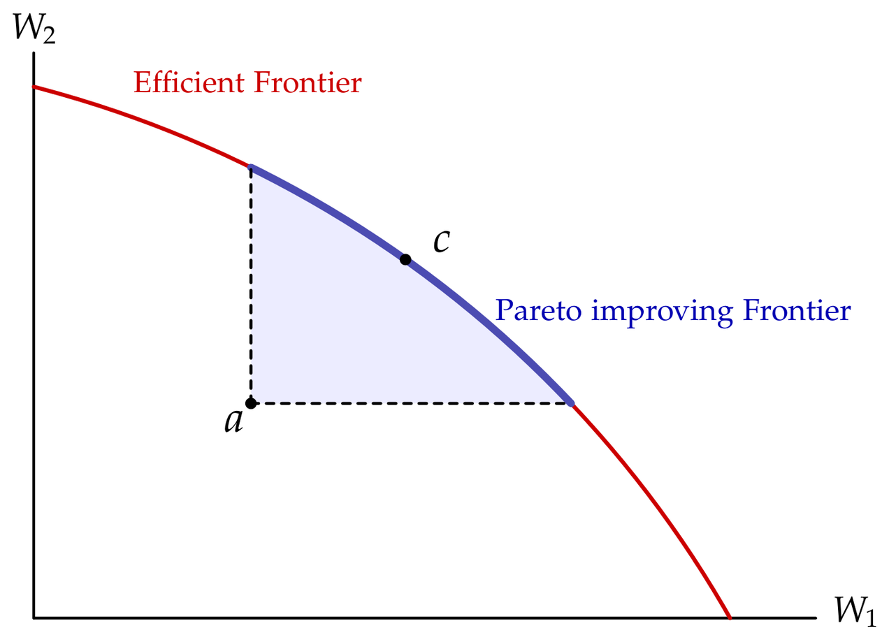
(a) Institutional Constraints (R1, R2)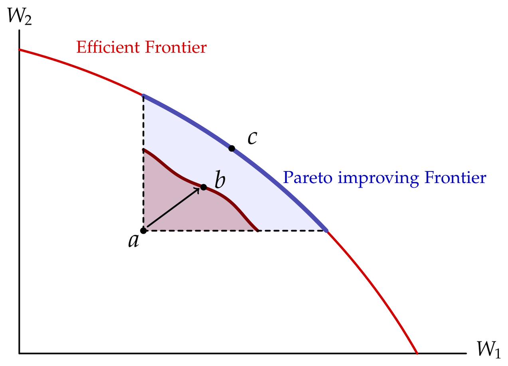
(b) Fiscal and Informational Constraint (R3, R4)Another institutional constraint is fiscal feasibility, which limits the range of transfer schemes that can credibly be implemented. Along the efficient frontier, each outcome is associated with a transfer \(T^{*}_{i}=(\omega _{i}-y^{*}_{i})Y^{*}\), where \(\omega _{i}\) is the Pareto weight attached to country \(i\) and \(y^{*}_{i}\) is its income share under the constrained-optimal carbon prices. Implementing these transfers requires tax revenue, implying that some jurisdictions finance foreign consumption out of domestic carbon-tax receipts. This is politically demanding unless the tax base is restricted. We therefore constrain transfers to be financed from the border-related component of carbon taxes.
- R3
[Fiscal feasibility] Transfers must be financed by the border-related portion of carbon taxes, rather than those imposed on purely domestic transactions. Moreover, a member’s net payment to the transfer scheme cannot exceed its border-related carbon-tax revenue.
To reiterate, transfers are necessitated by the distributive externalities from carbon pricing. As detailed in Section 3.2, carbon pricing creates international winners and losers, since the tax burden is non-localized but the resulting revenues are rebated locally. To ensure consensus, the reform must make transfers from winners to losers, but R3 puts restrictions on the size of these transfers.
To formalize this constraint, let \(h_{i}\) denote the border-related component of country \(i\)’s carbon-tax revenue:
where \((1-\lambda _{ii,k})\) denotes country \(i\)’s imported expenditure share on each primary or secondary energy \(k\in \mathbb {E}\equiv \mathbb {E}_{1}\cup \mathbb {E}_{2}\), \(Z_{i,k}\) is the corresponding \(\text{CO}_{2}\) emissions, and \(\tilde {\tau }\) is the harmonized demand-side carbon price adopted by participants in the agreement.Here, we have specified carbon prices on the demand side rather than the supply side. We will also consider a similar alternative based on supply-side carbon pricing. However, as we will discuss, the design based on demand-side carbon pricing substantially outperforms this alternative. We can formally define the politically feasible set of transfer-price pairs \((\tilde {\tau },T)\) as those that satisfy
The above condition states that the magnitude of country \(i\)’s net contribution to the transfer scheme (\(-T_{i}\)) cannot exceed its border-related carbon-tax revenues (\(h_{i}\)).
Our final constraint restricts the informational burden of the reform. The informational burden is partially mitigated by our emphasis on harmonized carbon pricing, which is attractive not only on efficiency grounds but also for its simplicity. However, harmonized carbon pricing generates distributive externalities that place disproportionate burdens on certain countries, making it necessary to provide compensatory transfers. Because individual tax burdens cannot be directly observed, the design of the transfer mechanism must balance targeting against informational complexity. This trade-off motivates requirement R4.
- R4
[Minimal information] Transfers must be expressible as a simple function of publicly available and verifiable statistics, such as national accounts or aggregate trade measures, collected in the set \(\mathcal {X}\). Formally, the transfer rule for all countries \(i=1,...,N\) satisfies,
\[T_{i}=\alpha _{i}(x_{i},\beta )H_{i}(\tilde {\tau },T)-h_{i}(\tilde {\tau },T)\qquad with\qquad [x_{i}]\in \mathcal {X}\]where \(H_{i}(\tilde {\tau },T)\equiv \sum _{n}h_{n}(\tilde {\tau },T)\) is the sum of contributions, with the allocation shares satisfying\[\alpha _{i}(x_{i},\beta )=\beta ^{T}x_{i},\qquad \qquad \sum _{n}\alpha _{n}(x_{n},\beta )=1\]
Note that the fiscal feasibility constraint is automatically satisfied if \(\alpha _{i}(x_{i},\beta )\geq 0\), so we encode R3 as a restriction on the sign of the allocation shares. Here, \(x_{i}\in \mathcal {X}\) denotes an observable statistic for country \(i\) drawn from a set \(\mathcal {X}\) of candidate variables, such as the domestic expenditure share \(\lambda _{ii,k}\) or other national accounts and trade aggregates, and \(\beta\) is a vector of coefficients.
Panel (b) in Figure 1 illustrates how R3 and R4 truncate the feasible set: fiscal and minimal information constraints may prevent the transfers required to implement a frontier allocation such as point \(c\), leaving second-best outcomes such as point \(b\) as the best attainable options.
Having presented all the restrictions, we can now formally state the optimal linkage problem as a constrained optimization problem that maximizes the harmonized carbon price subject to R1–R4, given \(x\subset \mathcal {X}\):
The first constraint embeds R1 and R2 as incentive compatibility conditions for each country. The next lines collectively encode the fiscal feasibility and informational constraints, R3 and R4. In Section 7, our quantitative analysis will provide a solution to this constrained optimal problem through a “global climate fund” mechanism.
4.2 The linkage problem without transfers
International transfers may be challenging to implement, despite the feasibility constraints imposed above.We note that climate agreements under the Conference of the Parties (COP) have already created mechanisms for international financial transfers. According to the Climate Funds Pledge Tracker, total pledges reached USD 821.5 million by the end of 2025. These transfers are therefore more than a theoretical possibility. At the same time, political hurdles may make it difficult to sustain this funding and implement it at a larger scale. We therefore consider an alternative reform that does not require transfers between countries. We refer to this alternative as decentralized linkage. Each country freely chooses its mix of demand-side and supply-side carbon taxes, but is required to meet a carbon tax revenue floor. In Section 8, we explore alternative rules for determining this obligation. These rules differ in whether they impose a revenue floor alone or also impose price floor, and whether the revenue floor is evaluated based on post-policy or fixed tax bases. To fix ideas, we expand on one example below. For a given reference carbon price \(\tilde {\tau }\), country \(i\) must meet a revenue floor, \(G_{i}(\tilde {\tau })\), which is the tax revenue it would generate under a demand-side carbon tax at the reference price \(\tilde {\tau }\). This scheme has no price floor, and the revenue is calculated using the post-policy equilibrium tax base.
Each country’s mix of taxes is the best response to the choices of the other countries, resulting in a Nash equilibrium. Specifically, let \(\tilde {\tau }^{(Q)}_{i}\) and \(\tilde {\tau }^{(C)}_{i}\) denote country \(i\)’s supply-side and demand-side carbon prices.Here, each country’s choice of demand- and supply-side carbon prices must be applied uniformly within the country. In the notation of Equation (8), this means \(\tilde {\tau }^{(Q)}_{i,k}=\tau ^{(Q)}_{i}\) for all \(k\); and \(\tilde {\tau }^{(H)}_{i,k}=\tilde {\tau }^{(I)}_{i,kg}=\tau ^{(C)}_{i}\) for all \(k,g\). When the revenue floor is anchored to reference price \(\tilde {\tau }\), country \(i\)’s best response solves
where \(\tilde {\boldsymbol {\tau }}_{-i}\equiv \{\tilde {\tau }^{(Q)}_{n},\tilde {\tau }^{(C)}_{n}\}_{n\neq i}\) is the price choice of other countries and \(d\) denotes trade costs under the WTO, which govern the balance of market access under the prevailing trade agreement. If the rule also included a price floor, the constraint set would additionally include \(\tilde {\tau }^{(Q)}_{i}+\tilde {\tau }^{(C)}_{i}\geq \varrho \tilde {\tau }\), so that the sum of the two tax rates is at least equal to a multiple \(\varrho >0\) of the reference price. Denote country \(i\)’s strategic tax choices and its welfare in the resulting Nash equilibrium by \((\tilde {\tau }^{(Q)*}_{i},\tilde {\tau }^{(C)*}_{i})\) and \(W^{*}_{i}(\tilde {\tau };d)=W_{i}\left (\tilde {\tau }^{(Q)*}_{i},\tilde {\tau }^{(C)*}_{i}\:|\:\tilde {\boldsymbol {\tau }}^{*}_{-i},\:d\right )\). The linkage problem can be formalized as
where, as before, \(W^{(a)}_{i}\) is country \(i\)’s objective function evaluated at the disagreement point. This problem is similar to the earlier linkage problem, but precludes the need for transfers. So, it relaxes R3 (fiscal feasibility) and R4 (minimal information) by design and affords countries the flexibility to choose their own mix of demand-side and supply-side taxes. Section 8 provides a quantitative analysis of the decentralized linkage problem.
5 Taking the Model to Data
Our quantitative analysis centers on counterfactual equilibrium outcomes under changes in trade and carbon policy. We first outline how we map the model to data to carry out these policy simulations. Solving the linkage problem also requires estimates of key trade-offs, especially the costs of foregone accession and climate change. To obtain these, we use auxiliary historical data to estimate the effect of WTO membership on market access; and, in the spirit of revealed preferences of governments, infer each country’s valuation of climate change damages.
5.1 Data and Model Parameters
Quantitative Strategy.\(\:\:\:\) Employing the method of exact hat algebra, the set of data and parameters required to calculate counterfactual outcomes are: (i) Baseline shares consisting of cost share of labor, energy reserves, and intermediate inputs, \(\alpha ^{(L)}_{i,k}\), \(\alpha ^{(R)}_{i,k}\) and \(\alpha ^{(I)}_{i,gk}\) for all industries \(k\in \mathbb {G}\); households’ expenditure shares, \(\beta _{i,k}\), and international trade shares, \(\lambda _{ij,k}\); (ii) Baseline aggregates consisting of national expenditure \(E_{i}\), industry-level sales and expenditures, \(Y_{i,g}\) and \(X_{i,g}\), national-level wage bills \(\left (w_{i}L_{i,k}\right )\), rents collected from energy reserves (\(r_{i,k}R_{i,k}\)), carbon emissions at the level of origin-destination for industries and households \(Z^{(I)}_{ij,gk}\), \(Z^{(H)}_{ij,k}\)—which, by aggregation, imply the national and global emissions; (iii) baseline taxes; (iv) and trade elasticity parameters (\(\sigma _{k}-1\)).
Appendix D presents the system of equations that specify equilibrium changes in response to trade and carbon pricing policies. For each policy, the solution to this system determines changes in all equilibrium values, taking in as input the above set of data and parameters.
Parametric Assumptions.\(\:\:\:\) In our main specification, we adopt a Cobb-Douglas functional form for the demand aggregator \(\text{C}_{i}\) (.) and production functions \(\text{F}_{i,k}(.)\). In Section 7.3, we provide robustness checks using alternative functional forms that allow for lower-than-unity energy demand elasticity.
Data on Production, Trade and Expenditures.\(\:\:\:\) We take information on bilateral trade, gross output and value added, expenditures on intermediate goods and final consumption from the Global Trade Analysis Project (GTAP) database (Aguiar et al., 2019), which reports the global matrix of flows from any origin country-industry pair to any destination country-industry or country-household pair in the year 2014. Our sample covers the largest 50 countries in terms of GDP plus six aggregate regions, each encompassing multiple neighboring countries. Together, our sample covers the global flows of production and trade in their entirety. We divide the space of goods into 23 industries, out of which 3 are primary energy (Coal, Crude Oil, and Natural Gas), 3 are secondary energy (Refined Petroleum, Electricity, and Gas Manufacturing & Distribution), with the remaining 17 industries consisting of Agriculture, Other Mining (aggregation of mining net of primary energy), 11 Manufacturing industries, and 4 Service industries. Tables 1 and 2 report the list of industries and countries along with some of their key characteristics.
Share from World | Exports to | Energy | CO\(_2\) Emission | |||
| Industry | CO\(_2\) Emission | Output | Exports | Output Ratio | Cost Share | per Output |
| Coal | 0.6% | 0.3% | 0.9% | 0.27 | 0.05 | 0.29 |
| Crude Oil | 1.1% | 1.6% | 7.4% | 0.50 | 0.02 | 0.11 |
| Natural Gas | 0.7% | 0.4% | 1.6% | 0.43 | 0.05 | 0.29 |
| Refined Petroleum | 3.9% | 2.6% | 4.1% | 0.18 | 0.84 | 0.26 |
| Electricity | 48.3% | 1.9% | 0.3% | 0.02 | 0.38 | 4.35 |
| Gas Mfg and Dist | 1.1% | 0.2% | 0.1% | 0.07 | 0.14 | 0.98 |
| Agriculture | 1.5% | 2.9% | 3.6% | 0.11 | 0.04 | 0.09 |
| Other Mining | 0.6% | 0.7% | 1.1% | 0.28 | 0.07 | 0.14 |
| Food | 1.3% | 4.8% | 6.5% | 0.12 | 0.02 | 0.04 |
| Textile | 0.4% | 2.1% | 6.1% | 0.27 | 0.02 | 0.03 |
| Wood | 0.1% | 0.6% | 0.5% | 0.14 | 0.02 | 0.03 |
| Paper | 0.7% | 1.2% | 1.8% | 0.15 | 0.05 | 0.10 |
| Chemicals | 3.4% | 3.6% | 11.4% | 0.33 | 0.12 | 0.16 |
| Plastics | 0.5% | 1.3% | 2.3% | 0.22 | 0.04 | 0.06 |
| Nonmetallic Minerals | 5.2% | 1.3% | 0.6% | 0.12 | 0.10 | 0.70 |
| Metals | 5.3% | 5.0% | 6.0% | 0.23 | 0.06 | 0.18 |
| Electronics and Machinery | 0.6% | 6.9% | 13.8% | 0.40 | 0.01 | 0.01 |
| Motor Vehicles | 0.2% | 3.5% | 7.1% | 0.36 | 0.01 | 0.01 |
| Other Manufacturing | 0.2% | 1.2% | 2.5% | 0.29 | 0.01 | 0.03 |
| Construction | 0.7% | 7.7% | 0.1% | 0.01 | 0.01 | 0.01 |
| Wholesale and Retail | 0.6% | 7.7% | 2.2% | 0.03 | 0.02 | 0.01 |
| Transportation | 19.5% | 4.2% | 4.7% | 0.13 | 0.22 | 0.78 |
| Other Services | 3.5% | 38.3% | 15.4% | 0.04 | 0.01 | 0.02 |
Share from World | CO\(_2\) Emission | Energy Cost | ||||||
| Country | CO\(_2\) Emission | Output | Population | per Output | per Capita | Share | ||
| United Arab Emirates | 0.5% | 0.4% | 0.1% | 146.1 | 106.9 | 0.07 | ||
| Argentina | 0.7% | 0.6% | 0.6% | 134.5 | 28.2 | 0.09 | ||
| Australia | 1.2% | 1.8% | 0.3% | 82.6 | 98.1 | 0.04 | ||
| Austria | 0.2% | 0.5% | 0.1% | 40.1 | 40.4 | 0.03 | ||
| Belgium | 0.3% | 0.8% | 0.2% | 45.7 | 54.5 | 0.05 | ||
| Brazil | 1.6% | 2.7% | 2.8% | 67.6 | 14.3 | 0.06 | ||
| Canada | 1.9% | 2.0% | 0.5% | 108.5 | 99.6 | 0.06 | ||
| Switzerland | 0.1% | 0.9% | 0.1% | 17.2 | 30.4 | 0.01 | ||
| Chile | 0.3% | 0.3% | 0.2% | 99.3 | 27.8 | 0.06 | ||
| China | 26.5% | 17.9% | 18.9% | 172.1 | 35.9 | 0.05 | ||
| Colombia | 0.2% | 0.4% | 0.6% | 73.3 | 9.8 | 0.04 | ||
| Czech Republic | 0.3% | 0.3% | 0.1% | 100.4 | 50.2 | 0.05 | ||
| Germany | 2.3% | 4.8% | 1.1% | 55.5 | 52.0 | 0.04 | ||
| Denmark | 0.2% | 0.4% | 0.1% | 52.1 | 56.7 | 0.03 | ||
| Egypt, Arab Rep. | 0.6% | 0.3% | 1.3% | 192.0 | 11.7 | 0.07 | ||
| Spain | 0.8% | 1.7% | 0.6% | 54.6 | 31.9 | 0.05 | ||
| Finland | 0.2% | 0.3% | 0.1% | 56.9 | 54.7 | 0.06 | ||
| France | 1.1% | 3.2% | 0.9% | 38.6 | 29.9 | 0.03 | ||
| United Kingdom | 1.4% | 3.6% | 0.9% | 46.7 | 41.0 | 0.03 | ||
| Indonesia | 1.5% | 1.1% | 3.5% | 156.7 | 10.7 | 0.06 | ||
| India | 6.4% | 2.7% | 17.9% | 274.4 | 9.1 | 0.13 | ||
| Ireland | 0.1% | 0.3% | 0.1% | 52.6 | 58.7 | 0.03 | ||
| Iran, Islamic Rep. | 1.8% | 0.5% | 1.1% | 433.4 | 42.5 | 0.17 | ||
| Israel | 0.2% | 0.3% | 0.1% | 73.6 | 48.3 | 0.05 | ||
| Italy | 1.1% | 2.6% | 0.8% | 47.0 | 32.6 | 0.04 | ||
| Japan | 3.4% | 5.9% | 1.8% | 67.5 | 50.1 | 0.06 | ||
| Korea, Rep. | 1.7% | 2.2% | 0.7% | 88.3 | 60.2 | 0.09 | ||
| Mexico | 1.4% | 1.4% | 1.7% | 115.1 | 21.6 | 0.06 | ||
| Malaysia | 0.8% | 0.6% | 0.4% | 155.4 | 49.9 | 0.07 | ||
| Nigeria | 0.2% | 0.5% | 2.4% | 56.0 | 2.3 | 0.02 | ||
| Netherlands | 0.6% | 1.2% | 0.2% | 55.0 | 61.5 | 0.06 | ||
| Norway | 0.2% | 0.6% | 0.1% | 45.9 | 79.0 | 0.04 | ||
| New Zealand | 0.1% | 0.3% | 0.1% | 53.6 | 47.6 | 0.04 | ||
| Pakistan | 0.5% | 0.3% | 2.7% | 179.8 | 4.4 | 0.07 | ||
| Peru | 0.2% | 0.3% | 0.4% | 70.4 | 10.0 | 0.05 | ||
| Philippines | 0.3% | 0.3% | 1.4% | 113.5 | 6.1 | 0.05 | ||
| Poland | 0.9% | 0.7% | 0.5% | 141.3 | 42.8 | 0.06 | ||
| Portugal | 0.2% | 0.3% | 0.1% | 67.9 | 29.8 | 0.06 | ||
| Qatar | 0.3% | 0.2% | 0.0% | 146.0 | 194.9 | 0.06 | ||
| Romania | 0.2% | 0.2% | 0.3% | 102.4 | 20.2 | 0.07 | ||
| Russian Federation | 4.7% | 2.4% | 2.0% | 228.7 | 60.1 | 0.14 | ||
| Saudi Arabia | 1.6% | 0.8% | 0.4% | 246.3 | 95.2 | 0.15 | ||
| Sweden | 0.1% | 0.7% | 0.1% | 24.3 | 26.5 | 0.04 | ||
| Thailand | 0.9% | 0.6% | 0.9% | 172.3 | 24.8 | 0.12 | ||
| Turkey | 1.0% | 1.0% | 1.1% | 123.4 | 24.3 | 0.06 | ||
| United States | 17.2% | 20.0% | 4.4% | 100.0 | 100.0 | 0.05 | ||
| Venezuela, RB | 0.5% | 0.5% | 0.4% | 115.8 | 32.7 | 0.03 | ||
| Vietnam | 0.5% | 0.3% | 1.3% | 187.2 | 9.5 | 0.05 | ||
| South Africa | 1.4% | 0.5% | 0.8% | 317.1 | 47.7 | 0.07 | ||
| RO Africa | 1.5% | 1.5% | 11.4% | 115.3 | 3.3 | 0.06 | ||
| RO Americas | 0.8% | 0.9% | 1.7% | 110.5 | 12.4 | 0.07 | ||
| RO Asia and Oceania | 2.2% | 2.5% | 5.0% | 99.4 | 11.0 | 0.07 | ||
| RO EU | 1.5% | 1.3% | 1.0% | 129.8 | 39.6 | 0.08 | ||
| RO Eurasia | 2.4% | 0.8% | 1.9% | 345.4 | 32.1 | 0.13 | ||
| RO Middle East | 1.4% | 0.7% | 1.5% | 221.9 | 23.5 | 0.15 | ||
The GTAP database provides international trade shares, expenditure shares by households, as well as the cost share of labor and intermediate goods (including primary and secondary forms of energy) for each industry. We additionally observe the value added paid by each industry to natural resources, which are positive for primary energy industries and zero elsewhere. Accordingly, we calibrate the cost share of energy reserves in each primary energy industry \(k\in \mathbb {E}_{1}\), \(\alpha ^{(R)}_{i,k}\), as the value added paid to natural resources divided by total gross output—which imply inverse energy supply elasticities corresponding to \(\rho _{i,k}\equiv \alpha ^{(R)}_{i,k}/(1-\alpha ^{(R)}_{i,k}\)). To avoid potential mis-measurements at the level of individual countries, we set \(\alpha ^{(R)}_{i,k}=\alpha ^{(R)}_{k}\) as a common value for all countries \(i\in \mathbb {N}\), based on global averages of the cost share of natural resources. The calibrated values of \(\alpha ^{(R)}_{k}\) are 0.23, 0.24, and 0.22 respectively for Coal, Crude Oil, and Natural Gas. These values correspond to inverse supply elasticities of 0.29, 0.32, and 0.28, which are close to the inverse supply elasticity estimate of 0.34 for aggregate fossil fuel supply estimated by Garcia-Lembergman et al. (2025) based on data on marginal costs and production of fossil fuels.
Data on \(\text{CO}_{2}\) Emissions.\(\:\:\:\) We additionally take from the GTAP database information on \(\text{CO}_{2}\) emissions, associated with the use of each of the six energy goods (primary or secondary) by industries or households. The accounting of the emission flows in the data ensures there is no double counting. These emissions are classified as “direct emissions,” meaning they represent emissions generated from burning fossil fuels and not necessarily their use during the production process. For instance, a relatively small portion of crude oil is combusted during its extraction or when it gets processed in the production of refined petroleum, while the majority of the carbon content of petroleum is eventually burned in the form of refined petroleum products by households and in downstream industries such as Chemicals and Transportation.
Carbon Accounting.\(\:\:\:\) Our data, as noted above, does not directly provide the \(\text{CO}_{2}\) emission content of primary energy goods. We, however, require this information to specify supply-side carbon taxes—which target the carbon content of primary energy goods at the point of extraction. To address this, we have developed an algorithm that uses input-output parameters of the global value chain to trace \(\text{CO}_{2}\) emissions back to their original sources—specifically, to each primary form of energy (coal, crude oil, and natural gas) from each source country. Appendix A.3 describes our algorithm in detail and presents results showing that they closely match those obtained using independent measures of carbon content in primary energy goods. The advantage of our approach is that it is internally consistent with the rest of our data, maintaining the accounting of \(\text{CO}_{2}\) emissions.
Baseline Policy Wedges.\(\:\:\:\) We obtain fossil-fuel taxes from the OECD’s Environmentally-related Tax Revenues and explicit carbon prices from the OECD’s Net Effective Carbon Rates dataset. Appendix A.4 provides details on how we calibrate these policy wedges. We set the explicit carbon prices to zero in our baseline equilibrium, which closely mirrors the policy landscape in 2014, when carbon prices were zero in most countries and minimal even in regions with carbon pricing. In Section 5.2.3, we make use of information on 2023 carbon prices to infer governments’ care toward climate change. Using the method of hat algebra, we do not need to know baseline trade costs insofar as they do not generate revenues. However, in estimating trade elasticities, we use import tariffs from Teti (2024).
5.2 Estimating Policy Trade-offs using Event Study Design
A key constraint for the reform is that the transition from the disagreement point (a) to the annexed agreement (b) must be Pareto-improving. Solving the optimal reform problem therefore requires knowing the counterfactual changes in trade barriers if countries were to defect to the disagreement point, as well as the necessary elasticities to convert these changes to welfare effects. We recover these estimates below.
5.2.1 Estimating the impact of WTO membership on market access
We estimate the effect of joint GATT/WTO membership on bilateral market access using a staggered difference-in-differences design. Identification exploits variation in the timing of WTO accession, noting that when a country pair becomes joint members, MFN rules mandate a discrete reduction in bilateral tariffs. We compare changes in trade outcomes for treated country pairs that trade under MFN tariffs, with contemporaneous changes for pairs that never trade under joint MFN status. The estimation is conducted using bilateral trade data for 150 countries, tracking WTO membership and preferential trade agreements over the 1980–2019 period. Industry-level trade data come from the International Trade and Production Database (Borchert et al., 2022) and WTO membership status and standard gravity variables come from the Dynamic Gravity Dataset (Gurevich and Herman, 2018), with details provided in Appendix A.2.
Because joint GATT/WTO treatment is staggered and treatment effects may vary across accession cohorts and over time, a conventional two-way fixed effects estimator may aggregate heterogeneous treatment effects using potentially negative weights. We therefore use a staggered difference-in-differences specification that is robust to treatment effect heterogeneity (Baker et al., 2025). Our implementation uses the linear extended two-way fixed effects estimator of Wooldridge (2025), which identifies cohort-by-period average treatment effects under no anticipation and conditional parallel trends. This choice is appealing in this context, because the regression form allows for high-dimensional fixed effects needed for gravity estimation (Nagengast and Yotov, 2025). Let \(G_{ij}\) denote a country pair \(ij\)’s treatment cohort, as the first year \(i\) and \(j\) are both WTO members. For each broad sector, we estimate
The right-hand side variable \(y\) is a transformation of trade values. Our baseline analysis uses \(y=\ln (1+X)\) to handle zeros but we also experiment with \(y=\text{asinh}X\) and \(y=\ln X\), which drops zeros. We additionally experiment with a PPML estimator that handles zeros more organically. The vector \(\mathbb{X}^{\prime}_{ij,t}\) contains controls for RTAs and sanctions. The fixed effects \(\psi\) control for directed-pair, exporter–year, and importer–year effects. The coefficients \(\mathscr {T}_{gs,k}\) are cohort-by-time effects identified under the no anticipation and conditional parallel trends assumptions. The average treatment effect from joint WTO membership is obtained as
where \(\tilde {t}\) is the treatment onset relative to official joint membership date.If we were to impose \(\mathscr {T}_{gs,k}=\beta _{k}\) for all cohorts \(g\) and years \(s\), we would then estimate a single \(\beta _{k}\) as the coefficient of \(\text{WTO}_{ij,t}\) in the regression, with \(\text{WTO}_{ij,t}\) taking the value of one only when both \(i\) and \(j\) were members of the WTO in year \(t\). Under staggered accession, this single \(\beta _{k}\) is partly identified from comparisons of later-treated with earlier-treated pairs; this is innocuous if effects are homogeneous but biases \(\beta _{k}\) when effects differ across cohorts or grow with time since accession. Allowing \(\mathscr {T}_{gs,k}\) to vary by cohort and year ensures that each cohort’s effect is identified only against pairs that are never treated or not yet treated in that year, and heterogeneous effects are then averaged with explicit sample weights in \(\hat {\mathscr {T}}_{k}\). We map the estimated average treatment effect into changes in trade costs if countries abandon WTO membership using the CES import demand system as
The results are displayed in Table 3, organized by three broad sectors: Agriculture, Manufacturing, and Energy. We construct a single fixed estimation sample for each sector, defined as the intersection of observations eligible under all five maintained onset conventions from \(\tilde {t}=0\) through \(\tilde {t}=-4\). For each sector, we report results based on two choices for the onset of treatment. First, we assume \(\tilde {t}=0\) onset of WTO accession benefits without anticipation. Second, to address concerns about potential violations of the no-anticipation assumption, we implement a design in which treatment begins at \(\tilde {t}=-2\), two years prior to official joint accession. The findings are consistent with the prevailing view that WTO membership significantly increases market access in the agriculture and manufacturing sectors, while having a less pronounced effect on energy trade. Specifically, we estimate that WTO membership increases trade values with other member countries by approximately 50% for agricultural goods and almost 65% for manufacturing goods. In contrast, the estimated effects on energy trade are smaller and statistically significant only at the 10% level. Our baseline calibration uses the estimates obtained under \(\tilde {t}=-2.\)
Agriculture & Mining | Manufacturing | Energy | ||||
| Treatment onset | \(t=0\) | \(t=-2\) | \(t=0\) | \(t=-2\) | \(t=0\) | \(t=-2\) |
(1) | (2) | (3) | (4) | (5) | (6) | |
| \(\widehat {\delta }^{\mathrm {WTO}}_{k}\) | 0.506\(^{***}\) | 0.552\(^{***}\) | 0.633\(^{***}\) | 0.664\(^{***}\) | 0.277\(^{*}\) | 0.308\(^{*}\) |
| (0.093) | (0.100) | (0.091) | (0.101) | (0.146) | (0.159) | |
| Observations | 310,313 | 310,313 | 331,646 | 331,646 | 189,342 | 189,342 |
| Exporters | 148 | 148 | 147 | 147 | 146 | 146 |
| Importers | 148 | 148 | 147 | 147 | 147 | 147 |
| Years | 34 | 34 | 32 | 32 | 32 | 32 |
| Exporter \(\times\) importer FE | Yes | Yes | Yes | Yes | Yes | Yes |
| Exporter \(\times\) year FE | Yes | Yes | Yes | Yes | Yes | Yes |
| Importer \(\times\) year FE | Yes | Yes | Yes | Yes | Yes | Yes |
| RTA control | Yes | Yes | Yes | Yes | Yes | Yes |
| Sanctions controls (12) | Yes | Yes | Yes | Yes | Yes | Yes |
No anticipation assumption. Appendix A.2 examines the sensitivity of results to the date at which treatment is assumed to begin. Because trade may begin adjusting before formal accession, our baseline sets treatment onset to two years before joint membership (\(\tilde {t}=-2\)). Appendix A.2 re-estimates the model using alternative treatment onset dates \(\tilde {t}\in \{0,-1,-2,-3\}\). The average estimates are positive for every sector under all four specifications. To make the timing specifications comparable, we average effects over the same post-membership years and use the same treatment cohorts and weights in every specification. The appendix also reports placebo estimates for periods \(-6\), \(-5\), and \(-4\), relative to period \(-3\). While these placebo estimates are not universally insignificant, the estimated effects are non-monotone and do not reveal a common anticipation pattern. We also run other robustness checks, like including the not yet treated in the control group and dummies for domestic flows. The results remain generally robust across alternative specifications.
Heterogeneous treatment effects. The effect of WTO membership on market access can generally vary across bilateral country pairs. Our empirical estimator allows effects to vary by treatment cohort and year, but our quantitative analysis uses the average treatment effect. This abstraction is purposeful, because we are less interested in heterogeneous benefit from WTO membership. Instead we want to isolate the heterogeneous burdens from carbon-pricing obligations, as highlighted by our theory. However, we note that this abstraction is not without consequence. For instance, if WTO membership generates systematically smaller trade benefits for countries near the participation constraint, our analysis based average treatment effects would overstate such a country’s willingness to participate.
5.2.2 Estimating Sectoral Trade Elasticities
To translate the estimated effects of WTO membership on trade values into corresponding effects on trade barriers, it is necessary to estimate trade elasticities. We estimate these elasticities ourselves rather than borrowing them from the literature for two reasons. First, doing so ensures that the elasticities are based on the same international trade data used to estimate the effects of WTO membership on trade values. Second, existing estimates for energy goods are scattered across studies and empirical settings, whereas our approach provides a consistent set of estimates tailored to our data and application.
We do so using the local projection instrumental variable (LP-IV) approach developed by Boehm, Levchenko, and Pandalai-Nayar (2023), applying it to new data. For the trade data, we use an extended panel from the International Trade and Production Database, spanning the years 1988 to 2019. We merge this data with the tariff database compiled by Teti (2024). Apart from using different data, we follow the methodology of Boehm et al. (2023) closely. We instrument for the horizon-\(h\) tariff change for each partner with the initial MFN tariff change, restricting our sample to non-major partners. Details about the methodology are provided in Appendix A.1.
The results are presented in Table 4. We report the benchmark LP-IV estimates incorporating 5-year and 10-year log differences. For comparison, we also report trade elasticity estimated by regressing trade flows on tariffs in log levels, controlling for multilateral and bilateral fixed effects. This approach closely resembles Fontagné, Guimbard, and Orefice (2022). The LP-IV estimates are larger than the OLS estimates in log levels, hinting at potential tariff endogeneity. As expected, the elasticities based on 10-year log differences are higher than those based on 5-year log-differences. Our LP-IV estimates also exceed those reported by Boehm et al. (2023), possibly due to our use of different data. In our main specification we use the LP-IV estimates based on 5-year log differences.
Agriculture & Mining | Manufacturing | Energy | |||||||||
| LP-IV | OLS | LP-IV | OLS | LP-IV | ||||||
| (log levels) | 5-year | 10-year | (log levels) | 5-year | 10-year | (log levels) | 5-year | 10-year | |||
| 4.25 | 7.02 | 13.22 | 2.35 | 3.95 | 6.33 | 7.81 | 12.25 | 12.14 | ||
| (0.25) | (2.59) | (3.27) | (0.17) | (1.90) | (2.80) | (0.56) | (4.25) | (5.13) | |||
| Observations | 477,492 | 337,182 | 248,910 | 339,042 | 246,852 | 181,887 | 360,262 | 234,113 | 168,561 | ||
| Exporters | 145 | 145 | 145 | 145 | 145 | 143 | 145 | 145 | 145 | ||
| Importers | 145 | 145 | 145 | 145 | 145 | 145 | 145 | 145 | 145 | ||
| Years | 32 | 26 | 21 | 32 | 26 | 21 | 32 | 26 | 21 | ||
| Exporter \(\times\) importer FE | Yes | Yes | Yes | Yes | Yes | Yes | Yes | Yes | Yes | ||
| Exporter \(\times\) year FE | Yes | Yes | Yes | Yes | Yes | Yes | Yes | Yes | Yes | ||
| Importer \(\times\) year FE | Yes | Yes | Yes | Yes | Yes | Yes | Yes | Yes | Yes | ||
The estimation results suggest that WTO membership reduces trade barriers by approximately 8% for agricultural products, 17% for manufactured goods, and 3% for energy.These values are based on the WTO estimates under \(\tilde {t}=-2\) and trade elasticity estimates under 5-year LP-IV. Furthermore, we acknowledge that this inference recovers the cost of non-staggered withdrawal by all members from the benefits of staggered accession. Nonetheless, the implied effects are relatively conservative compared with predictions from the strategic trade policy literature. As a rule of thumb, the Nash tariff for a small open economy is inversely proportional to the trade elasticity. In manufacturing, for example, this implies a tariff rate of 25%, compared with about 17% in our empirical estimate. In our main specification, we use these estimates as the impact of withdrawal from the WTO on trade costs. We also experiment with tariff changes and find that the results remain close to those in our main specification. (Section 7.3).
5.2.3 Inferring governments’ valuation of climate change damages
When examining governments’ decisions to join international agreements, we argue that the relevant measure of climate change is the one perceived by governments rather than the actual damages estimated by researchers. Indeed, across countries, observed carbon prices show no correlation with estimated climate damages and, if anything, appear to be even negatively correlated with them.For instance, the correlation between carbon prices in 2023 and country-level estimates of the social cost of carbon from Ricke et al. (2018) is -0.33, with a standard error of 0.16. As such, we infer each government’s valuation of climate damage from their existing energy tax and climate policies. This revealed preference approach recognizes that government objectives may not align with social welfare.However, to provide a more complete analysis, we also experiment with an alternative where governments’ objectives align with social welfare (Section 7.2).
Our revealed preference approach extracts governments’ valuations of emissions-induced non-climate and climate damages from their observed energy taxes and carbon prices. This allows us to infer the weight each government places on local emissions associated with their local harm, and on global emissions associated with climate change damages.
To begin, we specify the objective function of country \(i\)’s government as:
where \(C_{i}\) is aggregate real consumption in country \(i\), and the two parameters, \(\delta ^{\text{(local)}}_{i}\) and \(\delta ^{\text{(global)}}_{i}\), represent the disutility from local and global \(\text{CO}_{2}\) emissions as perceived by country \(i\)’s government. The disutility from local emissions, \(\delta ^{\text{(local)}}_{i}Z_{i}\), is a shorthand for non-climate damages in government’s evaluation, such as adverse local health effects from air pollutants co-emitted with \(\text{CO}_{2}\) emissions. The disutility from global emissions, \(\delta ^{\text{(global)}}_{i}Z^{\text{(global)}}\), is the climate damage cost from global \(\text{CO}_{2}\) emissions.
Our calibration proceeds in two steps. First, we recover \(\delta ^{\text{(local)}}_{i}\) from 2014 energy taxes when carbon pricing was virtually absent. Second, we infer \(\delta ^{\text{(global)}}_{i}\) from the carbon prices adopted in 2023.
In the first step, we focus on our sample in the year 2014 when carbon pricing was virtually nonexistent and assume that in 2014, \(\delta ^{\text{(global)}}_{i}\) is zero everywhere. Let \(\boldsymbol {t}_{i}\equiv [t^{(I)}_{i,kg},t^{(H)}_{i,k}]\) denote country \(i\)’s observed ad valorem energy tax rates for each energy good \(k\) when used by industries and households, respectively. We consider the following policy problem for the government in each country \(i\), taking other countries’ policies as given:
The optimal tax vector \(\boldsymbol {t}^{*}_{i}(\delta ^{\text{(local)}}_{i})\) depends on \(\delta ^{\text{(local)}}_{i}\) because higher energy taxes reduce local emissions \(Z_{i}\), which are valued more highly when the government’s concern for local damages is greater. We employ a numerical algorithm that uncovers the value of \(\delta ^{\text{(local)}}_{i}\) for which the observed taxes \(\boldsymbol {t}_{i}\) are unilaterally optimal.Appendix A presents our numerical algorithm. Two clarifications are worth noting. First, when assessing whether observed taxes are optimal for a given \(\delta ^{\text{(local)}}_{i}\), we restrict attention to uniform carbon-price perturbations. Specifically, we consider only tax changes implied by a marginal increase or decrease in a carbon price applied uniformly to the carbon content of all fuels across all end users within a country. This reduces the dimensionality of the problem while keeping the focus on carbon pricing, the policy instrument central to our analysis. Second, for some countries, no value of \(\delta ^{\text{(local)}}_{i}\) rationalizes the observed taxes as an unconstrained optimum. In those cases, we identify the largest \(\delta ^{\text{(local)}}_{i}\) such that a marginal increase in energy tax rates lowers welfare, even though a marginal decrease would still raise it. This yields a corner solution under the additional restriction that deviations in energy taxes are allowed only in one direction: the introduction of a positive carbon price.
In the second step, we suppose that each country draws a value of \(\delta ^{\text{(global})}_{i}\) that reflects its commitment to addressing climate change. Let \(\tilde {\tau }_{i}\) denote the carbon price in country \(i\), which was zero in 2014 but it is now updated to the observed values in 2023 as countries developed concern for climate change. Given the policies of other countries, we now consider the following problem for the government of each country \(i\):
Since we have already recovered the values of \(\delta ^{\text{(local)}}_{i}\), we express the optimal carbon price, \(\tilde {\tau }^{*}_{i}(.)\), as a function of \(\delta ^{\text{(global)}}_{i}\). We compute the value of \(\delta ^{\text{(global)}}_{i}\) such that, for each country \(i\), the solution \(\tilde {\tau }^{*}_{i}(\delta ^{\text{(global)}}_{i})\) matches the observed carbon price in that country in the year 2023. We assume that any increase in a country’s carbon price from 2014 to 2023 is attributable to the introduction of \(\delta ^{\text{(global)}}_{i}\) into its government’s objective function.
Since European countries, including the United Kingdom, largely set their carbon prices jointly, we aggregate them into one “European Union (EU)” region. We use this aggregation in our main quantitative analyses in Sections 7 and 8. Elsewhere, to establish patterns and estimates with a larger number of observations, where we do not need evaluations based on governments’ objective functions, we use our disaggregated sample.
Appendix Table A.3 reports the calibrated emission disutility parameters for all countries in our sample, alongside the underlying energy tax and carbon pricing data. Several patterns emerge: First, there is substantial heterogeneity in both local and global damage valuations across countries. Second, several countries, particularly fossil fuel exporters, such as the United Arab Emirates or Saudi Arabia, exhibit negative local disutility parameters, indicating that their energy tax policies reflect objectives beyond environmental damage internalization. Third, explicit carbon pricing remains concentrated among higher-income economies, with the European Union ($35.3/t\(\text{CO}_{2}\)) and Canada ($28.6/t\(\text{CO}_{2}\)) implementing the highest carbon prices in 2023. Fourth, the global climate concern parameter \(\delta ^{(\text{global})}_{i}\) is zero or small for most countries, reflecting the absence of or weak carbon pricing policies, while countries with active carbon pricing show substantial variation in their implied climate valuations, ranging from single-digit prices in countries like China or Chile to $48.9/t\(\text{CO}_{2}\) in the European Union. Lastly, the sum of global damage parameters, \(\sum _{i}\delta ^{(\text{global})}_{i}\), amounts to $120.0/t\(\text{CO}_{2}\), a value that can be different from the global social cost of \(\text{CO}_{2}\).
6 Magnitude of Cross-Externalities between Trade and Climate
We use our calibrated model along with our estimates of policy trade-offs from Section 5 to conduct two quantitative policy analyses. First, we show that greater trade openness under the WTO increases real consumption across countries, with larger gains accruing to countries that generate higher carbon emissions, imposing a greater “climate externality” on others. Second, we show that carbon taxes create a “distributive externality,” shifting income between energy-importing and energy-exporting countries in nearly opposite directions depending on whether they target the demand or extraction side of fossil fuel markets. Building on these results, next sections will propose mechanisms for incorporating carbon pricing into the existing WTO framework.
6.1 Gains from Trade vs. Emissions from Trade
We quantify how greater trade openness under the WTO affects real consumption and \(\text{CO}_{2}\) emissions across countries. Our results show that these two metrics are positively and tightly correlated across countries in our sample. Specifically, we measure the effects of trade openness by simulating counterfactual outcomes in which the WTO is dissolved and members lose preferential market access. We also explore alternative definitions of trade openness and, importantly, demonstrate that the highlighted relationship holds when using other benchmarks such as autarky (Appendix Figure A.8).We also consider an alternative in which non-cooperative outcomes are modeled through import tariffs rather than iceberg trade barriers. As Appendix Figure A.9 shows, the positive correlation between real consumption and emissions remains strong under this specification, and the results for the optimal linkage problem, reported in Section 7.3, are close to those in the main specification.
Figure 2 plots the change in real consumption and \(\text{CO}_{2}\) emissions for all WTO member countries under a counterfactual scenario in which the WTO is dissolved. The change in real consumption is negative across countries, consistent with the textbook principle that the WTO has enhanced real consumption by amplifying the gains from trade. Real consumption would decline by an average of 2.43% in the absence of the WTO, while global \(\text{CO}_{2}\) emissions would decrease by 2.40%. Put differently, WTO-enabled emissions constitute 2.40% of global emissions.
Notably, countries that face larger consumption losses from WTO dissolution, positioned in the lower left of Figure 2, also experience greater reductions in \(\text{CO}_{2}\) emissions. In contrast, countries with smaller consumption losses, shown in the upper right of the figure, tend to see more modest declines in emissions or, in some cases, increases. The correlation between losses in real consumption and \(\text{CO}_{2}\) emissions resulting from WTO dissolution is statistically significant, with a correlation coefficient of 0.71.
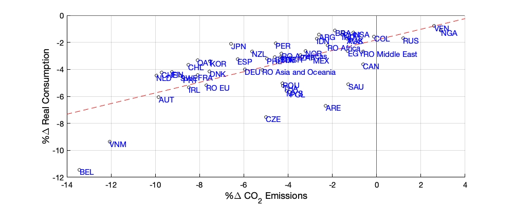
As noted earlier, this systematic relationship reflects the structural features of global trade rather than the specific institutional design of the WTO. A similar pattern emerges when we consider a shift to complete autarky: the consumption losses from autarky are strongly and positively correlated with the associated reductions in emissions (see Figure A.8 in the appendix).
Following the decomposition method of Copeland and Taylor (2004) we find that dissolving the WTO reduces global emissions primarily through scale effect s—the contraction of global output. The emission reductions achieved through the scale effects are partially offset by composition effect s: the dissolution of the WTO directs resources toward countries and industries with higher emission intensities. Meanwhile, technique effects, which capture changes in energy use intensity, are quite modest.When trade costs rise as a result of dissolving the WTO, global industrial emissions (all emissions net of household emissions) fall by 2.4%. Using Copeland and Taylor’s approach, this change decomposes into a 2.1 percentage point reduction from the scale effect, a 1.1 p.p. reduction from the technique effect, and a 0.8 p.p. increase from the composition effect. The technique effect is limited because the WTO-induced changes in trade costs of the energy sector are small, so energy intensity adjusts mainly indirectly through reduced trade in non-energy industries. When transitioning to autarky—where trade in both energy and non-energy goods shuts down—the technique effect becomes much more pronounced.
As noted in the first takeaway of Section 3.2, a key reason trade-induced consumption gains are correlated with emissions is that forces that lower the costs of producing consumer goods also reduce the costs of producing energy. To measure the importance of this channel, we recalculate the effects of WTO dissolution in a counterfactual setting where the role of intermediate inputs in energy production is artificially reduced. In particular, for each country \(i\) and input-supplying industry \(g\), we adjust the input shares in energy-producing sectors (\(k\in \mathbb {E}\)) by lowering the intermediate input share \(\alpha ^{I}_{i,gk}\) by \(x\in (0,1]\) percentage points for every \(g\), reallocating the corresponding share to labor. Appendix Figure A.10 shows that the correlation declines monotonically in \(x\). And as \(x\) approaches one—so that all intermediate input use in energy production is replaced by local labor inputs—the correlation becomes statistically insignificant.
The main takeaway from these results is that the countries that gain the most from WTO membership also account for a disproportionate share of WTO-driven carbon emissions. This finding carries two important implications. First, it speaks directly to a core question raised at the outset of the paper: trade agreements exacerbate climate externalities, and yet they are not designed to internalize these non-pecuniary externalities. Second, the strong positive relationship between consumption gains from WTO membership and associated emissions creates an opportunity for effective linkage design. Countries that stand to lose the most from the dismantling of the WTO are imposing a greater climate externality on partners. As a result, the prospect of losing market access could serve as a credible lever to curb those externalities.
6.2 Carbon Pricing Incidence: Supply-Side vs. Demand-Side Taxes
Next, we use the calibrated model to illustrate the unequal incidence of carbon pricing across countries. To this end, we simulate the real consumption effects of a global uniform carbon tax set at 100 ($/t\(\text{CO}_{2}\)). We compare two implementations of the tax: one applied on the demand side and the other on the supply side. The demand-side tax is levied on the carbon content of primary and secondary energy used by households and producers at the point of demand. In contrast, the supply-side tax targets the carbon content of primary energy at the point of extraction. Our goal is to quantitatively assess the conjecture presented in Section 3.2: that the international incidence of carbon taxation diverges under the two tax schemes.
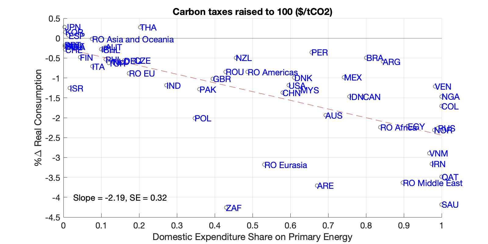
(a) Demand-side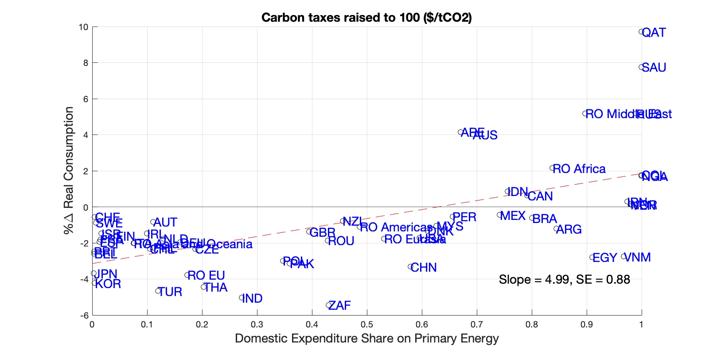
(b) Supply-sideThe results are presented in Figure 3, which plots the percentage change in real consumption across countries following the implementation of a uniform carbon tax, against each country’s domestic expenditure share on primary energy (aggregated over coal, crude oil, and natural gas). This expenditure share serves as a proxy for the size of a country’s primary energy reserves and the scale of its extraction activities. Panel (a) displays the results under the demand-side carbon tax scheme, while Panel (b) shows the outcomes under the supply-side tax. While both tax schemes can achieve the global first-best level of emissions reduction, they produce markedly different distributional effects across countries.
In Panel (a), countries like Japan and Spain, which have near-zero domestic expenditure shares (DES) in primary energy, not only avoid losses but may even gain from demand-side carbon taxes. In contrast, countries such as Saudi Arabia and Russia, with near-unity DES in primary energy, experience the largest losses. These results are reversed under supply-side carbon taxes, as shown in Panel (b). In this case, countries like Japan and Spain face the largest losses from carbon taxation, while countries such as Saudi Arabia and Russia largely benefit from supply-side carbon taxes. The correlation between changes in real consumption and DES in primary energy is strong in both cases, being negative in Panel (a) and positive in Panel (b).
The international incidence of a carbon tax can be understood through the revenue and general equilibrium effects discussed in Section 3.2. The revenue effect stems from the fact that the tax burden is spread internationally and non-localized, while the resulting revenues are rebated locally. Under a demand-side carbon tax, revenues are primarily collected by countries with high energy consumption. In contrast, under a supply-side tax, revenues accrue to major energy-producing countries. The general equilibrium effect occurs because countries spend their revenues differently, triggering different price changes throughout the global input-output network. For instance, if a country collecting carbon tax revenues allocates more of its spending toward domestically produced goods—accounting for indirect effects throughout the global production network—it can increase demand for domestic factors of production relative to foreign factors, thereby improving its terms of trade. Together, these revenue and general equilibrium effects generate significant cross-border distributional externalities, as clearly illustrated by the contrasting outcomes in Panels (a) and (b) of Figure 3.
Ultimately, while both demand-side and supply-side carbon taxes can achieve the same global emissions targets, their international incidence differs markedly. This finding addresses another core question raised at the outset of the paper: carbon pricing reforms generate winners and losers through distributive externalities, yet existing climate agreements are poorly equipped to manage these distributional consequences. Correspondingly, an effective linkage design should incorporate mechanisms to mitigate such externalities. Without such provisions, the reform would fail to constitute a Pareto improvement and would thus violate the consensus principle discussed earlier.
Revenue vs. GE effects. We next examine whether the unequal incidence of carbon taxes is driven primarily by the revenue effect, based on how tax revenues are rebated geographically, or by the general equilibrium effect, driven by changes in international prices. To this end, Appendix Figure A.11 reproduces our tax incidence figure by comparing the change in real consumption under carbon pricing, \(C_{i}=(Y_{i}+T_{i})/\tilde {P}_{i}\), with the change in real income excluding tax revenue rebates, \(Y_{i}/\tilde {P}_{i}\). The difference between these two measures isolates the contribution of general equilibrium price adjustments to tax incidence.
Two main patterns emerge. First, under demand-side taxes, the negative correlation between a country’s primary-energy expenditure share and its real-consumption gains remains largely unchanged, indicating that the revenue effect does not drive the systematic relationship shown in Panel (a) of Figure 3. Second, under supply-side taxes, the positive correlation disappears, and it becomes negative, implying that the revenue effect is the primary driver of the relationship in Panel (b) of Figure 3. This finding reflects the fact that revenues from supply-side carbon taxes are more geographically concentrated than revenues from demand-side taxes.
Implications for policy design. Figure 4 illustrates the above point by comparing carbon tax revenues as a share of GDP across countries under demand- and supply-side carbon taxation. Under demand-side taxation, revenues are distributed relatively evenly across countries because fossil fuel use is distributed much more evenly across countries than primary energy extraction. In contrast, under supply-side taxation, revenues are nearly zero in countries with minimal primary energy extraction, such as Japan, Germany, and France, but reach more than 10% of GDP in major energy-producing countries, such as Russia and Saudi Arabia. The resulting asymmetry is substantial: the cross-country variance in carbon tax revenue as a share of GDP is 11 times greater under supply-side taxation than under demand-side taxation.
This observation suggests that incorporating international transfers into climate agreements is likely to be more effective under demand-side than supply-side carbon taxation—a point we build on in our analysis of the centralized mechanism in Section 7.
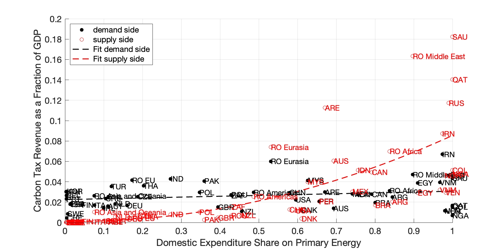
In sum, this section shows that trade and climate policy create systematic and substantial externalities for each other. Building on this finding, Section 7 proposes a mechanism to embed carbon pricing in the WTO framework. The proposal solves the optimal linkage problem (specified in Section 4) using a centralized climate fund that enables international transfers. Section 8 presents an alternative approach: a decentralized design that eliminates the need for international transfers while allowing strategic choices in demand- and supply-side carbon taxes.
7 Effectiveness of Climate Fund with Transfers
In this section, we turn to the optimal linkage problem outlined in Section 4.1. Our analysis here focuses on the integration of demand-side carbon taxes into the WTO. This choice is motivated by two considerations. First, as discussed above (Figure 4), carbon tax revenues are distributed far more evenly under demand-side taxation than supply-side taxation. This allows transfers to compensate marginal countries more effectively. To quantify this advantage, Section 7.3 (and Appendix Section E in detail) examines an otherwise similar design that taxes carbon emissions on the supply side, at the point of extraction. The results show that the demand-side design, which is presented below, is far more effective. In addition, existing climate policy frameworks (e.g., carbon taxes, emissions trading systems) are already built around demand-side pricing mechanisms, shaped in large part by the European Union’s leadership. It is therefore conceivable to scale them from the regional to the global level.
7.1 Implementation through a Global Climate Fund
Our objective is to identify the highest demand-side carbon price subject to constraints R1–R4. Specifically, to implement transfers, we propose the following “Global Climate Fund”: all participating countries commit to the same carbon price applied uniformly on the demand side; the Fund collects the border-related portion of the revenues generated by these carbon taxes and allocates them to member countries to compensate those that otherwise lose disproportionately.
Climate Fund Accounting: When a country imports fossil fuels and combusts them locally, the resulting carbon emissions are taxed under the domestic demand-side regime. The fraction of revenue linked to the imported share of that energy is transferred to the Fund.As hinted under R3, the motivation behind this design is that if the system instead relied on supply-side taxes, these revenues would be collected by the exporting country rather than the importer. These contributions are then redistributed across participants according to a formula designed to compensate countries that bear disproportionate burdens under the carbon pricing scheme. Formally, the Fund satisfies a global budget balance:
Here, \(Z_{i,k}\) is country \(i\)’s \(\text{CO}_{2}\) emissions associated with the use of primary or secondary energy \(k\in \mathbb {E}_{1}\cup \mathbb {E}_{2}\). To put the magnitudes in perspective, under a uniform carbon price of 100 ($/t\(\text{CO}_{2}\)), only 29.1% of global carbon tax revenues are border-related and allotted to the Fund. Across countries, the share of contributions from total carbon tax receipts ranges from 2.5% to 71.5% (see Figure A.12 in the appendix).Even in countries that import all of their primary energy, the resulting contribution still amounts to well under 100% of carbon tax revenues. This is because a substantial portion of energy demand is met through secondary energy uses, such as electricity, which is produced domestically in power plants that burn coal or natural gas, rather than imported across international borders.
To determine the allocation of transfers, we must first specify the observable statistics, \(x\), on which the allocation is conditioned. While \(x\) could, in principle, include multiple variables, we construct the transfers based on one variable at a time, illustrating that even a simple allocation rule can achieve meaningful redistribution. The chosen statistic must provide sufficient flexibility to direct transfers toward marginal participants. Specifically:
- (i)
countries that gain less from trade agreements;
- (ii)
countries that suffer more from demand-side carbon pricing.
To effectuate \((i)\), we take note from Arkolakis et al. (2012) who show that the gains from trade relative to autarky are determined by domestic expenditure shares (\(\lambda _{ii}\)). While this measure is not a perfect proxy for the gains from trade agreements, it provides a useful approximation. Based on this insight, our first allocation rule distributes the Fund’s resources in proportion to each country’s aggregate domestic expenditure share: \(x=\{\lambda _{ii}\}_{i}\).
To effectuate \((ii)\), we note that net energy exporters tend to incur larger welfare losses under demand-side carbon pricing. To compensate these countries, the allocation formula could distribute funds in proportion to the domestic expenditure share in the energy sector, i.e., \(x_{i}=\sum _{\mathbb {E}_{1}\cup \mathbb {E}_{2}}\lambda _{ii,k}e_{i,k}\). Energy-exporting countries receive a larger share under this allocation. We also explore a few variants of this rule: We explore an alternative where transfers are based purely on the primary energy domestic expenditures share. We also consider another specification where allocations are determined by each country’s share from global energy exports.
To improve the Fund’s effectiveness, we incorporate two additional features. First, we define the carbon price as the sum of the explicit carbon price and the implicit price arising from fossil fuel taxes. These implicit prices tend to be higher in countries that both benefit more from trade agreements and place greater weight on climate policy (e.g., the European Union), which further enhances the Fund’s effectiveness. Second, we set contributions from low-income countries to zero, following the World Bank income classification.This includes Egypt, Indonesia, India, Nigeria, Pakistan, the Philippines, Vietnam, and the rest of Africa, and it perfectly maps to the ranking of country-level income distribution in our data. This also improves outcomes at the margin, since some of the low-income countries—most notably India—benefit less from trade agreements while being particularly exposed to energy price increases due to their high expenditure share on energy.
Results. We solve the constrained-optimal linkage problem in Section 4 by finding the maximum carbon price subject to constraints R1-R4, which determines transfers for each choice of \(x\) as discussed above.We consider carbon pricing only for WTO members, which excludes just Iran and RO Eurasia (a group of countries that were part of the former Soviet Union). Table 5 presents the results. To showcase the role of transfers, we first report the maximum feasible carbon price in the absence of transfers. The maximum tax equals $63/t\(\text{CO}_{2}\) in this scenario, leading to a 39.0% reduction in global emissions. Moreover, Venezuela is the marginal country that becomes indifferent between staying in and defecting from the agreement, followed by Nigeria (NGA) and Russia (RUS), all of which are large energy-exporting countries. Figure A.13 shows the change in the value of each government’s objective function relative to the disagreement point.
| Max Carbon | Reduction in | Marginal | |
| Price ($/tCO2) | Global Emission | Countries | |
| No Side Payments | 63 | -39.0% | VEN, NGA, RUS |
Side Payments: Allocations from the Fund | |||
| (a) Prop to dom. exp. share in all goods | 111 | -49.5% | RO Middle East, RUS, USA |
| (b) Prop to dom. exp. share in manufacturing | 97 | -47.1% | RO Middle East, RUS, USA |
| (c) Prop to dom. exp. share in all energy | 123 | -51.4% | RUS, RO Middle East, USA |
| (d) Prop to dom. exp. share in primary energy | 138 | -53.6% | RUS, IND, USA |
| (e) Share of global primary energy exports | 117 | -50.6% | IND, USA, BRA |
Activating transfers via the Fund improves outcomes depending on the allocation rule. Allocating funds proportional to the domestic expenditure share on all goods, \(x_{i}=\lambda _{ii}\), raises the maximum carbon price to $111, with a 49.5% reduction in emissions. The maximum feasible carbon price rises further when allocations use energy-related statistics, with the strongest results obtained when allocations are proportional to the domestic expenditure share in primary energy. Under this allocation rule, the maximum carbon price reaches $138, and global emissions fall by 53.6%.
We next consider an alternative specification in which only explicit carbon prices count toward the Fund, excluding the implicit prices that arise from fossil fuel taxes. This lowers contributions, especially among European Union countries that apply large fossil fuel taxes. The Fund therefore shrinks at any explicit carbon price, and the maximum achievable price falls under every allocation rule, as reported in Appendix Table A.4. The ranking across rules, however, is unaffected: allocating in proportion to the domestic expenditure share in primary energy continues to perform best, yielding a maximum carbon price of $119 and a 50.9% reduction in global emissions.
7.2 The Role of Restrictions R1-R4
We now examine how the institutional constraints R1–R4 limit the effectiveness of integrating carbon pricing into the WTO framework. We relax each constraint in turn, proceeding in reverse order from R4 to R1, while holding the remaining constraints fixed. Lastly, we discuss the efficacy of a climate fund that works based on supply-side carbon pricing.
R4: Minimal information requirement.\(\quad\) Relaxing R4 permits more flexible transfer rules, including arrangements that resemble negotiated side payments across countries. To illustrate one such case, we consider a two-tier iterative procedure for determining relaxed transfers.
In the lower tier, we hold the carbon price fixed and start from an initial transfer allocation. We identify countries that gain and countries that lose, and compute their welfare changes using equivalent variation. When the winners’ aggregate gains exceed the losers’ aggregate losses, we increase transfers from winners to losers by the minimum amount required to leave losers no worse off, with contributions from winners proportional to their gains. We then re-solve the general equilibrium and repeat the procedure until either all countries are weakly better off or winners’ aggregate gains are insufficient to compensate losers.We recompute the equilibrium after each transfer update because transfers affect outcomes through income effects. If preferences were quasi-linear and the linear sector were large and freely traded, income effects would be absent, and recomputing the general equilibrium after each transfer adjustment would be unnecessary. If the lower-tier yields a transfer scheme where all countries are weakly better off, we move to the upper tier, in which we raise the carbon price and repeat the procedure. This way, we determine the maximum carbon price that can be supported while ensuring that no country is made worse off.
Using this approach, we obtain a maximum carbon price of $265 per t\(\text{CO}_{2}\), well above the $138 achieved under the Global Climate Fund allocation examined earlier. This price also falls within the upper range of recent social cost of carbon estimates, e.g., $292 from Ricke et al. (2018). We interpret this result as an upper bound on the extent to which transfers can support ambitious international climate cooperation. Achieving this upper bound, however, is information-intensive, as it requires detailed knowledge of which countries should receive compensation and in what amounts. These informational constraints imply that, in practice, less than half of the potential benefits of transfers can be exploited.
R3: Fiscal constraint.\(\quad\) Next, we relax R3 by allowing transfers to be financed out of total carbon tax revenues rather than only the border-related portion. Two results follow. First, somewhat unexpectedly, by relaxing R3 the allocation rules we have examined underperform relative to the no-transfer scenario (Appendix Table A.6). The reason is that the marginal energy-producing countries are now required to contribute substantially more to the climate fund, while their allocation does not rise in proportion under the examined allocation rules. Second, and expectedly, flexible transfers that are not tied to any specific ex ante allocation rule perform better when the fiscal base is expanded. Using an iterative procedure similar to the one described above, we find that the upper bound on the carbon price increases from $265 in the main specification to $360. However, realizing this added potential requires different allocation rules than we have considered to favor energy-producing countries even more than those previously examined.
In sum, the border-related portion of carbon taxes generates sufficient revenue to compensate those adversely affected and, somewhat counterintuitively, it enables a more targeted balancing of the tax burden under the simple allocation rules we have examined.
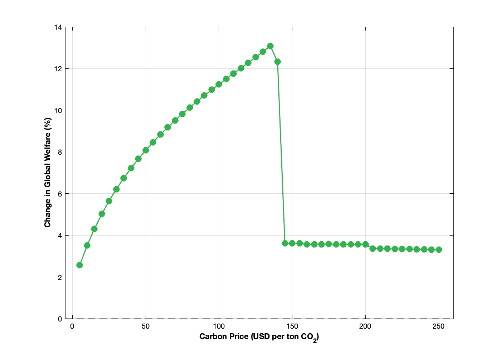
(a) Global Welfare \(\quad\)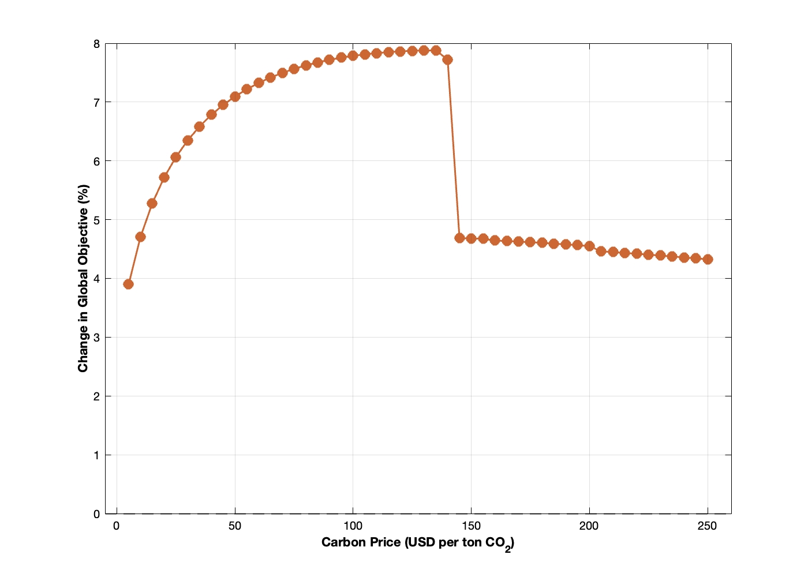
(b) Global Aggregate of Governments’ Objectives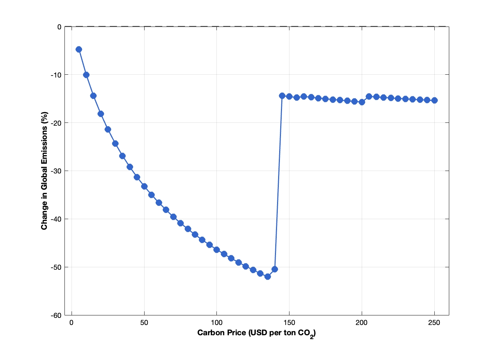
(c) Global Emissions \(\quad\)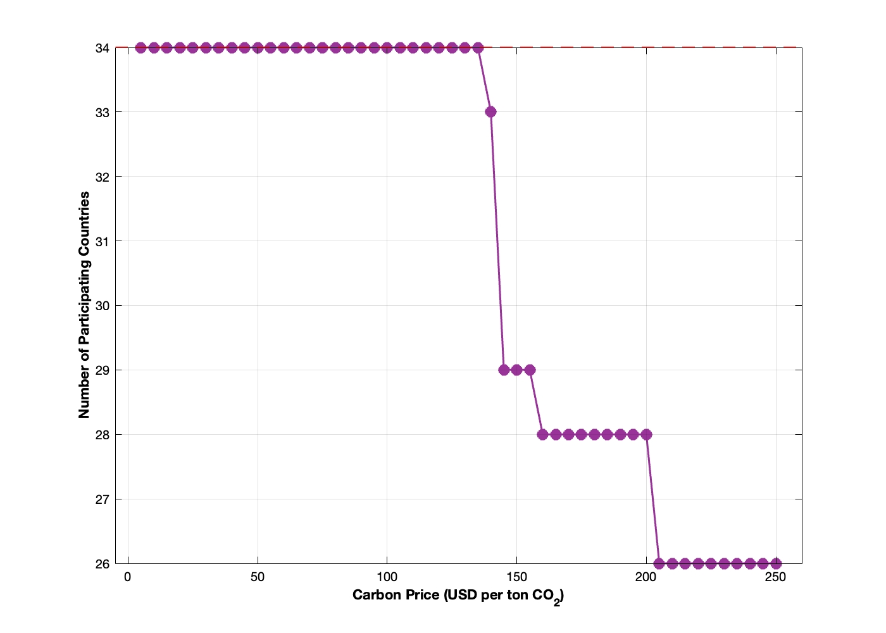
(d) Number of Countries in the CoalitionR2: Consensus principle.\(\quad\) R2 asserts that the annexed agreement must include all existing WTO members. Relaxing this restriction opens the door to supporting a more ambitious carbon price target, at the cost of excluding some members.This analysis relates to Bourany (2025), who defines the optimal coalition as the one maximizing the joint welfare of its members. In that paper, the optimal agreement does not coincide with maximal participation, and thereby violates R2. Here we examine whether R2 binds the carbon price cap. To this end, we compute outcomes across the full range of carbon prices and report the implied changes in global emissions, global welfare, a global aggregate of governments’ objectives, and coalition size. Figure 5 plots these metrics as functions of the carbon price, assuming transfers are allocated to participating countries in proportion to each country’s domestic expenditure share on primary energy.We compute the equilibrium outcome at each carbon price using this iterative procedure: In the first round, we begin with full participation and evaluate each country’s decision to remain in the agreement, taking as given that other countries remain in the agreement. Countries that withdraw in a given round are assumed to remain out in all subsequent rounds. We then repeat the process with the remaining participants until the outcome converges.
Notably, the highest carbon price that satisfies the Consensus principle (R2) also maximizes global welfare and the global aggregate of governments’ objectives, while also minimizing global emissions.Outcomes exhibit a jump at a carbon price increase from $140 to $145. This arises because, in addition to Russia, which already exits at $140, and India, which exits at $145, the United States also exits the agreement at $145, which in turn triggers the withdrawal of China and Japan. This indicates that, at least under the allocation rule that performs best in our analysis, minimizing emissions subject to consensus implies optimality under other commonly-used objectives, such as maximizing global welfare or minimizing global emissions.
Another aspect of R2 is the misalignment between governments’ objectives and social welfare. We relax this misalignment by considering an objective function that accords with country-specific estimates for climate damage. Specifically, we model the damage function for country \(i\) following Shapiro (2021) as
Here, \(Z^{(global)}_{0}\) and \(Z^{(global)}\) denote global emissions in the baseline equilibrium and the counterfactual equilibrium with carbon pricing linkage. The parameter \(\mu _{i}\) denotes country \(i\)’s disutility from increases in global emissions, calibrated using country-level social costs of \(\text{CO}_{2}\) from Ricke et al. (2018). Appendix A.4.4 provides the details of our calibration.
The results under this alternative objective function depend critically on whether the country-level social costs of carbon is allowed to be negative. When negative values are permitted, Russia is consistently the marginal country at low carbon prices. This occurs because Russia’s gains from trade agreements are relatively small and Russia largely benefits from climate change. In this case, the most effective allocation rule is the one that provides greater compensation to Russia—namely, transfers based on each country’s share of global primary energy exports.
We also consider an alternative in which we re-calibrate country-level social costs of carbon by setting negative values to zero, while keeping the global social cost of carbon unchanged. Under this re-calibration, the maximum carbon price compatible with sustaining the coalition increases sharply, exceeding $200 under the allocation rule based on primary energy export shares. Appendix Table A.7 reports the results.
R1: Single undertaking principle.\(\quad\) Finally, we relax R1, which sets the disagreement point to multilateral withdrawal from the WTO. As an alternative, we first consider unilateral deviations: each country evaluates whether to exit the agreement taking as given that all other members remain. We test for such deviations at every annexed carbon price. If no country has an incentive to exit, the outcome constitutes a Nash equilibrium in which all WTO members adopt the harmonized carbon price.
Appendix Table A.8 reports the maximum carbon price attainable under the unilateral-deviation criterion. Without side payments, limiting deviations to a single country raises the maximum attainable price to $91 (from $63 under multilateral deviations). With Climate Fund side payments, the highest attainable price results from an allocation rule that transfers funds to countries based on their domestic expenditure share in manufacturing, supporting a maximum price of $144.
Energy price changes explain why the same allocation rule performs differently under unilateral versus multilateral deviations. When a single energy exporter defects, the effect on world energy prices is negligible, so the cost of deviation is relatively low for the defecting country. Collective withdrawal, by contrast, depresses global energy demand and drives energy prices down sharply, making defection far more costly for energy exporters. Consequently, under unilateral deviations, India (a net energy importer) emerges as the marginal country, ahead of energy exporters such as Venezuela.
Unilateral deviations, however, are only one alternative to the multilateral-withdrawal disagreement point, and arguably not the most plausible one. In practice, coalitions of countries may have an incentive to deviate jointly. A full analysis of coalition-proof equilibria is not feasible in our setting, since with \(N=34\) countries there are about 17 billion (\(2^{34}\)) possible subsets of countries. To gauge the implications of coalition-level deviations, we consider a particular deviation set, in which in addition to unilateral deviations, we also include \(J=100\) randomly drawn coalitions of sizes larger than one. As shown in Table A.9, the results shift back toward those under our main specification, where allocation rules based on energy-related variables tend to perform better. Here, the most successful allocation rule is the one in proportion to each country’s share of domestic expenditure on all energy, which raises the maximum sustainable carbon price to $125 from $65 in the no-transfer scenario.
7.3 Additional Remarks
A climate fund based on supply-side carbon pricing. As detailed in Appendix Section E, a climate fund that operates based on supply-side carbon taxes proves to be ineffective. Without transfers, the highest feasible carbon price is $27, with India as the marginal country, followed by Brazil and Pakistan. Introducing transfers under a wide range of allocation rules fails to raise this maximum; instead, Saudi Arabia typically becomes the marginal country at very low carbon prices, followed by Russia. The poor performance reflects the concentration of extraction-tax revenues among major energy exporters. While this concentration creates uneven distributional effects without transfers, funding transfers from exporters’ tax revenues disproportionately burdens these countries. Consequently, the transfer system shifts the imbalance rather than correcting it, making supply-side taxation less effective for sustaining higher internationally coordinated carbon prices.
Sensitivity Analysis. We examine the robustness of our results by considering a few alternative specifications. First, we experiment with alternative values for energy demand and supply elasticity parameters. Our baseline Cobb-Douglas specification implies that the energy demand elasticity equals one. Here, we let the production and consumption aggregators take a CES form between an energy bundle and a non-energy bundle, while maintaining a Cobb-Douglas structure within each bundle. We set the substitution elasticity between the energy and non-energy bundles to 0.59, based on the average long-run energy demand elasticity estimates reported in the meta-analysis by Labandeira et al. (2017). In addition, we recalibrate the supply elasticity by setting \(\alpha ^{R}_{i,k}\) for primary energy industries \(k\in \mathbb {E}_{1}\) to 0.4 (and proportionally shifting the cost share of labor and intermediate inputs). This reduces the supply elasticity of primary energy to 1.5, consistent with Kotchen (2021). Table A.10 in the appendix shows that the results remain broadly similar to those in our main specification. Under the no-transfer scenario, the maximum carbon price is $73 (33.7% emissions reduction) while it rises to $144 when fund allocations are based on countries’ domestic expenditure shares in primary energy (45.0% emissions reduction).
We also consider an alternative specification in which non-cooperative outcomes arise not from higher iceberg trade barriers, but from governments raising revenue-generating import tariffs. We simply set these tariffs to 25%, which approximates non-cooperative tariff rates under a small open economy assumption and a trade elasticity of 4, close to our point estimate for manufacturing. Table A.11 reports the results. Without side payments, the maximum carbon price is $66, reducing global emissions by 39.9%. Introducing transfers through the Global Climate Fund raises the maximum carbon price up to around $113 across the allocation rules, reducing global emissions by around 50%.
8 Effectiveness of Decentralized Linkage without Transfers
While a centralized Climate Fund can produce promising results, the international transfers underlying it can be politically challenging. We therefore explore an alternative transfer-free approach, following the decentralized design outlined in Section 4.2. Under this framework, each country must meet a revenue floor possibly with a carbon price floor, but can freely choose its mix of demand-side and supply-side carbon taxes to honor the obligations.
We explore two obligation themes: (i) “Revenue Floor” and (ii) “Price plus Revenue Floor”. We consider three variants of the Revenue Floor obligation. All of them calculate the floor using a demand-side reference carbon price, but differ in their treatment of the tax base. The first variant, “post-policy emission base,” calculates the revenue floor using the equilibrium tax base that materializes after policy. The other two variants use a fraction of the status-quo emission base, which can be calculated directly from data without solving for the counterfactual equilibrium. We experiment with 50 percent and 33 percent fractions. These are needed because emissions fall with carbon pricing, so revenues evaluated based on the status-quo base overstate the equilibrium revenues raised by the same tax.Two comments are in order. First, in our simulations of the post-policy designs, the revenues that countries raise in equilibrium under a demand-side carbon price of $100 per ton amount to an aggregate of 49.9 percent of the revenues implied by applying the same global carbon price to status-quo emissions, motivating the value of 50%. This ratio, however, varies across countries; it is the lowest for coal-dependent economies, whose tax base erodes the most because a common (additive) carbon price corresponds to a larger ad valorem tax on coal than on natural gas and crude oil. Hence, we also experiment with 33 percent as a lower fraction. Second, for the revenue requirements based on status-quo emissions, we also cap each country’s floor at 4 percent of its GDP. The cap reflects the revenue capacity documented in Figure 4, where a uniform demand-side carbon tax raises no more than about 4 percent of GDP in nearly every country. In practice, a floor above this level may become infeasible for a few countries, most notably South Africa, whose emissions are dominated by coal use. The “Price plus Revenue Floor”, obligation retains the revenue floor but also imposes that the sum of a country’s demand- and supply-side carbon tax rates not fall below the reference carbon price, \(\tilde {\tau }^{(Q)}_{i}+\tilde {\tau }^{(C)}_{i}\geq \tilde {\tau }\).We do not consider a supply-based revenue floor because it would impose minimal restrictions on countries with little or no domestic primary energy extraction, including some European countries, Japan, and South Korea. We also do not consider a price-only floor because a country with almost no domestic primary energy extraction, such as Japan, could honor the floor through a virtually inconsequential supply-side tax. Together, the three emission base specifications and the two obligation rules yield the six designs reported in Table 6. In all cases, each country’s optimal tax mix is the best response to the choices of all other countries, resulting in a Nash equilibrium.
For each configuration, we search for the maximum reference carbon price that supports a Pareto improvement over the disagreement point. We solve this problem numerically using a two-tier iterative algorithm. The inner tier assigns an initial guess to countries’ demand- and supply-side carbon tax rates. It then solves each country’s optimal unilateral tax mix subject to the floor requirements and other countries’ choices. This process is performed iteratively until convergence to a fixed point. The outer tier searches for the maximum reference price through bisection: it starts with a wide bracket whose lower end yields a Pareto improvement but upper end does not. It then calculates the midpoint, updates the bracket, and continues until the bracket narrows to less than one dollar per ton of \(\text{CO}_{2}\).
The baseline scheme, which is the Revenue Floor obligation calculated at the post-policy emission base, yields a maximum reference carbon price of $86 per ton of \(\text{CO}_{2}\), reducing global emissions by 44% relative to the status quo. This price is higher than those achievable in the no-transfer scenarios with only demand-side taxes ($63 per ton) or only supply-side taxes ($27 per ton), but is below the maximum price attainable under the centralized fund ($97–$138). The price of $86, however, is closer to a centralized fund that incorporates only explicit carbon prices ($82-$119, as reported in Table A.4). In this case, the marginal countries are India, followed by Indonesia and Pakistan.
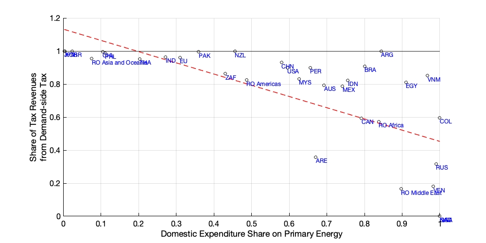
Figure 6 shows countries’ choices in the resulting Nash equilibrium at a reference carbon price of $86. It reports the share of each country’s carbon-tax revenue generated from demand-side taxes. A share of one indicates that a country relies exclusively on demand-side carbon taxes to meet the revenue floor, whereas a share of zero indicates that it relies exclusively on supply-side carbon taxes. The figure reveals a clear pattern: energy-importing regions, such as Europe, Japan, and South Korea, strategically choose demand-side carbon taxes, whereas energy-exporting countries, such as Saudi Arabia, Venezuela, and Nigeria, choose supply-side taxes. A similar pattern emerges under other design configurations. This pattern echoes our theoretical prediction that demand-side taxes transfer income from energy exporters to importers, while supply-side taxes have the opposite effect. By allowing countries to choose their tax mix strategically, the distributive effects of carbon taxes from both groups offset one another, thereby leveling the tax burden across countries.
| Maximum | Reduction | ||
| Design | Reference Carbon | in Global | Marginal |
| Price ($/tCO2) | Emissions | Countries | |
Revenue Floor | |||
| Post-policy emission base | 86 | -43.9% | IND, IDN, PAK |
| Status-quo emission base, 50% | 73 | -41.5% | IND, CHN, VEN |
| Status-quo emission base, 33% | 109 | -41.4% | IND, CHN, VEN |
Price plus Revenue Floor | |||
| Post-policy emission base | 92 | -46.9% | VEN, IND, IDN |
| Status-quo emission base, 50% | 73 | -44.6% | IND, VEN, CHN |
| Status-quo emission base, 33% | 96 | -46.0% | IND, VEN, NGA |
Table 6 reports the outcomes for all six design configurations. Adding the price floor improves outcomes in each case. In the baseline case where the revenue floor is calculated using the post-policy emission base, the maximum reference price rises from $86 to $92, yielding a greater emissions reduction of 47 percent compared with 44 percent. Intuitively, without a price floor, energy exporters satisfy the revenue floor with a relatively low supply-side carbon tax, owing to their large extraction base. The price floor forces these countries to raise their demand-side tax so the combined tax rate reaches the reference price. As a result, global emissions fall more, but also the maximum attainable reference price goes up. The latter has a simple intuition: Higher demand-side taxes by energy exporters exert downward pressure on world energy prices, which benefits the marginal countries importing energy.See Panel (a) of Figure A.11 for a visual illustration of the incidence argument. India, for instance, is a marginal country in nearly all cases. Its extraction base is small relative to major energy producers, so it relies almost exclusively on demand-side taxes to meet the revenue floor. A price floor imposes no additional constraint on India. However, it benefits India through cheaper energy imports.
9 Conclusions
International trade and climate agreements have traditionally evolved along separate paths. This has triggered some difficult questions about the viability of existing trade agreements. On the one hand, trade agreements can increase emissions, generating climate externalities. On the other hand, climate policies such as carbon pricing can create distributive externalities that disrupt the delicate balance of trade concessions within existing agreements.
This paper confronts this outstanding tension by quantifying the cross-externalities between trade and climate policy. We use a quantitative trade model with a detailed representation of fossil fuel supply chains to uncover two basic facts. First, countries that benefit most from trade agreements tend to generate higher emissions from trade. Second, the distributional effects of carbon pricing are sizable and extremely sensitive to whether the policy is implemented via demand-side or supply-side taxes. The first finding suggests that linking market access to carbon pricing through contingent trade reforms could be an effective path to emission reduction. The second finding suggests that carbon pricing would disrupt the balance of trade agreements, and a redistribution mechanism is needed to retain the balance.
Against this backdrop, we formulate and solve a constrained-optimal linkage problem, using the WTO as a case study. Feasible outcomes are constrained by WTO principles and political feasibility constraints. We consider two designs. The first is a centralized Climate Fund in which all members adopt a common demand-side carbon price and submit the border-related portion of the revenue to the Fund, which then finances inter-country transfers to mitigate distributional effects. Our quantitative analysis demonstrates that even simple allocation rules can greatly enhance the effectiveness of linkage. The second design is decentralized and requires no transfers. Each member must meet a carbon tax revenue floor determined by a reference carbon price, but can freely choose its mix of demand-side and supply-side carbon taxes. Because the two instruments have nearly opposite distributive effects, the decentralized choices organically level the carbon tax burden across countries, enabling ambitious carbon price targets without explicit redistribution.
References
Angel Aguiar, Maksym Chepeliev, Erwin L Corong, Robert McDougall, and Dominique Van Der Mensbrugghe. The GTAP data base: Version 10. Journal of Global Economic Analysis, 4 (1):1–27, 2019.
Werner Antweiler, Brian R Copeland, and M Scott Taylor. Is free trade good for the environment? American Economic Review, 91(4):877–908, 2001.
Costas Arkolakis, Arnaud Costinot, and Andrés Rodríguez-Clare. New trade models, same old gains? American Economic Review, 102(1):94–130, 2012.
Geir B Asheim, Taran Fæhn, Karine Nyborg, Mads Greaker, Cathrine Hagem, Bård Harstad, Michael O Hoel, Diderik Lund, and Knut Einar Rosendahl. The case for a supply-side climate treaty. Science, 365(6451):325–327, 2019.
John Asker, Allan Collard-Wexler, Charlotte De Canniere, Jan De Loecker, and Christopher R Knittel. Two wrongs can sometimes make a right: The environmental benefits of market power in oil. Technical report, National Bureau of Economic Research, 2024.
Andrew Baker, Brantly Callaway, Scott Cunningham, Andrew Goodman-Bacon, and Pedro HC Sant’Anna. Difference-in-differences designs: A practitioner’s guide. arXiv preprint arXiv:2503.13323, 2025.
Scott Barrett. The strategy of trade sanctions in international environmental agreements. Resource and Energy Economics, 19(4):345–361, 1997.
Christoph E Boehm, Andrei A Levchenko, and Nitya Pandalai-Nayar. The long and short (run) of trade elasticities. American Economic Review, 113(4):861–905, 2023.
Ingo Borchert, Mario Larch, Serge Shikher, and Yoto V Yotov. The international trade and production Database for Estimation-Release 2. USITC Working Paper 2022–07–A, 2022.
Kirill Borusyak, Xavier Jaravel, and Jann Spiess. Revisiting event-study designs: Robust and efficient estimation. Review of Economic Studies, 91(6):3253–3285, 2024.
Thomas Bourany. The optimal design of climate agreements. Working Paper, 2025.
Thomas Bourany and Jordan Rosenthal-Kay. The winners and losers of climate policies: A sufficient statistics approach. The Economic Journal, page ueag028, 2026.
Renaud Bourlès, Jérémy Laurent-Lucchetti, and Jean-Charles Rochet. Should we stop the cops? TSE Working Paper, 2026.
Lorenzo Caliendo, Marcelo Dolabella, Mauricio Moreira, Matthew Murillo, and Fernando Parro. Voluntary emission restraints in developing economies: The role of trade policy. Technical report, National Bureau of Economic Research, 2024.
Bruno Conte, Klaus Desmet, and Esteban Rossi-Hansberg. On the Geographic Implications of Carbon Taxes. The Economic Journal, 2025.
Brian R Copeland and M Scott Taylor. Trade, growth, and the environment. Journal of Economic Literature, 42(1):7–71, 2004.
Brian R. Copeland, Joseph S. Shapiro, and M. Scott Taylor. Globalization and the environment. In Gita Gopinath, Elhanan Helpman, and Kenneth Rogoff, editors, Handbook of International Economics, volume 5, pages 61–146. Elsevier, 2022.
Anca Cristea, David Hummels, Laura Puzzello, and Misak Avetisyan. Trade and the greenhouse gas emissions from international freight transport. Journal of Environmental Economics and Management, 65(1):153–173, 2013.
José-Luis Cruz and Esteban Rossi-Hansberg. The economic geography of global warming. Review of Economic Studies, 91(2):899–939, 2024.
Judith M. Dean. Trade and the environment: A survey of the literature. In Patrick Low, editor, International Trade and the Environment, number 159 in World Bank Discussion Papers, pages 15–28. The World Bank, Washington, DC, 1992.
Klaus Desmet and Esteban Rossi-Hansberg. Climate change economics over time and space. Annual Review of Economics, 16(1):271–304, 2024.
Josh Ederington. Should trade agreements include environmental policy? Review of Environmental Economics and Policy, 4(1):84–102, 2010.
Farid Farrokhi. Global sourcing in oil markets. Journal of International Economics, 125:103323, 2020.
Farid Farrokhi and Ahmad Lashkaripour. Can trade policy mitigate climate change? Econometrica, 93(5):1561–1599, 2025.
Farid Farrokhi, Elliot Kang, Heitor S Pellegrina, and Sebastian Sotelo. Deforestation: A global and dynamic perspective. Working Paper, 2023.
Farid Farrokhi, Samuel Kortum, and Ishan Nath. Chapter 2 - climate change, climate policy, and trade. In Lint Barrage and Solomon Hsiang, editors, Handbook of the Economics of Climate Change Volume 2, volume 2 of Handbook of the Economics of Climate Change, pages 85–170. North-Holland, 2026.
Billy Ferguson, Robert W Staiger, and Ali Yurukoglu. Carbon taxes, carbon border adjustments and the world trade organization. Working Paper, 2025.
Lionel Fontagné, Houssein Guimbard, and Gianluca Orefice. Tariff-based product-level trade elasticities. Journal of International Economics, 137:103593, 2022.
Ezequiel Garcia-Lembergman, Natalia Ramondo, Andres Rodriguez-Clare, and Joseph S. Shapiro. Carbon emissions in the global economy. Working Paper, 2025.
Tamara Gurevich and Peter Herman. The dynamic gravity dataset: 1948–2016. USITC Working Paper, 2018–02–A, 2018.
Bård Harstad. Trade and trees. American Economic Review: Insights, 6(2):155–175, 2024.
Terrence Iverson. Tiered climate clubs: Global abatement without global agreement. Available at SSRN 4849108, 2024.
Elliot Kang. Global fisheries: Quantifying the externalities from open access. Working Paper, 2025.
Samuel S Kortum and David A Weisbach. Optimal unilateral carbon policy. Working Paper, 2024.
Matthew J Kotchen. The producer benefits of implicit fossil fuel subsidies in the united states. Proceedings of the National Academy of Sciences, 118(14):e2011969118, 2021.
Xavier Labandeira, José M Labeaga, and Xiral López-Otero. A meta-analysis on the price elasticity of energy demand. Energy Policy, 102:549–568, 2017.
Mario Larch and Joschka Wanner. Carbon tariffs: An analysis of the trade, welfare, and emission effects. Journal of International Economics, 109:195–213, 2017.
Giovanni Maggi. Issue linkage. In Handbook of commercial policy, volume 1, pages 513–564. Elsevier, 2016.
James R Markusen. International externalities and optimal tax structures. Journal of International Economics, 5(1):15–29, 1975.
Arne J Nagengast and Yoto V Yotov. Staggered difference-in-differences in gravity settings: Revisiting the effects of trade agreements. American Economic Journal: Applied Economics, 17 (1):271–296, 2025.
William Nordhaus. Climate clubs: Overcoming free-riding in international climate policy. American Economic Review, 105(4):1339–1370, 2015.
Katharine Ricke, Laurent Drouet, Ken Caldeira, and Massimo Tavoni. Country-level social cost of carbon. Nature Climate Change, 8(10):895–900, 2018.
Marcos Ritel, Dora Simon, Simon Lepot, and Mathilde Le Moigne. The distributional effects of carbon pricing across countries. Available at SSRN 5054834, 2024.
Joseph S Shapiro. Trade costs, CO\(_2\), and the environment. American Economic Journal: Economic Policy, 8(4):220–254, 2016.
Joseph S Shapiro. The environmental bias of trade policy. The Quarterly Journal of Economics, 136(2):831–886, 2021.
Joseph S Shapiro and Reed Walker. Why is pollution from us manufacturing declining? the roles of environmental regulation, productivity, and trade. American Economic Review, 108(12): 3814–3854, 2018.
Feodora Teti. Missing tariffs. CESifo Working Paper No. 11590, 2024.
Jeffrey M Wooldridge. Two-way fixed effects, the two-way mundlak regression, and difference-in-differences estimators. Empirical Economics, 69(5):2545–2587, 2025.
World Trade Organization. The carbon content of international trade. Trade and Climate Change Information Brief No. 4, World Trade Organization, 2021.
Appendix
A Data and Calibration
A.1 Trade Elasticities
This appendix describes the data construction and estimation method used to recover trade elasticities. The empirical strategy builds on the local-projection IV framework in Boehm et al. (2023), but the application differs in data source and aggregation level. Our trade flows come from the International Trade and Production Database for Estimation(ITPD-E), Release 2, distributed through the U.S. International Trade Commission Gravity Portal ( https://www.usitc.gov/data/gravity/index.htm). Tariffs come from Teti’s (2024) Global Tariff Database, version v_beta1-2024-12 (ISIC Rev. 3.3 bilateral panel, 1988–2021). In this version, weighted tariff variables are BACI-weighted, as stated in the variable definitions. The unit of observation in the raw trade files is exporter–importer–industry–year. We first map detailed industries into ISIC Rev. 3.3 sector groupings used by the tariff panel and aggregate trade to exporter–importer–sector–year cells. We then merge the bilateral trade panel with the bilateral tariff panel and keep matched observations. The estimating sample is organized into three broad sector blocks. The first block combines agriculture and mining sectors. The second block combines manufacturing sectors. The third block combines energy sectors. Each block is estimated separately to obtain the sector-level trade elasticity.
Let \(i\) denote importer, \(j\) exporter, \(s\) sector, and \(t\) year. We define the log trade and tariff factor as
where \(\text{trade}_{ijst}\) is trade values in thousands of dollars and \(\text{tariff}_{ijst}\) is the tariff rate, e.g., a 20 percent tariff is \(\text{tariff}=0.2\). We construct horizon-\(h\) long differences for \(h\in \{0,5,10\}\) as
As in Boehm et al. (2023), the long-difference variables are winsorized at the first and ninety-ninth percentiles. Identification follows the MFN-based logic in Boehm et al. (2023), adapted to sector-level data. We define an indicator for MFN binding,
and construct a minor-partner indicators from importer-year bilateral trade ranks. For each importer-year, partners are ranked by bilateral trade in the assembled sample. A partner is coded as minor when its rank is above the tenth percentile threshold among positive-trade partners. Minor-partner indicator are set to one for missing values.
The estimating equation in levels is
with three sets of fixed effects: (1) importer\(\times\) sector\(\times\) year, (2) exporter\(\times\) sector\(\times\) year, and (3) importer\(\times\) exporter\(\times\) sector fixed effects. The local-projection IV equation at horizon \(h\in \{0,5,10\}\) is
where \(\Delta _{h}\ln \tau _{ijst}\) is instrumented with
The reported elasticity is \(\varepsilon _{h}=-\beta _{h}\), interpreted as \((\sigma -1)\) in the output table. Relative to Boehm et al. (2023), the key differences are as follows. We use the tariff panel from Teti (2024) rather than TRAINS, we estimate the trade elasticity using trade flow data aggregated at the sector level rather than the HS4 product-country level, and we implement horizons of 0, 5, and 10 years in this specification.
A.2 Staggered Difference-in-Differences Estimation of WTO Effects
This appendix reports additional results for our staggered difference-in-differences estimates of the effect of joint GATT/WTO membership on bilateral trade. We present event-study estimates, examine pre-trends, vary the assumed treatment date, and consider four robustness checks.
Data and empirical design. We combine sector-level trade data from the International Trade and Production Database (Borchert et al., 2022) with GATT/WTO membership, regional trade agreements, and gravity variables from the Dynamic Gravity Dataset (Gurevich and Herman, 2018). The panel covers up to 150 countries from 1980 to 2019. We aggregate detailed industries into agriculture and mining, manufacturing, and energy. As in equation (26), the outcome is bilateral market access measured in trade flows. Our baseline analysis sets \(y=\ln (1+X)\), where \(X\) is trade values in thousands of U.S. dollars. We experiment with additional specifications like the asinh of trade flows and estimators like PPML that naturally accommodate zero flows. Let \(G_{ij}\) denote the first year in which a pair \((i,j)\) of countries are simultaneously GATT/WTO members. We measure event time relative to \(G_{ij}\) and allow treatment to begin at event \(\tilde {t}\in \{0,-1,-2,-3,-4\}\) relative to joint membership. Domestic flows are coded as never treated. The comparison group consists of never-treated and not-yet-treated country pairs. We exclude pairs whose joint membership status reverses in the course of our sample. To harmonize the samples across treatment dates, we retain treated pairs observed before \(G_{ij}-4\), meaning that all five treatment date specifications \(\tilde {t}\) use the same observations. The sample contains 310,313 observations corresponding to 10,335 country pairs in agriculture and mining (1986–2019), 331,646 observations corresponding to 11,524 pairs in manufacturing (1988–2019), and 189,342 observations corresponding to 6,822 pairs in energy (1988–2019). A causal interpretation of the results that follow requires two assumptions: no anticipation before the assumed treatment date and parallel trends between treated and comparison pairs.
Treatment dynamics and pre-trends. Figure A.1 plots the event study estimates when treatment onset is two years before joint membership (\(\tilde {t}=-2\)). Event time \(t=-3\) is omitted, and event times \(-2\) and \(-1\) are post-treatment periods. The final point reports the averages for event time 8 and later. The estimates generally increase over time in agriculture and mining and in manufacturing. For agriculture and mining, the estimate rises from 0.161 at event time \(t=-2\) to 0.776 in the endpoint \(t=8\). The manufacturing estimate similarly rises from 0.165 at \(t=-2\) to 0.925 at the endpoint. The energy estimates are less precise and do not exhibit the same monotone pattern. Following Borusyak et al. (2024) and Nagengast and Yotov (2025), we estimate a stacked placebo event study over pre-treatment event times \(t=-6,-5,-4\), with time \(-3\) omitted. For each treatment cohort, the comparison group contains never-treated pairs and not yet treated pairs that remain untreated through \(t=-3\). We harmonize the treated and comparison groups in all four periods. Figure A.2 reports the three pre-trend estimates, indicating that placebo estimates are different from zero in isolated event times per sector and do not exhibit the same monotone pattern as the post-treatment effects.
/main/figures/wto_event_study_ols_three_panel-.png)
/main/figures/wto_untreated_placebo_ols_three_panel-.png)
Sensitivity to the assumed treatment date. Table A.1 reports estimates from equation (26) for treatment onset dates \(\tilde {t}=0,-1,-2,-3,-4\). Panel A reports the average treatment effect by each treatment date, which also changes the periods that enter the average. Panel B maintains a fixed averaging rule: after re-estimating the model under each specification, it averages events 0 through 8 for the same treatment cohorts using the same weights. This narrows the cohorts entering the average treatment effect calculation but leaves the number of observations unchanged. The estimates rise marginally when treatment onset is dated earlier. In Panel A, moving the treatment date from event date 0 to date \(-4\) raises the average estimate from 0.506 to 0.615 in agriculture and mining, from 0.633 to 0.744 in manufacturing, and from 0.277 to 0.440 in energy. Fixing the averaging window raises the slope, showing that the pattern in Panel A is not an artifact of earlier treatment dates being added when calculating the average treatment effect. Neither panel displays a clear break at event date \(-2\), so this exercise does not recover a unique treatment onset date.
Maintained onset relative to joint membership, \(\tilde {t}\) | |||||||||
\(0\) | \(-1\) | \(-2\) | \(-3\) | \(-4\) | |||||
Panel A. Standard average treatment effect | |||||||||
| Agriculture & Mining | 0.506\(^{***}\) | 0.521\(^{***}\) | 0.552\(^{***}\) | 0.603\(^{***}\) | 0.615\(^{***}\) | ||||
| Standard error | (0.093) | (0.096) | (0.100) | (0.105) | (0.111) | ||||
| Manufacturing | 0.633\(^{***}\) | 0.643\(^{***}\) | 0.664\(^{***}\) | 0.683\(^{***}\) | 0.744\(^{***}\) | ||||
| Standard error | (0.091) | (0.096) | (0.101) | (0.106) | (0.113) | ||||
| Energy | 0.277\(^{*}\) | 0.253\(^{*}\) | 0.308\(^{*}\) | 0.348\(^{**}\) | 0.440\(^{**}\) | ||||
| Standard error | (0.146) | (0.152) | (0.159) | (0.168) | (0.182) | ||||
Panel B. Fixed post-membership events 0–8 | |||||||||
| Agriculture & Mining | 0.351\(^{***}\) | 0.407\(^{***}\) | 0.474\(^{***}\) | 0.556\(^{***}\) | 0.600\(^{***}\) | ||||
| Standard error | (0.075) | (0.083) | (0.092) | (0.102) | (0.113) | ||||
| Manufacturing | 0.490\(^{***}\) | 0.539\(^{***}\) | 0.601\(^{***}\) | 0.659\(^{***}\) | 0.752\(^{***}\) | ||||
| Standard error | (0.076) | (0.086) | (0.096) | (0.107) | (0.119) | ||||
| Energy | 0.155 | 0.165 | 0.227 | 0.285\(^{*}\) | 0.390\(^{**}\) | ||||
| Standard error | (0.122) | (0.136) | (0.151) | (0.168) | (0.190) | ||||
A.2.1 Robustness checks
We run four robustness checks: \((i)\) we use only never treated country pairs in the control group; \((ii)\) we introduce a dummy to control for domestic flows and year effects; \((iii)\) we replace \(\ln (1+X)\) with \(\operatorname {asinh}(X)\); and \((iv)\) we adopt a PPML estimator that can naturally accommodate zeros. These checks change, respectively, the comparison group, year shocks for domestic and international trade, the outcome transformation, and the conditional-mean model. The three linear checks use the baseline observations. PPML starts from those observations but uses a smaller estimation sample and different aggregation weights.
(1) Robustness of average treatment effects.\(\quad\) Table A.2 reports average estimates from equation (26) and its PPML counterpart for assumed treatment onset dates \(\tilde {t}=0\) and \(-2\). The agriculture and mining sector estimates remain positive and statistically significant under every specification. Manufacturing also remains positive, although domestic flows\(\times\) year fixed effects lower the point estimates to 0.469 and 0.482. Under PPML, the manufacturing estimates for treatment dates 0 and \(-2\) are 0.364 and 0.282, and statistically significant. The energy estimates are statistically indistinguishable from zero under the main, never treated comparison, and domestic flow fixed effects specifications, but they are positive and statistically distinguishable from zero under the inverse hyperbolic sine and PPML specifications.
Agriculture & Mining | Manufacturing | Energy | ||||||
\(\tilde {t}=0\) | \(\tilde {t}=-2\) | \(\tilde {t}=0\) | \(\tilde {t}=-2\) | \(\tilde {t}=0\) | \(\tilde {t}=-2\) | |||
Panel A. Average treatment estimates | ||||||||
| Main | 0.506\(^{***}\) | 0.552\(^{***}\) | 0.633\(^{***}\) | 0.664\(^{***}\) | 0.277\(^{*}\) | 0.308\(^{*}\) | ||
| Standard error | (0.093) | (0.100) | (0.091) | (0.101) | (0.146) | (0.159) | ||
| Never-treated comparisons | 0.294\(^{***}\) | 0.414\(^{***}\) | 0.477\(^{***}\) | 0.700\(^{***}\) | 0.225 | 0.126 | ||
| Standard error | (0.098) | (0.121) | (0.098) | (0.136) | (0.140) | (0.165) | ||
| Domestic flow \(\times\) year FE | 0.524\(^{***}\) | 0.579\(^{***}\) | 0.469\(^{***}\) | 0.482\(^{***}\) | 0.182 | 0.207 | ||
| Standard error | (0.108) | (0.116) | (0.095) | (0.104) | (0.161) | (0.176) | ||
| \(\operatorname {asinh}(X_{ij,k,t})\) | 0.564\(^{***}\) | 0.618\(^{***}\) | 0.668\(^{***}\) | 0.701\(^{***}\) | 0.316\(^{**}\) | 0.355\(^{**}\) | ||
| Standard error | (0.099) | (0.107) | (0.097) | (0.107) | (0.155) | (0.170) | ||
| ETWFE–PPML | 0.740\(^{***}\) | 0.769\(^{***}\) | 0.364\(^{***}\) | 0.282\(^{*}\) | 1.550\(^{***}\) | 1.824\(^{***}\) | ||
| Standard error | (0.070) | (0.107) | (0.106) | (0.166) | (0.156) | (0.198) | ||
Panel B. Estimation support | ||||||||
| Common input observations | 310,313 | 331,646 | 189,342 | |||||
| PPML effective-sample observations | 308,795 | 308,795 | 324,935 | 324,935 | 180,200 | 180,200 | ||
(2) Robustness of treatment dynamics.\(\quad\) Figure A.6 compares the baseline event study profile with those obtained from the four robustness checks. The inverse hyperbolic sine transformation leaves the profiles nearly unchanged. Restricting the comparison group or adding domestic flows\(\times\) year fixed effects preserves the increasing agriculture and mining trend but lowers manufacturing and energy estimates for several time periods. PPML yields positive estimates for the agriculture-mining and energy sector, but the manufacturing sector estimates are attenuated. Figure A.7 repeats the placebo exercise and reports joint tests for the four robustness checks. Within each specification, the same target pairs and weights enter all three event-time averages; their composition can differ across specifications. Panel A tests whether the three event-time averages are jointly zero. The main, domestic-status, and inverse-hyperbolic-sine specifications reject this null in every sector. The never-treated-only specification does not reject it for energy, whereas PPML does not reject it for agriculture and mining or manufacturing. Panel B instead tests the cohort-specific placebo coefficients and rejects the null in every sector under every specification. Thus, departures from zero are not always visible in the event-time averages, but Panel B rejects in every case.
A.3 Carbon Accounting
Our data reports \(\text{CO}_{2}\) flows in the form of “direct emissions,” which correspond to where these emissions are generated by burning the carbon content of fuels. As such, our data does not directly report the \(\text{CO}_{2}\) content of primary energy goods, which we are required to specify supply-side carbon taxes. To address this, we have developed an algorithm that uses global value chain input-output data to trace \(\text{CO}_{2}\) flows from “direct emissions” back to each primary energy source (coal, crude oil, and natural gas) by each country.
To clarify the data requirements of the algorithm, the direct emissions are taken from the data, as are the inter-industry expenditure flows and output levels used to construct the Ghosh inverse matrix, which we introduce below. The object recovered by the algorithm is the emissions content attributable to each primary energy good from each country of origin. In other words, the algorithm combines observed direct emissions with observed input-output linkages to trace emissions back through the production network to their primary energy source.
We specifically use backward linkages to calculate total emissions attributable to each source of primary energy. To explain the algorithm clearly, first consider the case of a closed economy. Gross output of industry \(k\) equals intermediate input purchases from all industries \(1,...,K\) and value added payment:
where \(V_{k}\) is the valued added in industry \(k\) and \(b_{sk}=\frac {X_{sk}}{Y_{k}}\) represents how much industry \(k\) purchases intermediate inputs from industry \(s\) (\(X_{sk}\)) relative to industry \(k\)’s total output (\(Y_{k}\))—the fraction of industry \(k\)’s output that is sourced as input from industry \(s\). In matrix format:
Or more compactly:
Hence, the gross output can be calculated from the vector of value added in the following way:
where \(\boldsymbol {G}\) is referred to in the literature as the inverse “Ghosh matrix” that summarizes backward linkages, namely output allocation coefficients.In contrast, the inverse Leontief matrix represents forward linkages, namely input coefficient allocations. Next, let \(V^{R}_{k}\) represent the value added associated with carbon reserves in each industry \(k\), meaning \(V^{R}_{k}\) is positive only for primary energy industries and zero otherwise. Let \(\boldsymbol {V}^{R}\equiv [V^{R}_{k}]\) stack these values. Using the inverse Ghosh matrix, we can now calculate the fraction of the output in each industry that originates from the value added associated with carbon reserves in primary energy industries:
From here, total \(\text{CO}_{2}\) emissions attributable to each primary energy industry can be calculated as:
where \(Z_{k}\) denotes direct emissions in industry \(k\) and \(\mu ^{R}_{s}\) represents total \(\text{CO}_{2}\) emissions intensity of each primary energy industry. Note that, by construction, \(Z^{R}_{s}\) is positive only for primary energy industries and zero otherwise. This algorithm preserves the accounting of \(\text{CO}_{2}\) emissions, that is, total emissions assigned to primary energy equals total direct emissions: \(\sum Z^{R}_{s}=\sum Z_{s}\).
The same logic extends to the open economy case. Here, each country-industry pair is treated analogously to each industry in the closed economy. The allocation coefficients are now defined as \(b_{is,jk}=\frac {X_{is,jk}}{Y_{jk}}\), represents the share of total output from country \(j\), industry \(k\) that is purchased as input by country \(i\), industry \(s\). The gross output, value added, and Ghosh matrix are all expanded to account for the country dimension, resulting in a global input-output matrix of backward linkages. The algorithm then traces the value added from primary energy industries in all countries through the global production network, allowing us to attribute \(\mathrm {CO}_{2}\) emissions to the original sources of primary energy by country.
Cross checking with external data. The above calculations have the advantage of delivering an exact carbon accounting, ensuring that the value of global demand-side emissions (\(\sum _{i,k}Z_{i,k}\)) equals that of supply-side emissions, (\(\sum _{i,k}Z^{R}_{i,k}\)). We now compare this with external sources of data on \(\mathrm {CO}_{2}\) emissions of primary energy sources.
According to the U.S. Energy Information Administration (EIA), \(\mathrm {CO}_{2}\) emissions content of coal, crude oil, and natural gas were 16.4, 11.7 and 6.8 billion \(\mathrm {tCO}_{2}\) in 2014 (the year in our sample). To start, note that these values sum up to 34.9 billion \(\mathrm {tCO}_{2}\) while our data, (directly taken from the GTAP database) sets the level of worldwide \(\mathrm {CO}_{2}\) emissions from fossil fuels at 30.3 billion \(\mathrm {tCO}_{2}\). We, therefore, normalize the EIA data to the global level of \(\mathrm {CO}_{2}\) emissions in our data—equivalently, we compare our results with the EIA data based on shares from global emissions. With this point in mind, coal, crude oil, and natural gas accounted for 47.0%, 33.6%, and 19.4% of total \(\mathrm {CO}_{2}\) emissions. Based on our calibration, these shares at the aggregate of the world are 41.4%, 39.4% and 19.2%, which are slightly lower for coal, slightly higher for crude oil, and about the same for natural gas.
Another advantage of our method is that it delivers \(\mathrm {CO}_{2}\) emissions content of primary energy by source country (rather than only at the level of the world). Figure A.3 shows these values across countries against their gross output for coal, crude oil, and natural gas. As expected, the carbon content within each primary energy across countries appears to be proportional to the gross output. It is, however, notable that there are small variations around the fitted lines reflecting a limited degree of heterogeneity in the carbon intensity within each primary energy across various countries.
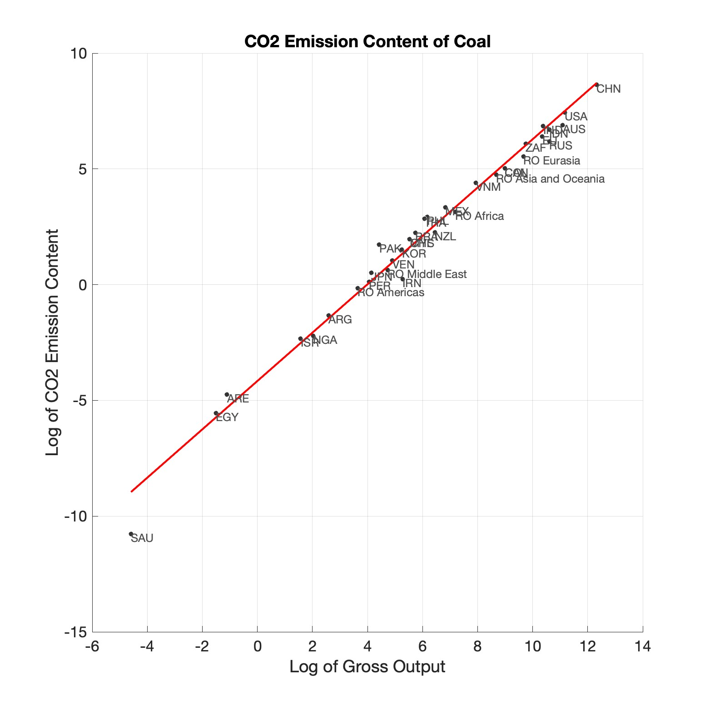
\(\:\:\)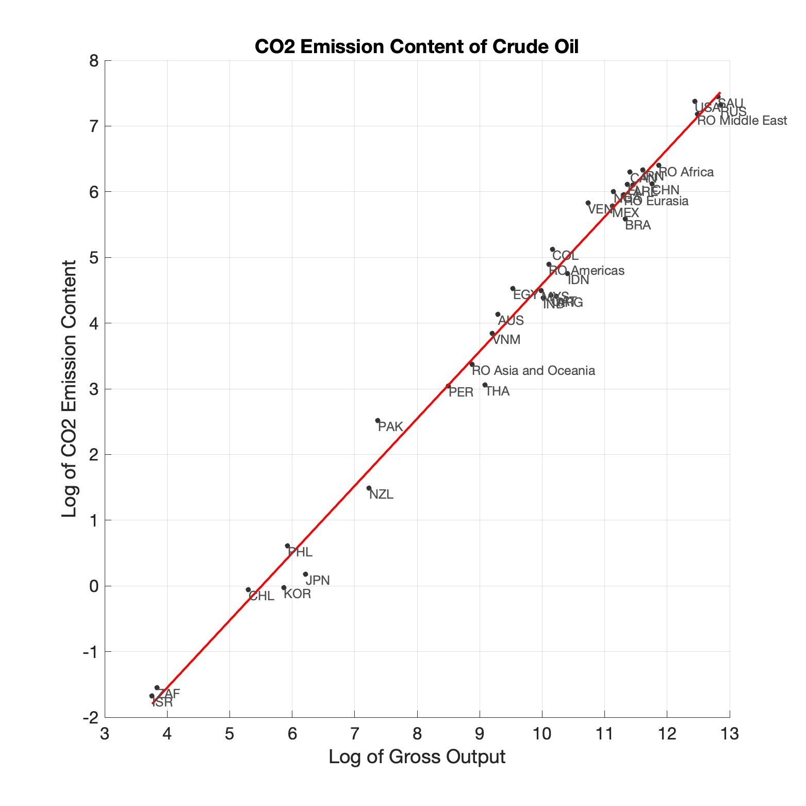
\(\:\:\)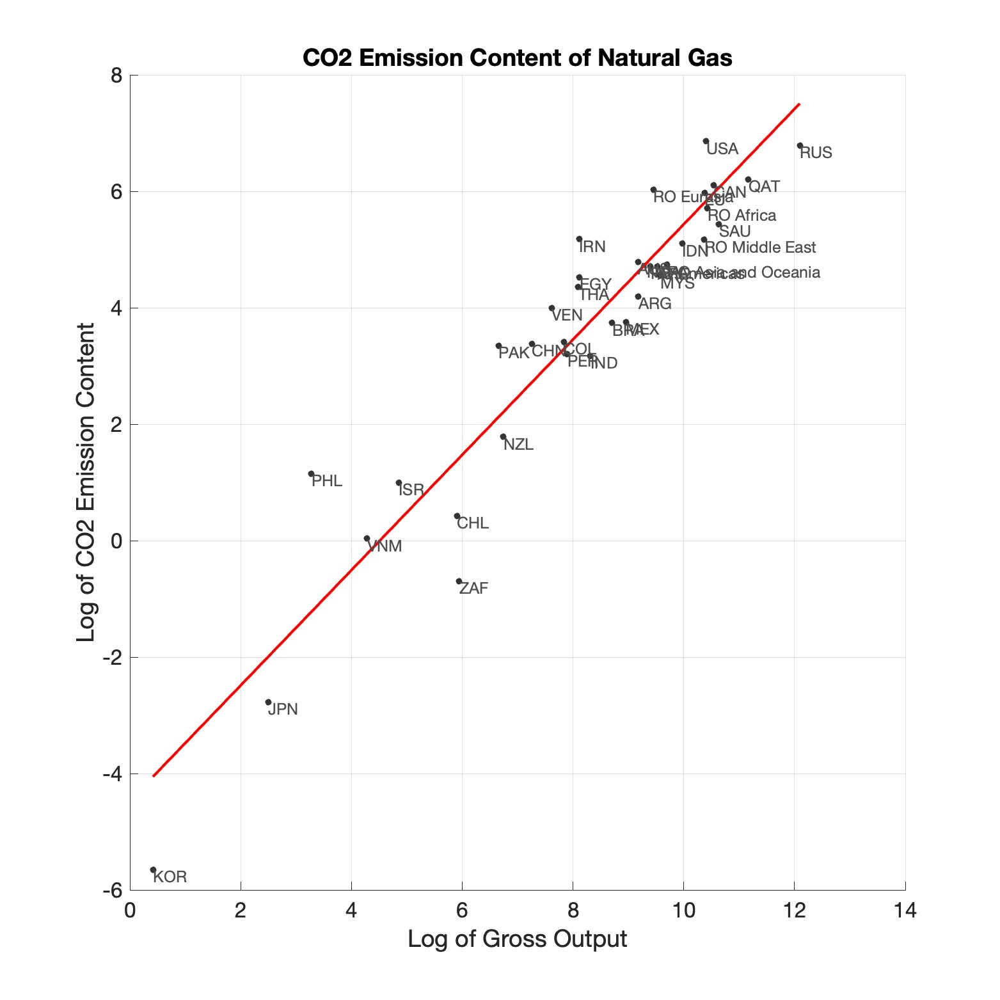
A.4 Complementary Material for Government Valuation of Climate Change in Policy Objective
A.4.1 Data and Calibration of Fossil Fuel Taxes
For taxes on fossil fuel, we rely on data from the OECD’s Environmentally-related Tax Revenues, which reports, for each country, the amount of tax revenue collected from four categories: Energy, Pollution, Resources, and Transport. We use the aggregate measure over these categories because countries differ in how they tax fossil fuels, often relying on one or a combination of these categories. On average, the Energy category accounts for 57% of revenues, Transport for 33%, Resources for 6%, and Pollution for the remaining 4%. We use these data for the year 2014, which is the year of the data used for the baseline calibration of the model.
An important point is in order regarding the OECD’s classification of these taxes into Energy, Pollution, Resources, and Transport. Across countries, and for different institutional reasons, governments have taxed fossil fuels using different instruments that fall under different nominal “tags” while essentially taxing fossil-fuel use. One may argue that many of these taxes reflect concerns about the adverse effects of local air emissions on human health, environmental degradation, or the political economy of the domestic institution. As such, restricting attention to the Pollution tag simply because its name refers to pollutions can be problematic, since health- or environmentally related pollution may be taxed under any of these tags. That is why we consider all four categories rather than restricting our attention to one.
Let \(T^{(env)}_{i}\) denote the aggregate environmentally-related tax revenues in country \(i\), and let \(\boldsymbol {t}_{i}\equiv [t^{(I)}_{i,kg},t^{(H)}_{i,k}]\) stack country \(i\)’s ad valorem energy tax rates for each energy good \(k\) across all industries indexed by \(g\) (\(t^{(I)}_{i,kg}\)) and the representative household in country \(i\) (\(t^{(H)}_{i,k}\)). We do not have comprehensive data on these taxes by energy type, but since such taxes are typically levied on fossil fuel utility bills, we allow for non-zero energy tax rates only for Natural Gas, Refined Petroleum, and Gas Manufacturing & Distribution, and set the tax rates to zero for all other energy goods. In addition, we assume that these energy tax rates are proportional to their emissions intensity:
where \(x_{i}\) is a country-level “as if” tax on each unit of emissions and \(v^{(I)}_{i,kg}\) and \(v^{(H)}_{i,k}\) are the emissions intensities of each energy good \(k\) when used in each industry \(g\) or by households. We calibrate the non-zero rates in \(\boldsymbol {t}_{i}\) such that the baseline general equilibrium of the model exactly matches the ratio of the environmentally-related tax revenues to GDP in each country, \(T^{(rev)}_{i}/Y_{i}\). This calibration problem can be formulated as a non-linear (general equilibrium) system in which the problem is to solve for \(N\) unknown \(x_{i}\) values for \(i=1,...,N\), given \(N\) observed moments, \(T^{(rev)}_{i}/Y_{i}\), for \(i=1,...,N\).
A.4.2 Carbon Prices
We use carbon pricing data from the OECD’s Net Effective Carbon Rates dataset. We extract two measures of explicit carbon pricing, both reported in euros per tonne of \(\text{CO}_{2}\)-equivalent: the carbon tax (CARBTAX) and the emissions trading system permit price (MPERPRI). A key advantage of this dataset is that both measures are reported as average prices relative to economy-wide \(\text{CO}_{2}\)-equivalent emissions, which allows us to aggregate them into a single economy-wide measure of explicit carbon pricing. Accordingly, for each country-year we convert both series to USD per tonne of \(\text{CO}_{2}\)-equivalent and sum them to obtain our “carbon price” measure. The most recent available data are for 2023, which we use for calibration.
A.4.3 Calibration of Government Valuation of Climate Change in Policy Objective
As noted in the main text, we specify the objective function of country \(i\)’s government as:
Here, the disutility from local emissions, \(\delta ^{\text{(local)}}_{i}Z_{i}\), is a shorthand for non-climate damages in government’s evaluation, such as adverse local health effects from air pollutants co-emitted with \(\text{CO}_{2}\) emissions. The disutility from global emissions, \(\delta ^{\text{(global)}}_{i}Z^{\text{(global)}}\), is the climate damage cost from global \(\text{CO}_{2}\) emissions.
In the first step of our calibration, we recover \(\delta ^{\text{(local)}}_{i}\) from energy taxes in 2014 when carbon pricing was virtually absent everywhere. We specifically assume that in 2014, \(\delta ^{\text{(global)}}_{i}\) is zero everywhere, meaning that countries have not yet included climate concerns into their objective function. This assumption allows us to pin down \(\delta ^{\text{(local)}}_{i}\) from 2014 energy tax data.
In the spirit of revealed preferences of governments, we want observed energy taxes for each country \(i\), \(\boldsymbol {t}_{i}\equiv [t^{(I)}_{i,kg},t^{(H)}_{i,k}]\), to be optimal when country \(i\) take other countries’ policies as given:
Since our focus is on carbon pricing policies, we verify optimality by checking only deviations from observed energy taxes that are implied by introducing a uniform carbon price within country \(i\). Specifically, we seek \(\delta ^{\text{(local)}}_{i}\) such that any perturbation \(\boldsymbol {t}_{i}+\Delta \boldsymbol {t}_{i}\), where \(\Delta \boldsymbol {t}_{i}\) is induced by introducing a positive or negative uniform carbon price, lowers the value of the objective function. Without this constraint, one would need to check the optimality for each element of the vector of taxes—each type of fuel and each end-user in a country. Introducing this constraint simplifies the multi-dimensional problem while focusing on carbon pricing as the policy instrument we focus on.
Our numerical algorithm to find \(\delta ^{\text{(local)}}_{i}\) is as follows. We first compute general equilibrium outcomes under energy tax perturbations. We consider a grid of hypothetical uniform carbon prices \(x_{i}\) ranging from -30.0 to +30.0 USD per tonne of \(\text{CO}_{2}\) in increments of 0.1, yielding 601 values. For each \(x_{i}\), we compute the implied energy tax change \(\Delta \boldsymbol {t}_{i}(x_{i})\) and solve for the resulting general equilibrium values \(C_{i}(x_{i})\) and \(Z_{i}(x_{i})\).
We then find the welfare-maximizing carbon price for each candidate \(\delta ^{\text{(local)}}_{i}\). We discretize \(\delta ^{\text{(local)}}_{i}\) over a grid from -200 to 200 with step size 0.1. For each candidate value of \(\delta ^{\text{(local)}}_{i}\), we evaluate the objective function \(C_{i}(x_{i})-\delta ^{\text{(local)}}_{i}Z_{i}(x_{i})\) across all 601 carbon price perturbations and identify the value \(x^{*}_{i}\left (\delta ^{\text{(local)}}_{i}\right )\) that maximizes this objective.
We next identify the \(\delta ^{\text{(local)}}_{i}\) that rationalizes observed taxes. We seek the value of \(\delta ^{\text{(local)}}_{i}\) for which \(x^{*}_{i}\left (\delta ^{\text{(local)}}_{i}\right )=0\), meaning that the existing energy tax structure (corresponding to \(x_{i}=0\)) is optimal. This procedure typically yields a unique \(\delta ^{\text{(local)}}_{i}\), but the discrete grid occasionally produces multiple neighboring values that satisfy this condition. In such cases, we take the average of the smallest and largest qualifying values.
Lastly, for some countries, there is no value of \(\delta ^{\text{(local)}}_{i}\) in our grid for which \(x^{*}_{i}\left (\delta ^{\text{(local)}}_{i}\right )=0\)—that is, no value that rationalizes observed energy taxes as an unconstrained interior optimum. In these cases, we identify all values of \(\delta ^{\text{(local)}}_{i}\) for which the objective function \(C_{i}(x_{i})-\delta ^{\text{(local)}}_{i}Z_{i}(x_{i})\) is downward sloping at \(x_{i}=0\). At such values, introducing a positive carbon price would decrease welfare. Among these values, we select the largest \(\delta ^{\text{(local)}}_{i}\), which represents an upper bound on the government’s valuation of local damages, given the constraint that deviations from observed taxes are restricted to those implied by introducing a positive carbon price. This choice is motivated by two considerations: first, since our subsequent policy analysis focuses on introducing carbon taxes (i.e., positive carbon prices), this corner solution ensures that remaining at current tax levels maximizes welfare under that constraint; second, while arbitrarily negative values of \(\delta ^{\text{(local)}}_{i}\) would also satisfy this condition mechanically, the largest qualifying value provides a plausible calibration of government preferences.
Our numerical algorithm to recover \(\delta ^{\text{(global)}}_{i}\) proceeds similarly to the first step but now takes the calibrated values of \(\delta ^{\text{(local)}}_{i}\) as given. In this step, we suppose that each country draws a value of \(\delta ^{\text{(global})}_{i}\) that represents its commitment to combating climate change. Let \(\tilde {\tau }_{i}\) denote the carbon price in country \(i\), which was zero in 2014 but it is now updated to the observed values in 2023 as countries developed concern for climate change.
Here, we first compute general equilibrium outcomes under different carbon pricing scenarios. For each country \(i\), we consider a grid of carbon prices \(\tilde {\tau }_{i}\) ranging from \(\tilde {\tau }^{(observed)}_{i}-20\) to \(\tilde {\tau }^{(observed)}_{i}+20\) (per tonne of \(\text{CO}_{2}\)) in increments of 0.1, yielding 401 values. For each \(\tilde {\tau }_{i}\), we solve for the resulting general equilibrium values \(C_{i}(\tilde {\tau }_{i})\), \(Z_{i}(\tilde {\tau }_{i})\), and \(Z^{\text{(global)}}(\tilde {\tau }_{i})\), where the latter reflects changes in global emissions resulting from country \(i\)’s carbon pricing policy.
We then find the welfare-maximizing carbon price for each candidate \(\delta ^{\text{(global)}}_{i}\). We discretize \(\delta ^{\text{(global)}}_{i}\) over a grid from -200 to 200 with step size 0.1. For each candidate value of \(\delta ^{\text{(global)}}_{i}\), we evaluate the objective function \(C_{i}(\tilde {\tau }_{i})-\delta ^{\text{(local)}}_{i}Z_{i}(\tilde {\tau }_{i})-\delta ^{\text{(global)}}_{i}Z^{\text{(global)}}(\tilde {\tau }_{i})\) across all 401 carbon price values and identify the value \(\tilde {\tau }^{*}_{i}\left (\delta ^{\text{(global)}}_{i}\right )\) that maximizes this objective.
Finally, we identify the \(\delta ^{\text{(global)}}_{i}\) that rationalizes observed 2023 carbon prices. We seek the value of \(\delta ^{\text{(global)}}_{i}\) for which \(\tilde {\tau }^{*}_{i}\left (\delta ^{\text{(global)}}_{i}\right )\) matches the observed carbon price in country \(i\) in 2023. This procedure typically yields a unique \(\delta ^{\text{(global)}}_{i}\), though when the discrete grid produces multiple neighboring values satisfying this condition, we take the average of the smallest and largest qualifying values. Countries identified as corner solutions in the first step all have zero or very small carbon prices in 2023, and we set \(\delta ^{\text{(global)}}_{i}=0\) for them. These countries are Indonesia, Mexico, Philippines, Vietnam, and Rest of Asia. Apart from these countries, New Zealand is the only country in our sample for which no \(\delta ^{\text{(global)}}_{i}\) rationalizes its observed carbon policy as an optimum. For New Zealand, we instead calibrate \(\delta ^{\text{(global)}}_{i}\) by considering \(C_{i}(\tilde {\tau }_{i})-\delta ^{\text{(local)}}_{i}Z_{i}(\tilde {\tau }_{i})-\delta ^{\text{(global)}}_{i}Z^{\text{(local)}}(\tilde {\tau }_{i})\) as their objective function, as if they do not internalize the impact of their policy on global emissions. This approach effectively treats New Zealand as not internalizing the general equilibrium effects of its carbon pricing on other countries’ emissions.
To explain how the above procedure works, consider Figure A.4 that illustrates our two-stage calibration for the European Union. Panel A shows that when \(\delta ^{\text{(local)}}_{i}=90.4\), the objective function is maximized at zero additional carbon price, indicating that existing 2014 energy taxes optimally internalize local co-pollutant damages. Panel B shows that when we incorporate global climate damages at \(\delta ^{\text{(global)}}_{i}=48.9\), the welfare function peaks at a carbon price of $35/t\(\text{CO}_{2}\) – corresponding to the observed 2023 EU carbon price (measured at the economy-wide level). Together, these panels show that the EU’s energy policy can be rationalized as reflecting local damage costs of $90.4/t\(\text{CO}_{2}\) (embedded in energy taxes) and global climate damage costs of $48.9/t\(\text{CO}_{2}\) (reflected in carbon pricing), where both disutility parameters are measured in carbon-price-equivalent units.
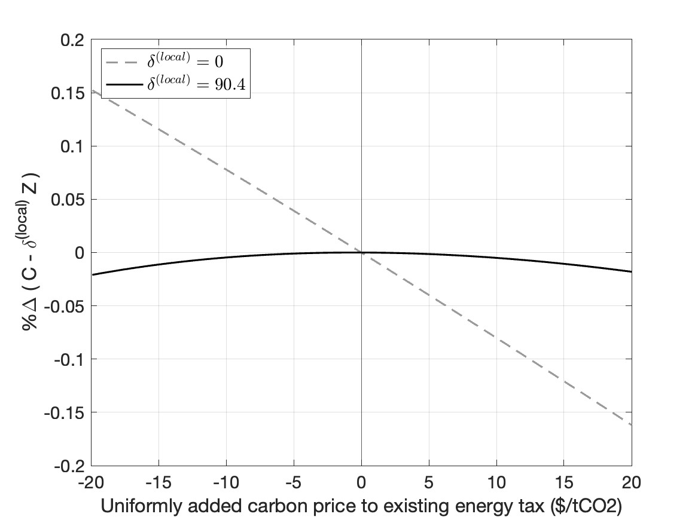
(a) Local Emission Disutility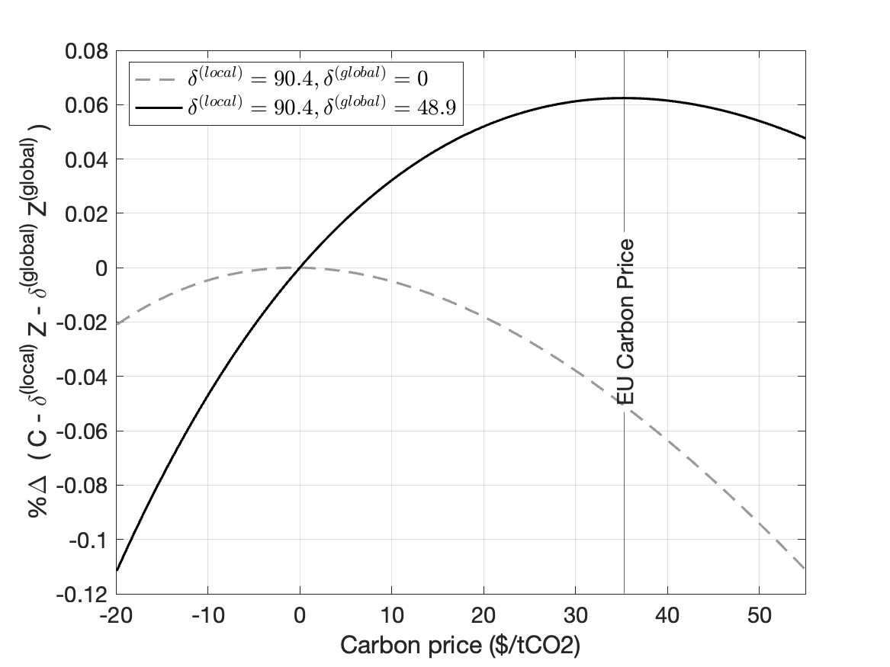
(b) Global Emission DisutilityTable A.3 presents the calibrated emission disutility parameters for all countries and regions in our sample, alongside the underlying energy tax and carbon pricing data. Column (1) converts the ad valorem fossil fuel tax rates in 2014 into their implied carbon prices ($/tCO\(_{2}\)) based on the carbon content of each fuel, providing a carbon-price-equivalent measure of 2014 energy taxation. Column (2) shows the explicit carbon price implemented in each country in 2023, reflecting the adoption of explicit carbon pricing policies over this period. Columns (3) and (4) report our calibrated parameters: \(\delta ^{(\text{local})}\) represents the government’s valuation of local co-pollutant damages, inferred from 2014 fossil fuel taxes, and \(\delta ^{(\text{global})}\) represents the government’s valuation of global climate damages, inferred from 2023 carbon prices. Both parameters are expressed in carbon-price-equivalent units to facilitate interpretation and comparison.
A.4.4 Complementary Material for Calibrating Country-specific Climate Change Damage
We model climate damages using the reduced-form specification in Shapiro (2021). Country \(i\)’s utility is proportional to real consumption net of climate damages:
Here \(Z\) denotes global emissions in the equilibrium of interest and \(Z_{0}\) is the reference (baseline) level of global emissions. The parameter \(\mu _{i}\) governs how strongly country \(i\) is affected by changes in global emissions around the baseline.
To calibrate \(\mu _{i}\), we match the country-level social cost of carbon (CSCC). Differentiating \(U_{i}\) with respect to global emissions and evaluating at the baseline \(Z=Z_{0}\) yields the marginal climate damage for country \(i\) in utility units:
We convert this marginal damage into units of real consumption by dividing by the marginal utility of consumption, which in our model is proportional to the country price index \(P_{i}\). Define \(\delta _{i}\) as the marginal damage in units of real consumption:
The implied country-level social cost of carbon is then
Using \(E_{i}\equiv C_{i}P_{i}\) for country \(i\)’s national expenditure, this relationship can be written compactly as
We now solve for \(\mu _{i}\) given observed national expenditure, \(E_{i}\), and the estimates of \(\text{CSCC}_{i}\) taken from Ricke et al. (2018). For countries with \(\text{CSCC}_{i}>0\), the calibration chooses \(\mu _{i}\) to satisfy
which is equivalent to the quadratic equation
This equation generally admits two real roots. We select the root consistent with the branch where marginal damages are increasing in \(\mu _{i}\). This corresponds to choosing the smaller root if \(\text{CSCC}_{i}\ge 0\) and the largest root if \(\text{CSCC}_{i}<0\).
Figure A.5 reports the calibration results, which are easier to interpret in terms of the implied climate costs. Specifically, using the calibrated \(\mu _{i}\), the figure plots the percentage change in real income resulting from a 10% increase in global emissions, \(100\times \left (\left [1+\mu _{i}\times 0.1\times Z^{(global)}_{0}\right ]^{-1}-1\right )\), against each country’s social costs of carbon, \(\text{CSCC}_{i}\). The income loss varies between -2.2 for Russia (that gains from increases in emissions) to 13.9% for the UAE, with an average of 2.0% across countries in the sample.
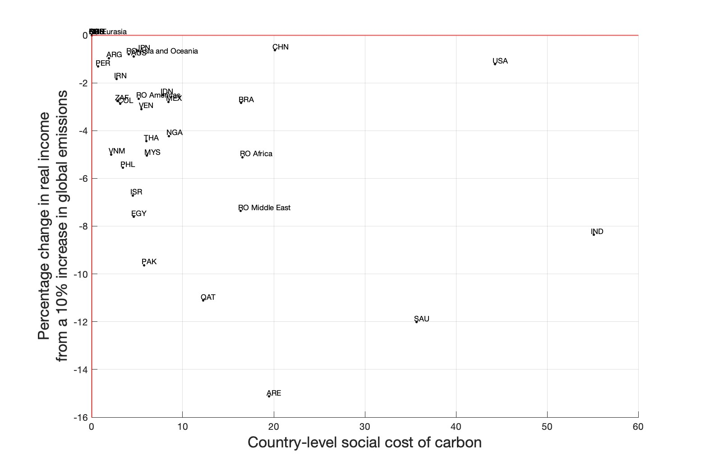
B Proofs and Derivations
Changes in Aggregate Price Indexes
Combining the cost function in Section 3 with Equations (10) and (12), the change in the price index of the industry \(k\) composite is:
Taking logs from the above equation and writing it in vector notation, yields
where \(\mathbf{A}_{i}=\left [\alpha ^{I}_{i,gk}\right ]_{k,g}\) is the \(K\times K\) input-output matrix; \(\mathbf{B}_{i}\equiv \left [\alpha ^{R}_{i,k}\ln \hat {\ell }_{i,k}+\frac {1}{\sigma _{k}-1}\ln \lambda _{ii,k}\right ]_{k}\) is a \(K\times 1\) vector; and \(\mathbf{1 }\) and \(\mathbf{I}\) are respectively \(K\times 1\) column vector of ones and the \(K\times K\) identity matrix. Inverting the above equation, delivers:
Letting \(a_{i,gk}\) denote the entry \(\left (k,g\right )\) of the inverse Leontief matrix, the above equation delivers the following expression for the change in the industry-level price index:
Change in Industrial Emissions. To characterize the change in industrial emissions, \(\hat {Z}^{\left (I\right )}_{i,gk}\), we appeal to the proportionality condition, \(Z_{i,gk}=v_{i,gk}C_{i,gk}\), which links emissions for each energy transaction to the quantity of energy inputs, where the conversion factor, \(v_{i,gk}\), is an engineering constant. Considering the Cobb-Douglas production function with country and industry-specific weights, we can specify the unit input cost as
Note that the share of reserves in production is only non-zero in primary energy sectors and zero otherwise, i.e., \(\alpha ^{R}_{i,k}>0\) if \(k\in \mathbb {E}_{1}\) and \(\alpha ^{R}_{i,k}=0\) for all \(k\notin \mathbb {E}_{1}\). The intermediate input price index, \(\tilde {P}_{i,g}=\left (1+t^{\left (I\right )}_{i,g}\right )P_{i,g}\), is the after-tax price of input bundle \(g\), where the tax \(t^{\left (c\right )}_{i,g}\) is revised only for energy inputs (\(g\in \mathbb {E}\)). Based on cost minimization,
Given the constancy of \(v^{\left (I\right )}_{i,gk}\), \(\alpha ^{\left (I\right )}_{i,gk}\), \(\alpha ^{\left (L\right )}_{i,k}\), and \(L_{i}\), we can use the above equation to specify the change in industrial emissions as
The above equation equates the change in emissions associated with energy use in a given industry with the changes in the relative price of energy to labor inputs, \(\hat {\tilde {P}}_{i,g}/\hat {w}_{i}\), and the change in employment \(\hat {\ell }_{i,k}\).
Next, we must characterize the change in the relative price of labor-to-energy in terms of changes in observable share variables. Invoking the constant elasticity import demand system, \(\lambda _{ii,g}=\left ((1+t^{\left (Q\right )}_{i,g})P_{ii,g}/P_{i,g}\right )^{1-\sigma _{k}}\), we can write the change in the after-tax price \(\tilde {P}_{i,k}=(1+t^{\left (I\right )}_{i,k})P_{i,k}\) of the energy composite as
Considering our parametric specification for \(c_{i,k}\), the change in the producer price of the variety \((i,i,k)\) in response to the policy shocks is
where the last line follows from cost minimization, whereby \(r_{i,k}R_{i,k}=\alpha ^{R}_{i,k}w_{i}\ell _{i,k}L_{i}/\alpha ^{L}_{i,k}\), which yields \(\hat {r}_{i,k}=\hat {w}_{i}\hat {\ell }_{i,k}\) given the constancy of \(\alpha ^{R}_{i,k},\)\(\alpha ^{L}_{i,k}\), and \(R_{i,k}\). To make the notation more compact, we integrate the carbon policy change, which channels through changes to energy-specific consumption and supply-side taxes as
Appealing to the expression for \(\hat {P}_{ii,k}\) and using the compact notation for energy taxes, we can specify the change in the after-tax price of composite energy input \(k\in \mathbb {E}\) as
The system of equations specified above implicitly determines \(\left \{ \hat {\tilde {P}}_{i,k}\right \} _{k}\) in terms of \(\left \{ \hat {w}_{i},\hat {r}_{i},\hat {\tau }_{i,k},\hat {\ell }_{i,k},\hat {\lambda }_{ii,k}\right \}\). Inverting this system and performing some algebraic simplifications yields
Rearranging the above equation specified the \(\hat {\tilde {P}}_{i,k}/w_{i}\) for each energy variety, which when plugged back into our initial expression for \(\hat {Z}^{\left (I\right )}_{i,gk}\), yields
To give intuition, the term labelled as “trade-related effects” encompasses the information about how trade impacts the relative price of labor-to-energy inputs via the domestic expenditure shares. The remaining three terms represent adjustments to domestic variables. All these effects are adjusted by the role of input-output linkages. Also note that since energy production uses non-energy inputs, adjustment to non-energy prices influence the price of energy inputs.
Changes in Income to Wage Ratio
Total income in country \(i\) is the sum of primary factor rewards and energy tax revenues. Namely,
Rearranging the above equation yields
Next we specify industry-wide sales in terms of wage payments, by noting that
Based on the above equation, we can express the payments to energy reserves as
and the energy tax income as
Plugging the above equations back into our last expression for \(Y_{i}\) yields
which immediately implies the expression for the income to wage ratio presented in the main text:
The change in the income-to-wage ratio starting from a baseline of zero taxes, follows immediately from the fact that \(\alpha ^{R}_{i,k}\), \(\alpha ^{L}_{i,k}\), and \(\beta _{i,k}\) are constant implying that
which in turn delivers the expression for \(\hat {\kappa }_{i}\) presented in the main text:
Consumption Effects of Carbon Pricing Reform
Our goal is to characterize the effect of the carbon tax shock, \(\left \{ d\ln \tau ^{(C)}_{i,k},d\ln \tau ^{(Q)}_{i,k}\right \} _{k}\), on real consumption \(C_{i}=\text{V}_{i}\left (Y_{i},\tilde {\boldsymbol {P}}_{i}\right )\). Here, \(Y_{i}\) denotes income, which is the sum of factor rewards and tax revenues. In particular,
where \(C_{i,k}\equiv C^{\left (H\right )}_{i,k}+\sum _{g}C^{\left (I\right )}_{i,kg}\) and \(\tilde {w}_{i}L_{i}\) is a short-hand for primary factor compensation, which includes labor and energy reserves. Taking derivatives from \(C_{i}=\text{V}_{i}\left (Y_{i},\tilde {\boldsymbol {P}}_{i}\right )\), yields
Since \(\tau ^{\left (C\right )}_{i,k}\) is applied to all demanded goods in industry \(k\), the change in the variety-specific price \(d\ln \tilde {P}_{ni,k}\) can be expressed as
Plugging the above equation back into the welfare expression, delivers
We can invoke Roy’s identity \(\frac {\partial \text{V}_{i}\left (.\right )}{\partial \tilde {P}_{ni,k}}=\frac {\partial \text{V}_{i}\left (.\right )}{\partial Y_{i}}C^{\left (H\right )}_{ni,k}\) to simplify this equation as
To further simplify the above equation, we note that \(\text{d}\ln P_{ni,k}=\text{d}\ln \tilde {P}_{ii,k}+\frac {1}{\sigma _{k}-1}\left (\text{d}\ln \lambda _{ni,k}-\text{d}\ln \lambda _{ii,k}\right )\), and follow the ACR logic to write the above equation as
Noting that \(\tilde {P}_{ii,k}=\tau ^{\left (Q\right )}_{i,k}P_{ii,k}\), we can specify domestic price changes as
where \(\alpha ^{(\tilde {L})}_{i,k}\equiv \left [1-\sum _{g}\alpha ^{\left (I\right )}_{i,gk}\right ]\) denotes the primary factor input share. Considering that \(\tilde {P}_{i,g}=\tau ^{\left (C\right )}_{i,g}\,\tilde {P}_{ii,g}\lambda ^{\frac {1}{\sigma _{g}-1}}_{ii,g}\) can be reformulated as
The above equation can be alternatively represented in vector notation as
Inverting the above system we get
where \(a_{i,gk}\) is the element \(\left (k,g\right )\) of the inverse Leontief \(\left (\mathbf{I}-\mathbf{A}_{i}\right )^{-1}\) and \(\tilde {a}_{i,gk}\) is the element \(\left (k,g\right )\) of the matrix \(\left (I-\mathbf{A}_{i}\right )^{-1}\mathbf{A}_{i}\). Noting that \(\left (\mathbf{I}-\mathbf{A}_{i}\right )^{-1}\mathbf{A}_{i}=\left (\mathbf{I}-\mathbf{A}_{i}\right )^{-1}-\mathbf{I}\), we get
Considering the above equation, we can plug Equation B.4 into Equation B.3 to obtain:
Next we characterize the change in income by taking derivative from Equation B.2, which delivers
In the neighborhood of \(\boldsymbol {\tau }=1\), the above equation simplifies to
To evaluate the above equation, we use the market clearing condition whereby total expenditure on good \(k\) equals the final demand expenditure \(P_{i,k}C^{H}_{i,k}=\beta _{i,k}Y_{i}\) and the intermediate input expenditure. Namely,
In a closed economy, the sales equals expenditure per industry, \(P_{ii,k}Q_{i,k}=P_{i,k}C_{i,k}\). Hence, we can write the above equation in vector notation as \(\boldsymbol {P}_{ii}\circ \boldsymbol {Q}_{i}=\boldsymbol {\beta }_{i}Y_{i}+\mathbf{A}^{T}_{i}\boldsymbol {P}_{ii}\circ \boldsymbol {Q}_{i}\), which after basic inversion implies:
The open economy counterpart of this equation can be stated as
where \(\mathcal {X}_{i,k}\equiv P_{ii,k}Q_{i,k}-P_{i,k}C_{i,k}\) is net exports in industry \(k\). In vector notation, \(\boldsymbol {P}_{i}\circ \boldsymbol {C}_{i}=\boldsymbol {\beta }_{i}Y_{i}+\mathbf{A}^{T}_{i}\boldsymbol {P}_{i}\circ \boldsymbol {C}_{i}+\mathbf{A}^{T}_{i}\boldsymbol {X}_{i}\), which after inversion yields:
Alternatively, we can write the accounting equation as \(P_{i,k}Q_{ii,k}=\mathcal {X}_{i,k}+\beta _{i,k}Y_{i}+\sum _{g}\alpha ^{\left (I\right )}_{i,kg}P_{ii,k}Q_{i,k}\), which after inversion delivers
Plugging the expressions for \(\frac {P_{i,k}C_{i,k}}{Y_{i}}\) and \(\frac {P_{i,k}Q_{ii,k}}{Y_{i}}\) into the equation representing \(\text{d}Y_{i}\mid _{\boldsymbol {\tau }=1}\), we obtain:
Plugging the above expression for \(\text{d}Y_{i}\) into the Equation B.5 delivers:
Correlation between the consumption gains and emission gains from trade
This appendix establishes the claim under Remark 1. We use the following notation for cross-country moments: \(\mathbb {E}_{i}[\cdot ]\equiv N^{-1}\sum _{i\in \mathbb {N}}(\cdot )\), and \(\operatorname {Cov}_{i}(\widehat {C}_{i},\widehat {Z}_{i})\equiv \mathbb {E}_{i}[\widehat {C}_{i}\widehat {Z}_{i}]-\mathbb {E}_{i}[\widehat {C}_{i}]\mathbb {E}_{i}[\widehat {Z}_{i}].\) Apply the simplifying restrictions stated under Remark 1. Since the reform changes only trade costs, all carbon-tax terms in Propositions 1 and 2 equal one. Since \(\alpha ^{R}_{0}=0\), the extraction price terms also collapse to one. Moreover, national income equals labor income, so the income-to-wage term in Proposition 2 becomes \(\widehat {\kappa }_{i}=1\). Finally, the proportionality assumption about emission intensities neutralizes the composition term involving the weighted sum in Proposition 1. Under internationally symmetric input-output coefficients and final expenditure shares, Propositions 1 and 2 give
where \(a^{Z}_{k}\equiv a_{k0}\) and \(a^{C}_{k}=\sum _{g}a_{kg}\beta _{g}\). The operator \(\Lambda _{i}(.)\) has two elementary properties that will be useful going forward: \(\Lambda _{i}(\boldsymbol {0})=1,\) and \(\Lambda _{i}(\boldsymbol {a}+\boldsymbol {a'})=\Lambda _{i}(\boldsymbol {a})\Lambda _{i}(\boldsymbol {a'})\). Lastly, define the Cauchy–Schwarz divergence \(D_{\lambda }\) in trade exposure under any two dependence vectors \(\boldsymbol {a}\) and \(\boldsymbol {a'}\) and the normalized divergence \(\mathcal {D}_{\lambda }\) as
Define the vector \(\boldsymbol {\Lambda }(\boldsymbol {a})\equiv \bigl (\Lambda _{i}(\boldsymbol {a})\bigr )_{i\in \mathbb {N}}\) that stacks all country-level exposure operators and define the following cross-country operators for the inner product as \(\langle \boldsymbol {x},\boldsymbol {y}\rangle _{i}\equiv \mathbb {E}_{i}[x_{i}y_{i}]\), and the norm as \(\|\boldsymbol {x}\|_{i}\equiv \sqrt {\mathbb {E}_{i}[x^{2}_{i}]}\). The cosine similarity between in trade exposure for dependence profiles \(\boldsymbol {a}\) and \(\boldsymbol {a'}\) is
Because \(\Lambda _{i}(.)\) is strictly positive, the cosine lies in \((0,1]\). The Cauchy–Schwarz divergence in (B.7) can equivalently be written as \(D_{\lambda }(\boldsymbol {a},\boldsymbol {a'})=-2\ln \!\left [\operatorname {cos}^{\lambda }(\boldsymbol {a},\boldsymbol {a'})\right ]\). Moreover, the Cauchy–Schwarz inequality implies \(\mathbb {E}_{i}[\Lambda _{i}(\boldsymbol {a})\Lambda _{i}(\boldsymbol {a'})]^{2}\leq \mathbb {E}_{i}[\Lambda _{i}(\boldsymbol {a})^{2}]\mathbb {E}_{i}[\Lambda _{i}(\boldsymbol {a'})^{2}]\), so the divergence is non-negative: \(D_{\lambda }(\boldsymbol {a},\boldsymbol {a'})\geq 0\).
Next, we characterize \(\operatorname {Cov}_{i}(\widehat {C}_{i},\widehat {Z}_{i})\) in terms of Cauchy–Schwarz divergence. To this end, we note first that both \(\widehat {C}_{i}\) and \(\widehat {Z}_{i}\) are strictly positive. Evaluating (B.7) at \(\boldsymbol {0}\) and using \(\Lambda _{i}(\boldsymbol {0})=1\) gives \(D_{\lambda }(\boldsymbol {a}^{C},\boldsymbol {0})=\ln \!\left [\frac {\mathbb {E}_{i}[\widehat {C}^{2}_{i}]}{\mathbb {E}_{i}[\widehat {C}_{i}]^{2}}\right ]\) and \(D_{\lambda }(\boldsymbol {a}^{Z},\boldsymbol {0})=\ln \!\left [\frac {\mathbb {E}_{i}[\widehat {Z}^{2}_{i}]}{\mathbb {E}_{i}[\widehat {Z}_{i}]^{2}}\right ].\) The trade-exposure weighted divergence between the consumption and energy IO dependence vectors is
Subtracting (B.9) from the sum of \(D_{\lambda }(\boldsymbol {a}^{C},\boldsymbol {0})\) and \(D_{\lambda }(\boldsymbol {a}^{Z},\boldsymbol {0})\) yields
By the covariance definition, \(\operatorname {Cov}_{i}(\widehat {C}_{i},\widehat {Z}_{i})\equiv \mathbb {E}_{i}[\widehat {C}_{i}\widehat {Z}_{i}]-\mathbb {E}_{i}[\widehat {C}_{i}]\mathbb {E}_{i}[\widehat {Z}_{i}]\), we get \(\frac {\mathbb {E}_{i}[\widehat {C}_{i}\widehat {Z}_{i}]}{\mathbb {E}_{i}[\widehat {C}_{i}]\mathbb {E}_{i}[\widehat {Z}_{i}]}=1+\frac {\operatorname {Cov}_{i}(\widehat {C}_{i},\widehat {Z}_{i})}{\mathbb {E}_{i}[\widehat {C}_{i}]\mathbb {E}_{i}[\widehat {Z}_{i}]}\). Combining the above two equations yields the following
Since \(\mathbb {E}_{i}[\widehat {C}_{i}]\) and \(\mathbb {E}_{i}[\widehat {Z}_{i}]\) are strictly positive and the exponential function is strictly increasing, we get
Next noting that \(\mathbb {E}_{i}[\left (\Lambda _{i}(\boldsymbol {a})\right )^{2}]=\operatorname {Var}_{i}(\Lambda _{i}(\boldsymbol {a}))+\mathbb {E}_{i}[\Lambda _{i}(\boldsymbol {a})]^{2}\), we can write the divergence between \(\boldsymbol {a}\) and zero dependence as \(D_{\lambda }(\boldsymbol {a},\boldsymbol {0})=\ln \!\left [1+\operatorname {CV}_{i}(\Lambda _{i}(\boldsymbol {a}))^{2}\right ]\). It thus follows that the denominator of the normalized divergence, \(D_{\lambda }(\boldsymbol {a}^{C},\boldsymbol {0})+D_{\lambda }(\boldsymbol {a}^{Z},\boldsymbol {0})\), is strictly positive if and only if at least some countries vary in either their trade or consumption exposures to trade. Accordingly, dividing () by the positive denominator obtains the result under Remark 1:
C Required Transfers under Globally Optimal Carbon Pricing
Environment. Country \(i\) faces a (possibly distorted) domestic consumer price vector \(\tilde {\mathbf {P}}_{i}\in \mathbb {R}^{K}_{++}\), and we write \(\tilde {\mathbf {P}}=(\tilde {\mathbf {P}}_{i})_{i\in \mathbb {N}}\). World producer prices are analogously \(\mathbf {P}\). Global emissions are \(Z\equiv Z^{(global)}\geq 0\). Country \(i\)’s indirect utility is \(V_{i}(E_{i},\tilde {\mathbf {P}}_{i})\), where \(E_{i}\) is nominal expenditure (income after transfers) at domestic consumer prices \(\tilde {\mathbf {P}}_{i}\). Welfare of country \(i\) is
where \(\Delta _{i}:\mathbb {R}_{+}\rightarrow \mathbb {R}_{++}\) is the climate-damage index. This is the indirect-utility version of the welfare function in equation (1)
Pareto weights and transfers. Fix Pareto weights \((\omega _{i})_{i\in \mathbb {N}}\) with \(\omega _{i}>0\) and \(\sum _{i\in \mathbb {N}}\omega _{i}=1\). Transfers are encoded by expenditure shares \(\alpha =(\alpha _{i})_{i\in \mathbb {N}}\) on the simplex,
with national expenditure levels satisfying
where \(Y\) is global income. Explicit international transfers are therefore \(T_{i}=E_{i}-Y_{i}\), where \(Y_{i}\) is country \(i\)’s income before the international transfer and includes the carbon-tax revenue collected by that country. Transfer feasibility implies \(\sum _{i}T_{i}=0\) and hence \(\sum _{i}E_{i}=\sum _{i}Y_{i}=Y\).
Policies and income. A policy consists of prices of goods, including energy goods with embedded carbon, \(\tilde {\mathbf {P}}\), and transfers \(\alpha\). Global income is factor income plus the revenue from the goods-price wedges:
Here, \(\tilde {\mathbf {w}}\cdot \mathbf {L}\) denotes world factor income and \(\mathbf {C}=(\mathbf {C}_{i})_{i\in \mathbb {N}}\) is the vector of quantities on which the goods-price wedges are levied.
Assumptions. Throughout we impose the following regularity conditions.
(Homotheticity and differentiability) For each \(i\), \(V_{i}(\cdot,\tilde {\mathbf {P}}_{i})\) is homogeneous of degree one in \(E_{i}\), so
\begin{equation}V_{i}(E_{i},\tilde {\mathbf {P}}_{i})=E_{i}V_{i}(1,\tilde {\mathbf {P}}_{i}),\qquad \frac {\partial \ln V_{i}(E_{i},\tilde {\mathbf {P}}_{i})}{\partial \ln E_{i}}=1.\label {eq:hom}\end{equation}The underlying consumption aggregator is continuously differentiable and homogeneous of degree one, and therefore satisfies\begin{equation}\sum _{k\in \mathbb {K}}\frac {\partial C_{i}}{\partial C^{(H)}_{ik}}C^{(H)}_{ik}=C_{i}.\label {eq:consumption-euler}\end{equation}(Climate damages) Each \(\Delta _{i}(Z)\) is positive and continuously differentiable. At the optimum, the Pareto-weighted marginal effect of global emissions is negative:
\begin{equation}\sum _{n\in \mathbb {N}}\omega _{n}\frac {d\ln \Delta _{n}(Z)}{dZ}<0.\label {eq:aggregate-damage}\end{equation}No sign restriction is needed country by country.(Utility maximization) For each \(k\in \mathbb {K}\), Roy’s identity implies
\begin{equation}\frac {\partial \ln V_{i}(E_{i},\tilde {\mathbf {P}}_{i})}{\partial \tilde {P}_{i,k}}=-\frac {\partial \ln V_{i}(E_{i},\tilde {\mathbf {P}}_{i})}{\partial E_{i}}C^{(H)}_{ik}=-\frac {C^{(H)}_{ik}}{E_{i}}.\label {eq:roy}\end{equation}(Cost minimization) Producers minimize costs, profits are exhausted in factor payments, and markets clear. The resulting income envelope for each consumer-price coordinate is
\begin{equation}\frac {dY}{d\tilde {P}_{i,k}}=\big (C_{ik}-C^{(I)}_{ik}\big )+(\tilde {\mathbf {P}}-\mathbf {P})\cdot \frac {d\mathbf {C}}{d\tilde {P}_{i,k}}=C^{(H)}_{ik}+(\tilde {\mathbf {P}}-\mathbf {P})\cdot \frac {d\mathbf {C}}{d\tilde {P}_{i,k}}.\label {eq:income-envelope}\end{equation}Global emissions satisfy the corresponding accounting identity\begin{equation}\frac {dZ}{d\tilde {P}_{i,k}}=\frac {dZ}{d\mathbf {C}}\cdot \frac {d\mathbf {C}}{d\tilde {P}_{i,k}}.\label {eq:emissions-envelope}\end{equation}- (Rank condition) After fixing the numeraire, the matrix \(D_{\tilde {\mathbf {P}}}\mathbf {C}\) of quantity responses to consumer prices has full rank at the optimum. Economically, the available price changes generate enough independent changes in quantities to identify the efficient price wedge.
Eisenberg–Gale program.\(\quad\) Given Pareto weights \(\omega\), the program is
Transfers are implicitly determined by \(\alpha\) through (C.2).
Optimal policy schedule.\(\quad\) Under A1–A5, any interior solution \((\tilde {\mathbf {P}}^{*},\alpha ^{*})\) to (C.10) satisfies
It is useful to write the efficient carbon price per ton as
Then equation () is simply
Optimal Policy Derivation. We proceed in two steps. The transfer condition is derived first because it is the condition that makes the household-price terms cancel in the price first-order condition.
Step 1 (optimal transfers). At an efficient allocation supported by consumer prices \(\tilde {\mathbf {P}}^{*}\), including the carbon wedge, the planner’s first-order condition for every positive household consumption quantity is
where \(\lambda >0\) is the common marginal value of nominal expenditure and \(\lambda \tilde {P}^{*}_{i,k}\) is the shadow cost of delivering the good, inclusive of its marginal climate cost. Multiplying (C.11) by \(C^{(H)*}_{ik}\) and summing over \(k\in \mathbb {K}\) gives
The second line uses the Euler identity in (C.5) and the budget constraint in equation (C.2). Summing () over countries and using \(\sum _{i}\omega _{i}=1\) and \(\sum _{i}E^{*}_{i}=Y^{*}\) yields \(1=\lambda Y^{*}\) and, thus, \(\lambda =1/Y^{*}\). Therefore,
Step 2 (optimal prices). By homotheticity in A1, \(E_{i}=\alpha _{i}Y\), and \(\sum _{i}\omega _{i}=1\), the planner’s objective can be written exactly as
Fix \((i,k)\) and differentiate (C.13) with respect to \(\tilde {P}_{i,k}\), holding the expenditure shares fixed. This gives
By A1, A3, and the transfer result \(E^{*}_{i}=\omega _{i}Y^{*}\),
Substituting (C.8), (C.9), and (C.15) into (C.14) gives
Collecting () over all independent price coordinates gives
By the rank condition in A5, the bracketed term must be zero. Rearranging yields (). Together with Step 1, this proves the optimal policy schedule.
Efficient carbon price along the supply chain. The price condition above determines the total charge on a ton of carbon, but not the point along the supply chain at which that charge is collected. For the two implementation results below, hold the pre-existing ad valorem energy taxes at zero and consider the additive carbon prices in equation (8). To state the result using the notation of the main text, let \(\tilde {\tau }^{(Q)}_{i}\) denote country \(i\)’s uniform extraction-side carbon price, so \(\tilde {\tau }^{(Q)}_{i,k}=\tilde {\tau }^{(Q)}_{i}\) for \(k\in \mathbb {E}_{1}\), and let \(\tilde {\tau }^{(C)}_{i}\) denote its uniform demand-side carbon price, so \(\tilde {\tau }^{(H)}_{i,k}=\tilde {\tau }^{(I)}_{i,kg}=\tilde {\tau }^{(C)}_{i}\) for energy uses covered by the tax.
Suppose carbon is counted once at extraction and once at combustion, and is conserved as primary energy is traded and processed. Then every positive flow of carbon extracted in country \(j\) and ultimately burned in country \(i\) must face
Thus efficiency fixes the total price per ton along the supply chain. It does not require that the full amount be collected either at extraction or at use.
The equalization across countries follows from simple comparisons. If two extraction countries \(j\) and \(j'\) both supply carbon that is burned in country \(i\), then
If carbon extracted in country \(j\) is burned in two countries \(i\) and \(i'\), then
If international energy trade overlaps sufficiently that all active extraction and combustion countries are linked through positive energy flows, these comparisons imply a common extraction-side component and a common demand-side component:
The pure demand-side scheme is the endpoint \(\tilde {\tau }^{(Q)*}=0\); the pure supply-side scheme is the endpoint \(\tilde {\tau }^{(Q)*}=\tilde {\tau }^{*}\). Under the carbon-accounting condition above, moving one dollar per ton from the use side to the extraction side leaves the total charge on every ton unchanged and therefore supports the same real allocation. In this implementation, pre-tax producer prices and factor rewards are unchanged; only the location of carbon-tax revenue changes.
Carbon-tax revenue in terms of emissions. The carbon-tax revenue component of country \(i\)’s income in equation (17) can be written directly in terms of the location of extraction and combustion. Under uniform additive carbon prices, that revenue is
The first term is revenue collected on carbon extracted in country \(i\); the second is revenue collected on carbon burned in country \(i\). Carbon accounting implies
Along the efficient family in (C.20), world carbon-tax revenue is therefore
Hence the location at which the efficient carbon price is collected changes the distribution of revenue across countries, but not total world revenue. Country \(i\)’s income along this family is
and the supporting international transfer remains
Because the real allocation is the same at the two endpoints, factor income and \(Y^{*}\) are also the same. The transfer under the pure supply-side implementation minus the transfer under the pure demand-side implementation is therefore
Thus changing the point of collection redistributes revenue according to the difference between carbon extracted in country \(i\) and carbon burned in country \(i\). These differences sum to zero across countries.
Decentralization (Eisenberg–Gale). Given \(\omega\), the program (C.10) is a weighted Nash-product maximization. Under the standard convexity conditions, its optimality conditions coincide with the household, firm, market-clearing, and budget conditions of a competitive equilibrium. Equation () provides the efficient goods-price wedge, while equation () provides the lump-sum transfers that support \(E^{*}_{i}=\omega _{i}Y^{*}\). The efficient allocation is therefore supported as a decentralized equilibrium. Equations (C.20) and (C.24) show that the same allocation can be supported by any efficient split of the carbon price between extraction and use, with the international transfers adjusted for the resulting distribution of carbon-tax revenue.
D Equilibrium in Changes
This section introduces the system of equations used to solve equilibrium changes in response to trade and carbon policy shocks. Trade shocks can arise from changes in iceberg trade costs, denoted as \(d_{ij,k}\), or from adjustments to trade taxes, import tariffs (\(\tau ^{(M)}_{ij,k}=1+t^{(M)\prime}_{ni,k}\)) or export taxes \((\tau ^{(X)}_{ij,k}=1+t^{(X)}_{ij,k})\). Carbon policy shocks, on the other hand, involve changes to supply-side taxes (\(\tau ^{(Q)}_{i,k}\)) that target carbon emissions at the point of primary energy extraction \(k\in \mathbb {E}_{1}\), and/or demand-side taxes that target carbon emissions at the consumption location of primary or secondary energy \(k\in \mathbb {E}_{1}\cup \mathbb {E}_{2}\). These demand-side taxes are applied to industries (\(\tau ^{(I)}_{i,kg}\)) or households (\(\tau ^{(H)}_{i,k}\)).
Note that in the main body of the paper, we did not explicitly model import tariffs and export taxes \((\tau ^{(M)}_{ij,k},\tau ^{(X)}_{ij,k})\) on the trade policy side. Here, we include them for completeness. In addition, to maintain generality in the model specification, below we assume that the household consumption aggregator follows a CES structure between energy (E) and non-energy (N) goods with substitution elasticity \(\eta _{H}\), with a Cobb-Douglas structure within the energy and non-energy categories. Similarly, production technologies are modeled as CES between energy (E) and non-energy (N) with substitution elasticity \(\eta _{I}\), with Cobb-Douglas structures within each category. In our main specification, however, we have adopted a simpler functional form with \(\eta _{H}\rightarrow 1\) and \(\eta _{I}\rightarrow 1\), which corresponds to a Cobb-Douglas aggregation also over energy (E) and non-energy (N) goods.
To express equilibrium responses to trade and climate policy changes, we adopt the exact hat algebra notation. For any generic variable \(z\) that denotes the value of \(z\) in the status quo equilibrium, we use \(z'\) to denote its value in the counterfactual equilibrium, with \(\hat {z}\equiv z'/z\) representing the change from status quo to the counterfactual value.
Consider a policy change that adjusts trade policy parameters to \(\{{d'}_{ij,k},\tau ^{(M)\prime}_{ij,k},\tau ^{(X)\prime}_{ij,k}\}\) and carbon policy instruments to \(\{t^{(Q)\prime}_{i,k},t^{(I)\prime}_{i,kg},t^{(H)\prime}_{i,k},\tilde {\tau }^{(Q)\prime}_{i,k},\tilde {\tau }^{(I)\prime}_{i,kg},\tilde {\tau }^{(H)\prime}_{i,k}\}\).
Prices along the supply chain include producer prices at the location of supply, landed prices inclusive of production, export, and import taxes, distribution-level prices that aggregate over landed price in each destination, and consumer prices that additionally include demand-side taxes. In our notation below, the cost share parameter of natural resources, \(\alpha ^{R}_{i,k}\), is non-zero in the primary energy industries and zero in all other industries. The change to prices along the supply chain is as follows:
where \(\delta ^{E}_{i,kg}=\frac {\alpha ^{I}_{i,kg}}{\sum _{g\in \mathbb {E}}\alpha ^{I}_{i,kg}}\) is the cost share of each energy type out of total energy input costs, \(\delta ^{F}_{i,kg}=\frac {\alpha ^{I}_{i,kg}}{\sum _{g\in \mathbb {F}}\alpha ^{I}_{i,kg}}\) is the cost share of each non-energy industry out of total non-energy intermediate input costs, \(\delta ^{L}_{i,k}=\frac {\alpha ^{L}_{i,k}}{\alpha ^{L}_{i,k}+\sum _{g\in \mathbb {F}}\alpha ^{I}_{i,kg}}\) is the cost share of labor out of total of labor and non-energy intermediate inputs costs, and \(\delta ^{E}_{i,k}=\frac {\sum _{g\in \mathbb {E}}\alpha ^{I}_{i,kg}}{1-\alpha ^{R}_{i,k}}\) is the cost share of energy inputs out of total costs net of those paid for carbon reserves.
The change in ad valorem carbon taxes on the supply and demand side of fossil fuel markets are:
The change to international expenditure shares follow from the CES gravity structure:
On the side of factor employment and intermediate input use, industries’ input cost shares are as follows:
On the final consumption side, households’ final expenditure shares are given by:
where \(\beta _{i,k|N}\) and \(\beta _{i,k|E}\) denote cost shares within the input bundles of non-energy and energy use. Changes to total sales, \(Y_{i,k}=P_{ii,k}Q_{i,k}\), in primary energy industries and secondary and non-energy industries can be expressed as:
where \(\ell _{i,k}=L_{i,k}/L_{i}\) denotes the employment share of industry \(k\) in country \(i\). In the post-policy equilibrium, total expenditures, inclusive or net of production and trade taxes, are equal to:
Using the changes in sales, expenditures, and prices, we can write the changes in \(\text{CO}_{2}\) emissions. Specifically, emissions changes at different levels of aggregation are as follows:
Labor market clearing conditions equate the demand and supply of labor at both the industry level and the national level, expressed in terms of post-policy equilibrium values:
Lastly, the balance of budget requires that total final expenditure equals the payments to factors of production plus the taxes that are rebated to households:
where taxes consist of taxes at the points of local production, exports, imports, and local demand
where composite carbon tax rates, \(\left \{ \tau ^{(Q)\prime}_{i,k},\tau ^{(I)\prime}_{i,kg},\tau ^{(H)\prime}_{i,k}\right \}\) consist of additive and multiplicative terms following equation 8 (evaluated at the post-policy equilibrium).
E Climate Fund Based on Supply-side Carbon Taxes
We formulate the optimal linkage problem described in Section 4.1 by considering the integration of supply-side carbon taxes into the WTO. This reform resembles the proposal presented in Section 7.1 of the main text, but differs in two respects.
First, emissions are taxed at the point of primary energy extraction. Second, the trade-related component of carbon-tax revenue is based on the exported, rather than imported, share of that revenue. Formally, the Fund satisfies the following global budget-balance condition:
Here, \(Z^{(Q)}_{i,k}\) denotes the \(\text{CO}_{2}\) emissions content of primary energy \(k\in \mathbb {E}_{1}\) (coal, crude oil, and natural gas), and the exported share of expenditure measures the extent to which the production of primary energy in a country is shipped to the rest of the world through exports.
We solve this constrained-linkage problem by maximizing the carbon price subject to constraints R1–R4, similar to the climate fund based on demand-side taxes in our main specification.
Table A.5 presents the results. Without transfers, the maximum carbon price is $27/\(\text{tCO}_{2}\). India emerges as the marginal country, followed by Brazil and Pakistan. Notably, these countries are neither the largest energy importers nor the largest exporters; rather, they lie on an intermediate position.
Introducing a fund financed by the exported share of carbon-tax revenues does not improve the outcome under any of the allocation rules considered. Although the table examines more allocation rules than in the demand-side design, none raises the maximum carbon price above $27/\(\text{tCO}_{2}\). In almost all cases, Saudi Arabia becomes the marginal country at very low carbon prices, typically followed by Russia.
These unfavorable outcomes arise because supply-side carbon tax revenues are highly concentrated in major energy-producing countries that export a large share of their energy production, such as Saudi Arabia and Russia. On the one hand, this concentration makes the distributional effects highly uneven without transfers. On the other hand, when transfers are introduced based on the exported share of supply-side tax revenues, the fund draws a disproportionately large share of its resources from these major exporters, leaving them worse off. In short, extraction-tax revenues are so unevenly distributed that they generate substantial distributional effects; and attempts to offset those effects through transfers lead to pushing the system to the opposite extreme by placing an excessive burden on the largest exporters.
F Additional Tables and Figures
| (1) | (2) | (3) | (4) | |
| Country | Implied Carbon Price | Explicit | Emission Disutility | |
| from Fossil Fuel | Carbon Price | Local | Global | |
| Taxes in 2014 | in 2023 | \(\Big ( \delta ^{local} \Big )\) | \(\Big ( \delta ^{global} \Big )\) | |
| European Union | 97.9 | 35.3 | 90.4 | 48.9 |
| United Arab Emirates | 0.0 | 0.0 | -12.1 | 0.0 |
| Argentina | 46.6 | 0.7 | 28.6 | 1.0 |
| Australia | 109.5 | 4.7 | 119.9 | 11.2 |
| Brazil | 30.9 | 0.0 | 18.2 | 0.0 |
| Canada | 27.2 | 28.6 | 17.1 | 32.1 |
| Chile | 32.3 | 1.5 | 15.0 | 1.3 |
| China | 9.5 | 2.1 | 14.8 | 2.3 |
| Colombia | 39.6 | 1.3 | 37.3 | 1.4 |
| Egypt, Arab Rep. | 7.2 | 0.0 | 2.2 | 0.0 |
| Indonesia | 0.0 | 0.0 | -13.7 | 0.0 |
| India | 10.1 | 0.0 | 1.8 | 0.1 |
| Iran, Islamic Rep. | 0.0 | 0.0 | -0.6 | 0.0 |
| Israel | 62.0 | 0.0 | 65.5 | 0.0 |
| Japan | 37.8 | 1.5 | 5.1 | 3.0 |
| Korea, Rep. | 37.3 | 6.0 | 22.8 | 7.3 |
| Mexico | 3.5 | 1.5 | -10.5 | 0.0 |
| Malaysia | 0.0 | 0.0 | -18.3 | 0.0 |
| Nigeria | 1.7 | 0.0 | 3.3 | 0.0 |
| New Zealand | 122.1 | 14.6 | 116.4 | 8.0 |
| Pakistan | 10.0 | 0.0 | 4.7 | 0.0 |
| Peru | 16.4 | 0.0 | 1.9 | 0.0 |
| Philippines | 8.0 | 0.0 | -6.5 | 0.0 |
| Qatar | 0.0 | 0.0 | 0.6 | 0.0 |
| Russian Federation | 0.0 | 0.0 | 0.8 | 0.0 |
| Saudi Arabia | 0.0 | 0.0 | 1.8 | 0.0 |
| Thailand | 0.0 | 0.0 | -18.6 | 0.0 |
| United States | 17.8 | 2.2 | 13.7 | 2.1 |
| Venezuela, RB | 0.0 | 0.0 | -0.8 | 0.0 |
| Vietnam | 3.1 | 0.0 | -4.5 | 0.0 |
| South Africa | 16.1 | 0.9 | 25.6 | 0.7 |
| RO Africa | 23.5 | 0.0 | 14.1 | 0.0 |
| RO Americas | 27.1 | 0.0 | 9.8 | 0.0 |
| RO Asia and Oceania | 5.3 | 0.3 | -29.5 | 0.0 |
| RO Eurasia | 7.2 | 0.7 | 2.7 | 0.5 |
| RO Middle East | 0.0 | 0.0 | -9.0 | 0.1 |
| Max Carbon | Reduction in | Marginal | |
| Price ($/tCO2) | Global Emission | Countries | |
| No Side Payments | 63 | -39.0% | VEN, NGA, RUS |
Side Payments: Allocations from the Fund | |||
| (a) Prop to dom. exp. share in all goods | 92 | -46.1% | RO Middle East, RUS, USA |
| (b) Prop to dom. exp. share in manufacturing | 82 | -43.9% | RO Middle East, RUS, USA |
| (c) Prop to dom. exp. share in all energy | 103 | -48.2% | RO Middle East, RUS, USA |
| (d) Prop to dom. exp. share in primary energy | 119 | -50.9% | RUS, RO Middle East, IND |
| (e) Share of global primary energy exports | 118 | -50.7% | IND, USA, PAK |
| Max Carbon | Reduction in | Marginal | |
| Price ($/tCO2) | Global Emission | Countries | |
| No Side Payments | 27 | -21.6% | IND, BRA, PAK |
Side Payments: Allocations from the Fund | |||
| (a) Prop to dom. exp. share in all goods | 7 | -7.7% | SAU, RUS, USA |
| (b) Prop to dom. exp. share in manufacturing | 7 | -7.7% | SAU, RUS, USA |
| (c) Prop to dom. exp. share in all energy | 8 | -8.6% | SAU, RUS, USA |
| (d) Prop to dom. exp. share in primary energy | 8 | -8.6% | SAU, RUS, USA |
| (e) Share of global primary energy exports | 27 | -21.6% | AUS, SAU, IND |
| (f) Prop to imp. share in all energy | 6 | -6.8% | SAU, RUS, VEN |
| (g) Prop to imp. share in primary energy | 6 | -6.8% | SAU, RUS, VEN |
| (h) Prop to national exp. share on energy | 8 | -8.5% | SAU, RUS, USA |
| (i) Prop to RoW historical emissions | 7 | -7.7% | SAU, RUS, USA |
| Max Carbon | Reduction in | Marginal | |
| Price ($/tCO2) | Global Emission | Countries | |
| No Side Payments | 63 | -39.0% | VEN, NGA, RUS |
Side Payments: Allocations from the Fund | |||
| (a) Prop to dom. exp. share in all goods | 33 | -27.7% | RUS, CHN, USA |
| (b) Prop to dom. exp. share in manufacturing | 34 | -28.2% | RUS, CHN, USA |
| (c) Prop to dom. exp. share in all energy | 37 | -29.6% | CHN, RUS, USA |
| (d) Prop to dom. exp. share in primary energy | 36 | -29.3% | CHN, USA, RUS |
| (e) Share of global primary energy exports | 30 | -26.4% | CHN, USA, BRA |
| Social cost of carbon, \(\sum _{i} \text{CSCC}_i\) | 292 | 156 | 292 | 156 |
| Impose \(\text{CSCC}_i \ge 0\) | No | No | Yes | Yes |
| No Side Payments | 13 | 23 | 81 | 81 |
Side Payments: Allocations from the Fund | ||||
| (a) Prop to domestic expenditure share in all goods | 13 | 25 | 92 | 92 |
| (b) Prop to domestic expenditure share in manufacturing | 14 | 25 | 94 | 94 |
| (c) Prop to domestic expenditure share in all energy | 14 | 25 | 98 | 98 |
| (d) Prop to domestic expenditure share in primary energy | 14 | 27 | 112 | 112 |
| (e) Share of global primary energy exports | 19 | 52 | 241 | 201 |
| Max Carbon | Reduction in | Marginal | |
| Price ($/tCO2) | Global Emission | Countries | |
| No Side Payments | 91 | -45.6% | IND, VEN, PAK |
Side Payments: Allocations from the Fund | |||
| (a) Prop to dom. exp. share in all goods | 137 | -53.2% | IND, USA, CHN |
| (b) Prop to dom. exp. share in manufacturing | 144 | -54.1% | USA, IND, CHN |
| (c) Prop to dom. exp. share in all energy | 134 | -52.8% | IND, USA, CHN |
| (d) Prop to dom. exp. share in primary energy | 110 | -49.3% | IND, USA, JPN |
| (e) Share of global primary energy exports | 94 | -46.4% | IND, USA, PAK |
| Max Carbon | Reduction in | |
| Price ($/tCO2) | Global Emission | |
| No Side Payments | 65 | -39.3% |
Side Payments: Allocations from the Fund | ||
| (a) Prop to dom. exp. share in all goods | 115 | -50.0% |
| (b) Prop to dom. exp. share in manufacturing | 105 | -48.3% |
| (c) Prop to dom. exp. share in all energy | 125 | -51.6% |
| (d) Prop to dom. exp. share in primary energy | 110 | -49.3% |
| (e) Share of global primary energy exports | 90 | -45.6% |
| Max Carbon | Reduction in | Marginal | |
| Price ($/tCO2) | Global Emission | Countries | |
| No Side Payments | 73 | -33.7% | VEN, NGA, IDN |
Side Payments: Allocations from the Fund | |||
| (a) Prop to dom. exp. share in all goods | 133 | -43.7% | RUS, RO Middle East, USA |
| (b) Prop to dom. exp. share in manufacturing | 111 | -40.7% | RO Middle East, RUS, USA |
| (c) Prop to dom. exp. share in all energy | 145 | -45.1% | USA, RUS, CHN |
| (d) Prop to dom. exp. share in primary energy | 144 | -45.0% | USA, CHN, IND |
| (e) Share of global primary energy exports | 135 | -43.9% | IND, USA, CHN |
| Max Carbon | Reduction in | Marginal | |
| Price ($/tCO2) | Global Emission | Countries | |
| No Side Payments | 66 | -39.9% | VEN, IDN, NGA |
Side Payments: Allocations from the Fund | |||
| (a) Prop to dom. exp. share in all goods | 110 | -49.4% | CHN, USA, RUS |
| (b) Prop to dom. exp. share in manufacturing | 113 | -49.9% | CHN, USA, RUS |
| (c) Prop to dom. exp. share in all energy | 110 | -49.4% | CHN, USA, RUS |
| (d) Prop to dom. exp. share in primary energy | 108 | -49.1% | CHN, USA, IND |
| (e) Share of global primary energy exports | 97 | -47.2% | CHN, PAK, USA |
/robustness/appendix-figures/figures/robustness_dynamic_effects_four_by_one-.png)
/robustness/appendix-figures/figures/robustness_untreated_placebos_four_by_one-.png)
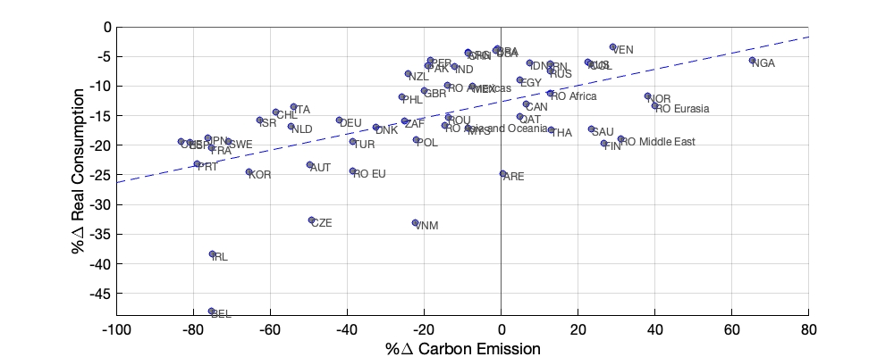
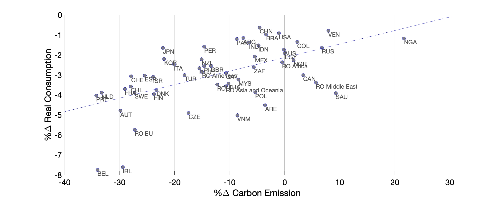
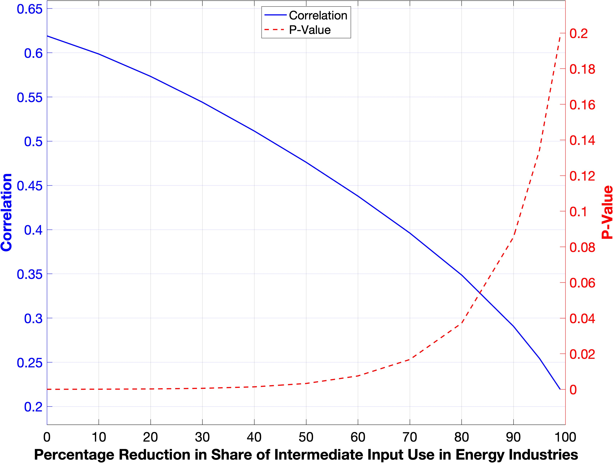
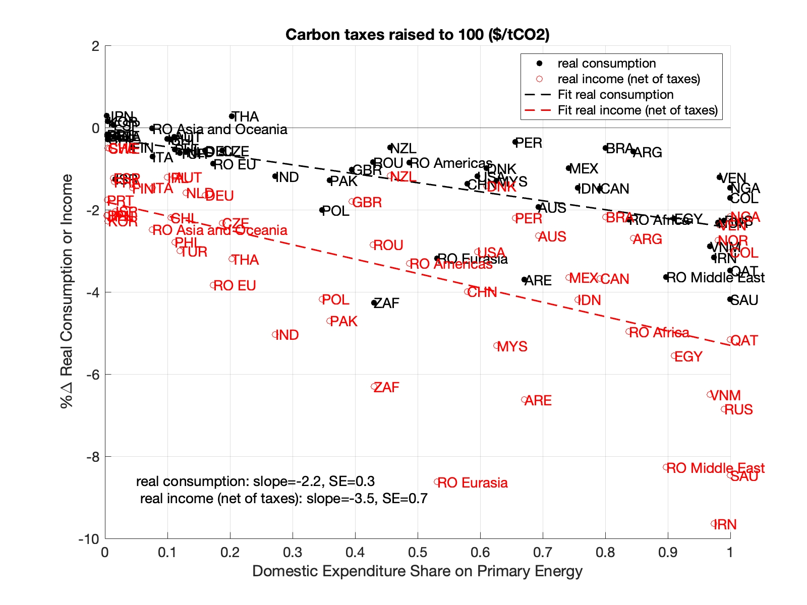
(a) Demand-side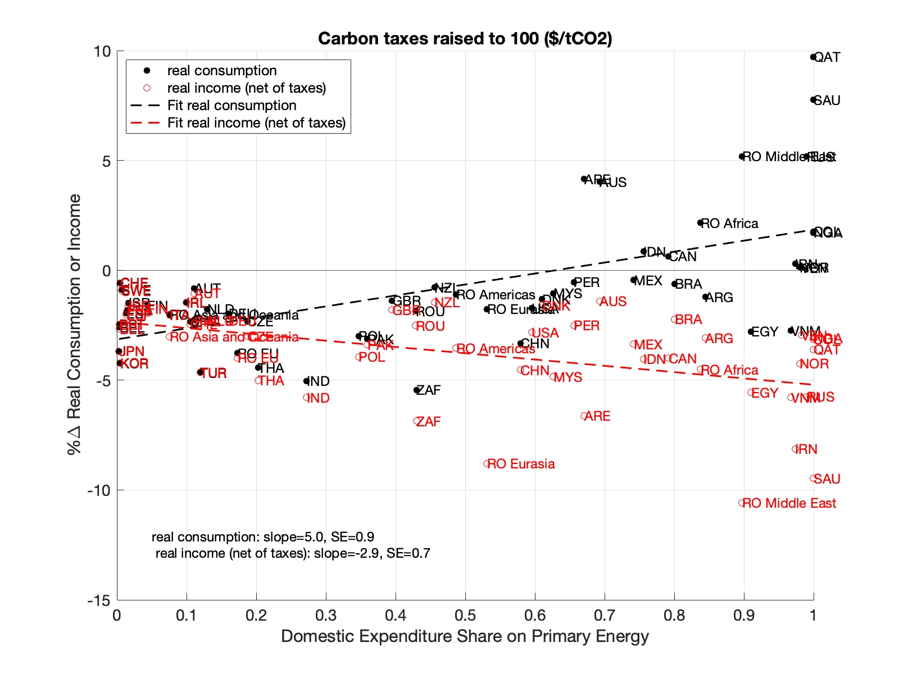
(b) Supply-side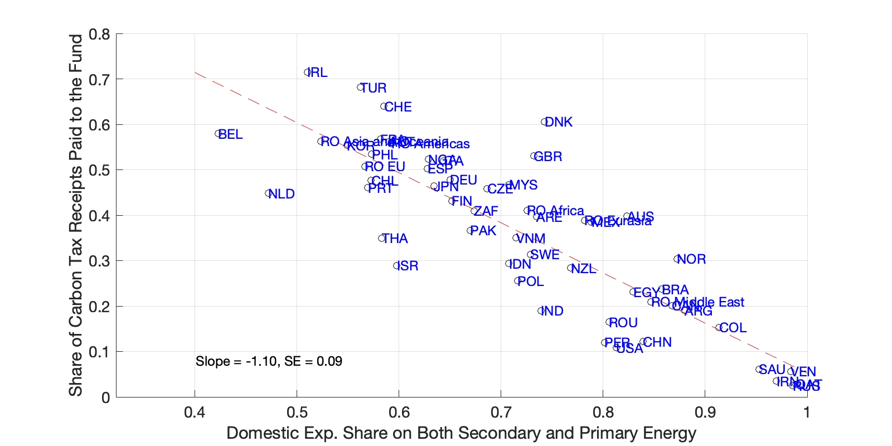
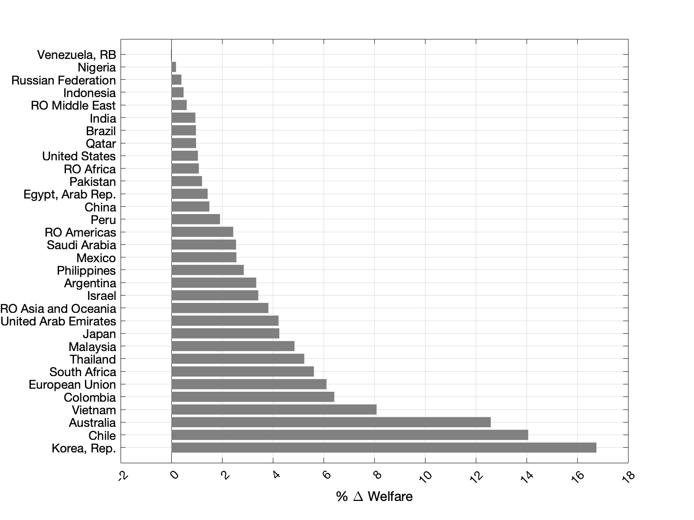